DRAFT — UE26CY151A · Unit_03 — Energy storage devices, hydrogen energy, and sensors · Complete Unit Master
·How to use this pack
Search this single unit master by lesson, timestamp, slide text or source page. Read the transcript in timestamp order, then compare extracted slide text with its page-faithful source figure. Formula candidates and archive question mappings are explicitly flagged for review. Topics include the applicable parts: overview, key terms, formulas, figures, flowcharts, important points, worked examples, past-paper questions and a recap. IDs are shared with the separate documents: E = formula, G = graph, F = flowchart, W = worked example. Each ID is numbered by topic, so E4.2 is the second formula of topic 4.
1UE26CY151A · Unit_03: Energy storage devices, hydrogen energy, and sensors
This unit master organizes source material for Engineering Chemistry, Unit_03, officially titled Energy storage devices, hydrogen energy, and sensors. It includes 10 video transcripts and 12 source slide decks, with page-level text and rendered images where available. This draft preserves source wording and page order; it does not claim a complete human subject review or full audiovisual review. EV0000001
2Batteries: Components and working of a battery, classification of batteries – primary, secondary, and reserve batteries (Part I)
This lesson is indexed from the source video titled Batteries: Components and working of a battery, classification of batteries – primary, secondary, and reserve batteries (Part I). Its complete timestamped transcript is preserved below in segment order. The original video path and content hash are recorded in datasets/lecture-corpus.json. Transcript text is source wording; it has not been silently corrected or rewritten. A candidate slide deck is grouped here according to the current matching score; the exact path and page locators are listed in the source evidence. EV0000002 · EV0000003
Graphs and diagrams

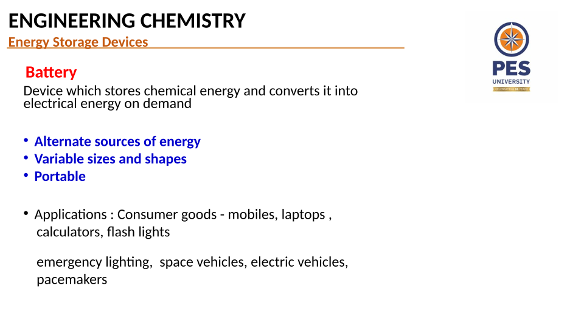
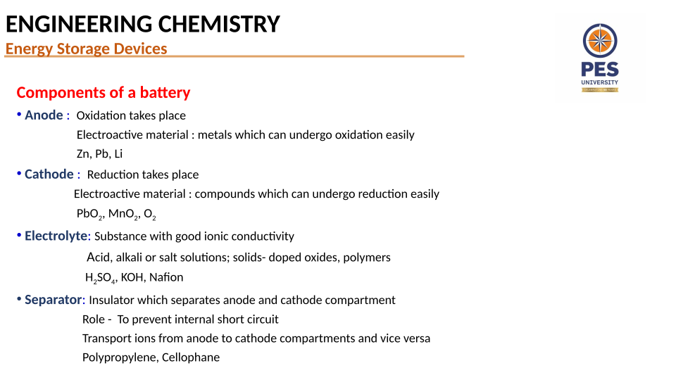
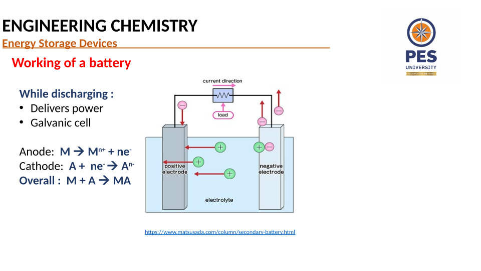
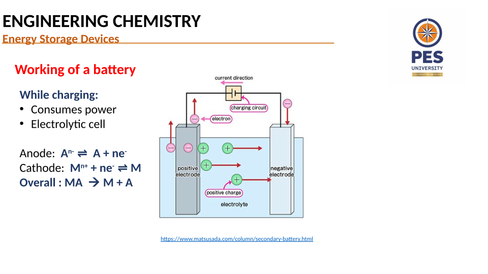
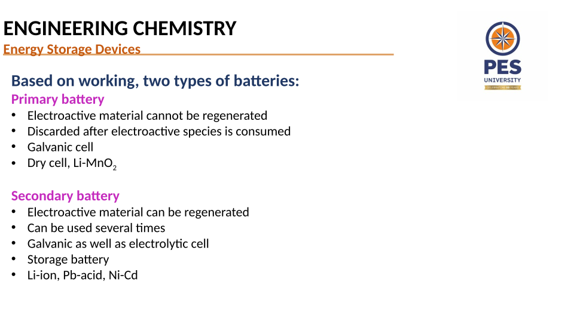
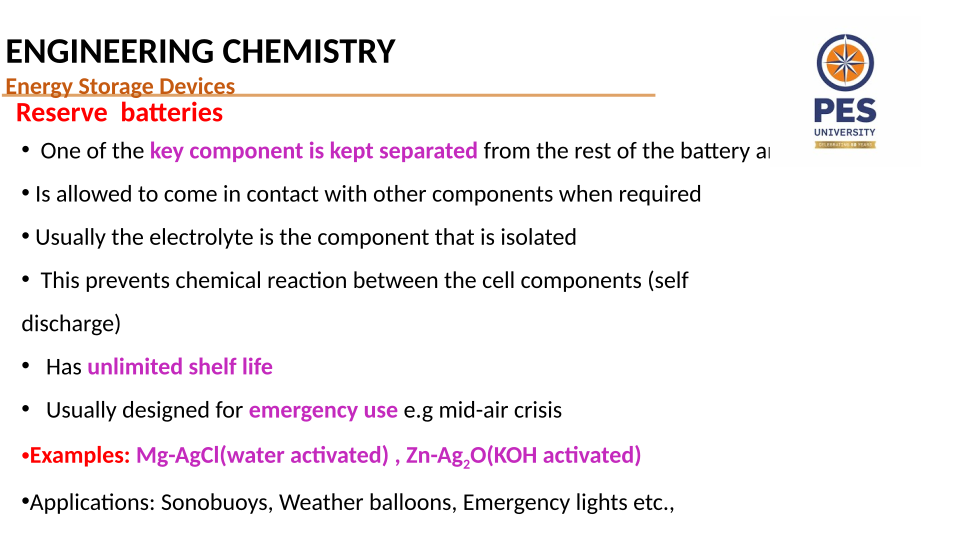
Important points and why
- Source slide page 1 (extracted text): ENGINEERING CHEMISTRY (UE26CY151 A,B) Department of Science and Humanities EV0000186 · EV0000187 · EV0000188
- Source slide page 2 (extracted text): ENGINEERING CHEMISTRY Energy Storage Devices Class 27 content: Batteries: Components, working & classification EV0000189 · EV0000190 · EV0000191
- Source slide page 3 (extracted text): ENGINEERING CHEMISTRY Energy Storage Devices Battery Device which stores chemical energy and converts it into electrical energy on demand Alternate sources of energy Variable sizes and shapes Portable Applications : Consumer goods - mobiles, laptops , calculators, flash lights emergency lighting, space vehicles, electric vehicles, pacemakers EV0000192 · EV0000193 · EV0000194
- Source slide page 4 (extracted text): ENGINEERING CHEMISTRY Energy Storage Devices Components of a battery Anode : Oxidation takes place Electroactive material : metals which can undergo oxidation easily Zn, Pb, Li Cathode : Reduction takes place Electroactive material : compounds which can undergo reduction easily PbO2, MnO2, O2 Electrolyte: Substance with good ionic conductivity Acid, alkali or salt solutions; solids- doped oxides, polymers H2SO4, KOH, Nafion Separator: Insulator which separates anode and cathode compartment Role - To prevent internal short circuit Transport ions from anode to cathode compartments and vice versa Polypropylene, Cellophane EV0000195 · EV0000196 · EV0000197
- Source slide page 5 (extracted text): ENGINEERING CHEMISTRY Energy Storage Devices Schematic diagram of a battery EV0000198 · EV0000199 · EV0000200
- Source slide page 6 (extracted text): ENGINEERING CHEMISTRY Energy Storage Devices Working of a battery [Image text, OCR] current direction load positive negative electrode electrode electrolyte (b)in case of discharge While discharging : Delivers power Galvanic cell Anode: M Mn+ + ne- Cathode: A + ne- An- Overall : M + A MA https://www.matsusada.com/column/secondary-battery.html EV0000201 · EV0000202 · EV0000203
- Source slide page 7 (extracted text): ENGINEERING CHEMISTRY Energy Storage Devices Working of a battery [Image text, OCR] current direction charging circuit electron positive negative electrode electrode positivecharge electrolyte (a)in case of charge While charging: Consumes power Electrolytic cell Anode: An- ⇌ A + ne- Cathode: Mn+ + ne- ⇌ M Overall : MA M + A https://www.matsusada.com/column/secondary-battery.html EV0000204 · EV0000205 · EV0000206
- Source slide page 8 (extracted text): ENGINEERING CHEMISTRY Energy Storage Devices Based on working, two types of batteries: Primary battery Electroactive material cannot be regenerated Discarded after electroactive species is consumed Galvanic cell Dry cell, Li-MnO2 Secondary battery Electroactive material can be regenerated Can be used several times Galvanic as well as electrolytic cell Storage battery Li-ion, Pb-acid, Ni-Cd EV0000207 · EV0000208 · EV0000209
- Source slide page 9 (extracted text): ENGINEERING CHEMISTRY Energy Storage Devices Reserve batteries One of the key component is kept separated from the rest of the battery and Is allowed to come in contact with other components when required Usually the electrolyte is the component that is isolated This prevents chemical reaction between the cell components (self discharge) Has unlimited shelf life Usually designed for emergency use e.g mid-air crisis Examples: Mg-AgCl(water activated) , Zn-Ag2O(KOH activated) Applications: Sonobuoys, Weather balloons, Emergency lights etc., EV0000210 · EV0000211 · EV0000212
- Source slide page 10 (extracted text): THANK YOU Department of Science and Humanities EV0000213 · EV0000214 · EV0000215
3Batteries: Components and working of a battery, classification of batteries – primary, secondary, and reserve batteries (Part II))
This lesson is indexed from the source video titled Batteries: Components and working of a battery, classification of batteries – primary, secondary, and reserve batteries (Part II)). Its complete timestamped transcript is preserved below in segment order. The original video path and content hash are recorded in datasets/lecture-corpus.json. Transcript text is source wording; it has not been silently corrected or rewritten. A candidate slide deck is grouped here according to the current matching score; the exact path and page locators are listed in the source evidence. EV0000026 · EV0000027
4Numericals_Energy storage devices
This lesson is indexed from the source video titled Numericals_Energy storage devices. Its complete timestamped transcript is preserved below in segment order. The original video path and content hash are recorded in datasets/lecture-corpus.json. Transcript text is source wording; it has not been silently corrected or rewritten. A candidate slide deck is grouped here according to the current matching score; the exact path and page locators are listed in the source evidence. EV0000050 · EV0000051
Graphs and diagrams
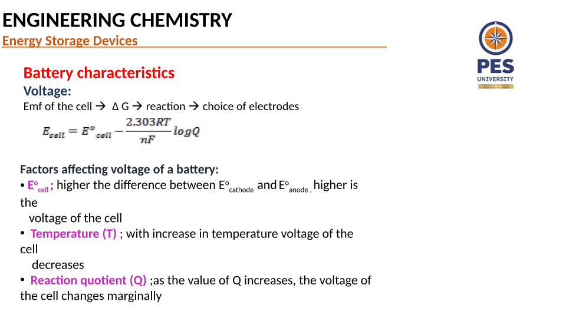
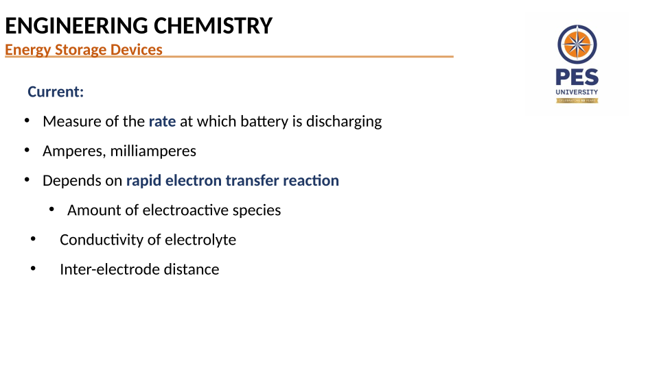
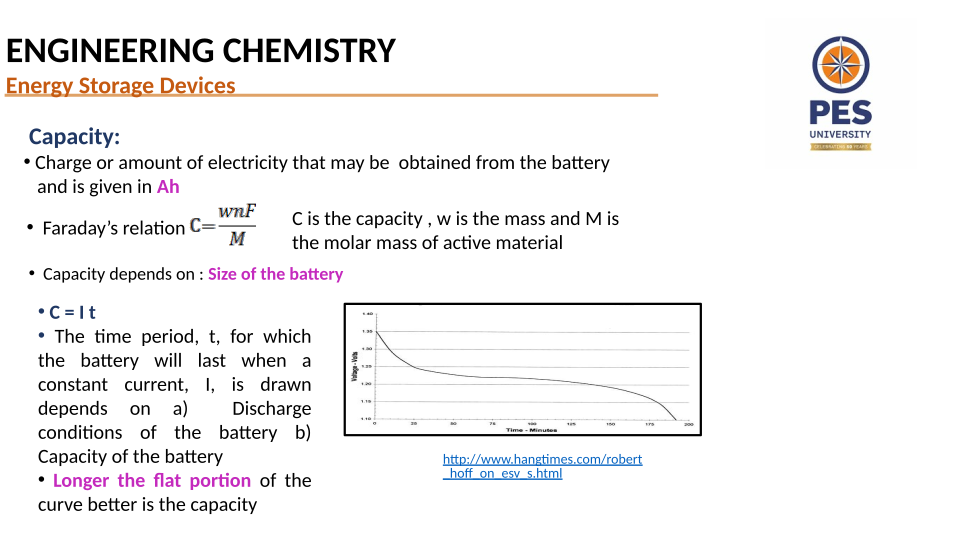
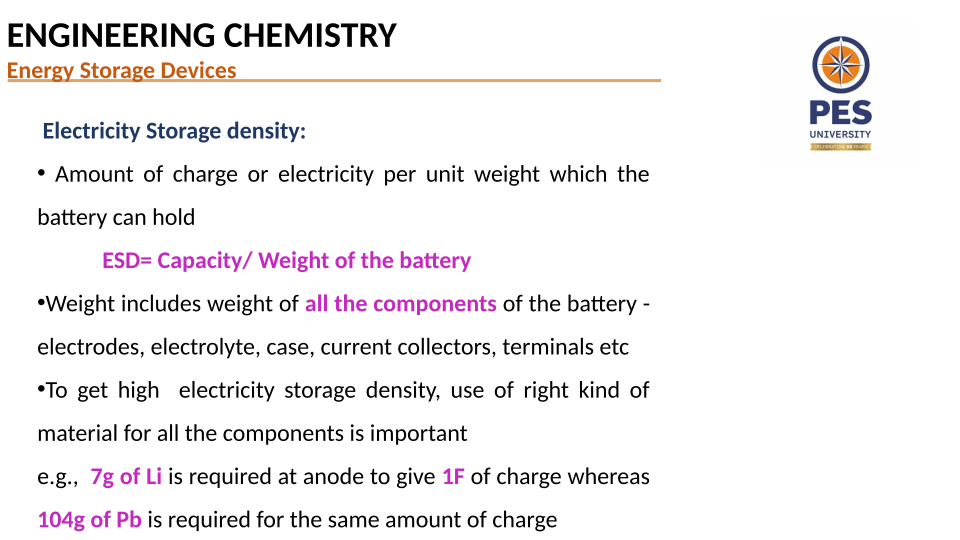
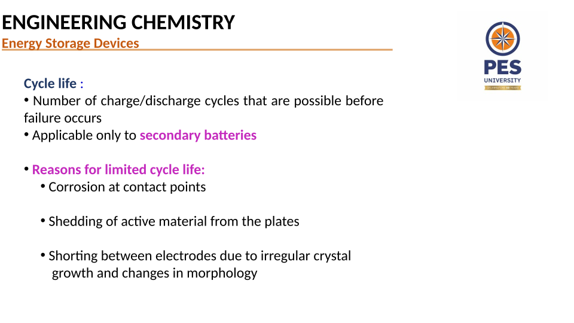
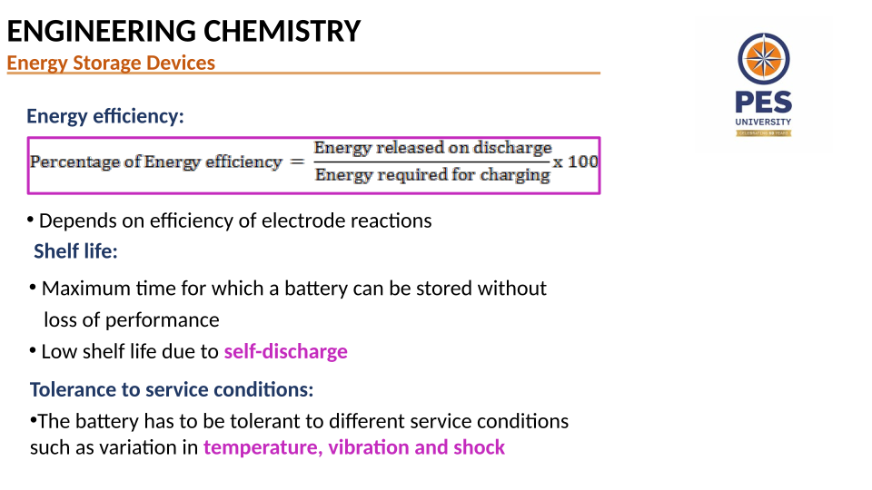
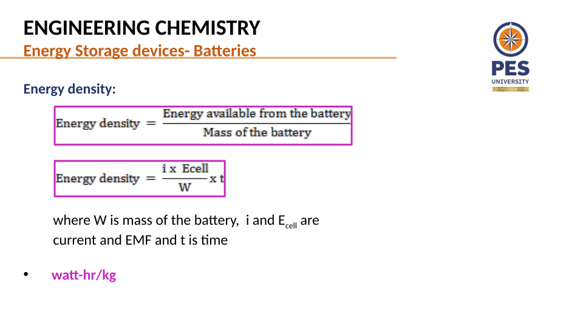
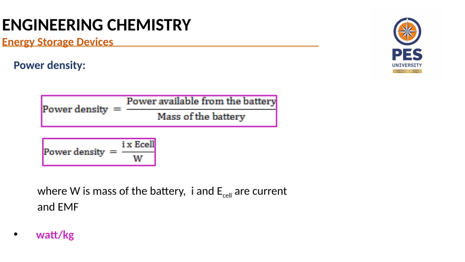
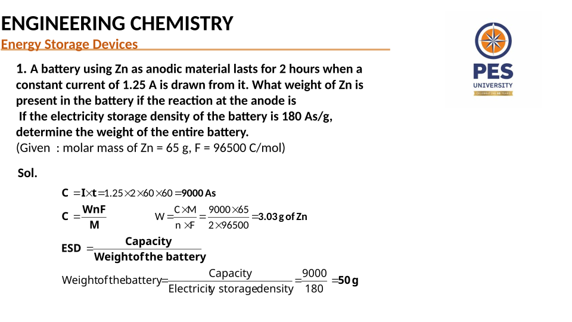
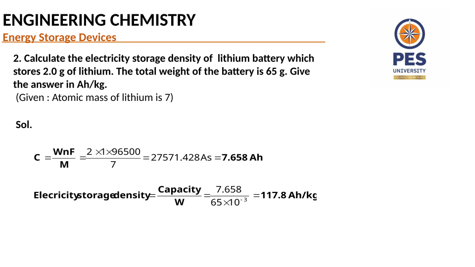
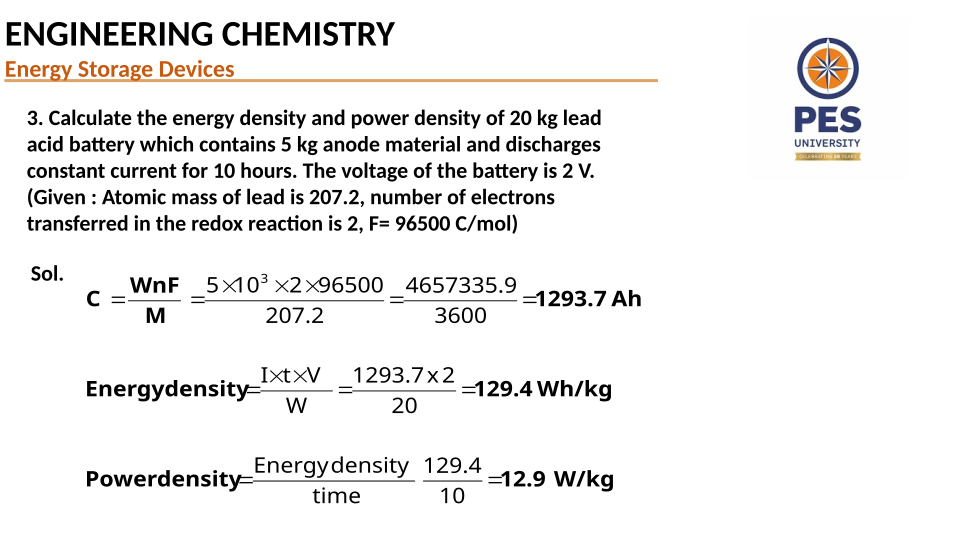
Important points and why
- Source slide page 1 (extracted text): ENGINEERING CHEMISTRY (UE26CY151 A,B) Department of Science and Humanities EV0000216 · EV0000217 · EV0000218
- Source slide page 2 (extracted text): ENGINEERING CHEMISTRY Energy Storage Devices Class 28 content: Batteries Characteristics, numerical problems EV0000219 · EV0000220 · EV0000221
- Source slide page 3 (extracted text): ENGINEERING CHEMISTRY Energy Storage Devices Battery characteristics Voltage: Emf of the cell Δ G reaction choice of electrodes Factors affecting voltage of a battery: Eocell ; higher the difference between Eocathode and Eoanode , higher is the voltage of the cell Temperature (T) ; with increase in temperature voltage of the cell decreases Reaction quotient (Q) ;as the value of Q increases, the voltage of the cell changes marginally EV0000222 · EV0000223 · EV0000224
- Source slide page 4 (extracted text): ENGINEERING CHEMISTRY Energy Storage Devices Current: Measure of the rate at which battery is discharging Amperes, milliamperes Depends on rapid electron transfer reaction Amount of electroactive species Conductivity of electrolyte Inter-electrode distance EV0000225 · EV0000226 · EV0000227
- Source slide page 5 (extracted text): ENGINEERING CHEMISTRY Energy Storage Devices Capacity: Charge or amount of electricity that may be obtained from the battery and is given in Ah C is the capacity , w is the mass and M is the molar mass of active material Faraday’s relation Capacity depends on : Size of the battery C = I t The time period, t, for which the battery will last when a constant current, I, is drawn depends on a) Discharge conditions of the battery b) Capacity of the battery Longer the flat portion of the curve better is the capacity [Image text, OCR] Figure1-DISCHARGECURVEFORONE600mAhCELL 1.40 1.35 1.30 1.25 1.20 1.15 1.10 0 25 50 75 100 125 150 175 200 Time-Minutes http://www.hangtimes.com/robert_hoff_on_esv_s.html EV0000228 · EV0000229 · EV0000230
- Source slide page 6 (extracted text): ENGINEERING CHEMISTRY Energy Storage Devices Electricity Storage density: Amount of charge or electricity per unit weight which the battery can hold ESD= Capacity/ Weight of the battery Weight includes weight of all the components of the battery - electrodes, electrolyte, case, current collectors, terminals etc To get high electricity storage density, use of right kind of material for all the components is important e.g., 7g of Li is required at anode to give 1F of charge whereas 104g of Pb is required for the same amount of charge EV0000231 · EV0000232 · EV0000233
- Source slide page 7 (extracted text): ENGINEERING CHEMISTRY Energy Storage Devices Cycle life : Number of charge/discharge cycles that are possible before failure occurs Applicable only to secondary batteries Reasons for limited cycle life: Corrosion at contact points Shedding of active material from the plates Shorting between electrodes due to irregular crystal growth and changes in morphology EV0000234 · EV0000235 · EV0000236
- Source slide page 8 (extracted text): ENGINEERING CHEMISTRY Energy Storage Devices Energy efficiency: Depends on efficiency of electrode reactions Shelf life: Maximum time for which a battery can be stored without loss of performance Low shelf life due to self-discharge Tolerance to service conditions: The battery has to be tolerant to different service conditions such as variation in temperature, vibration and shock EV0000237 · EV0000238 · EV0000239
- Source slide page 9 (extracted text): ENGINEERING CHEMISTRY Energy Storage devices- Batteries Energy density: where W is mass of the battery, i and Ecell are current and EMF and t is time watt-hr/kg EV0000240 · EV0000241 · EV0000242
- Source slide page 10 (extracted text): ENGINEERING CHEMISTRY Energy Storage Devices Power density: where W is mass of the battery, i and Ecell are current and EMF watt/kg EV0000243 · EV0000244 · EV0000245
- Source slide page 11 (extracted text): ENGINEERING CHEMISTRY Energy Storage Devices 1. A battery using Zn as anodic material lasts for 2 hours when a constant current of 1.25 A is drawn from it. What weight of Zn is present in the battery if the reaction at the anode is If the electricity storage density of the battery is 180 As/g, determine the weight of the entire battery. (Given : molar mass of Zn = 65 g, F = 96500 C/mol) Sol. EV0000246 · EV0000247 · EV0000248
- Source slide page 12 (extracted text): ENGINEERING CHEMISTRY Energy Storage Devices 2. Calculate the electricity storage density of lithium battery which stores 2.0 g of lithium. The total weight of the battery is 65 g. Give the answer in Ah/kg. (Given : Atomic mass of lithium is 7) Sol. EV0000249 · EV0000250 · EV0000251
- Source slide page 13 (extracted text): ENGINEERING CHEMISTRY Energy Storage Devices 3. Calculate the energy density and power density of 20 kg lead acid battery which contains 5 kg anode material and discharges constant current for 10 hours. The voltage of the battery is 2 V. (Given : Atomic mass of lead is 207.2, number of electrons transferred in the redox reaction is 2, F= 96500 C/mol) Sol. EV0000252 · EV0000253 · EV0000254
- Source slide page 14 (extracted text): THANK YOU Department of Science and Humanities EV0000255 · EV0000256 · EV0000257
5Zinc -air battery
This lesson is indexed from the source video titled Zinc -air battery. Its complete timestamped transcript is preserved below in segment order. The original video path and content hash are recorded in datasets/lecture-corpus.json. Transcript text is source wording; it has not been silently corrected or rewritten. A candidate slide deck is grouped here according to the current matching score; the exact path and page locators are listed in the source evidence. EV0000070 · EV0000071
Graphs and diagrams
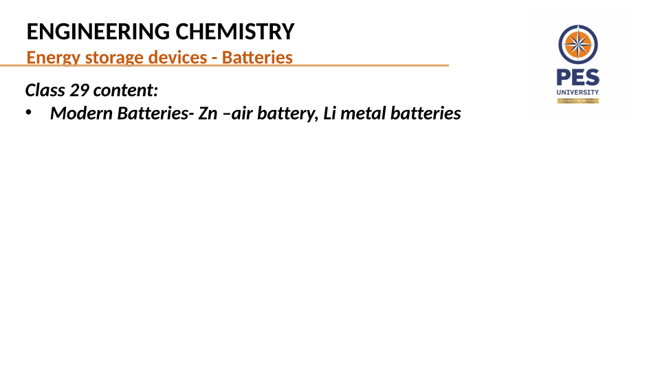
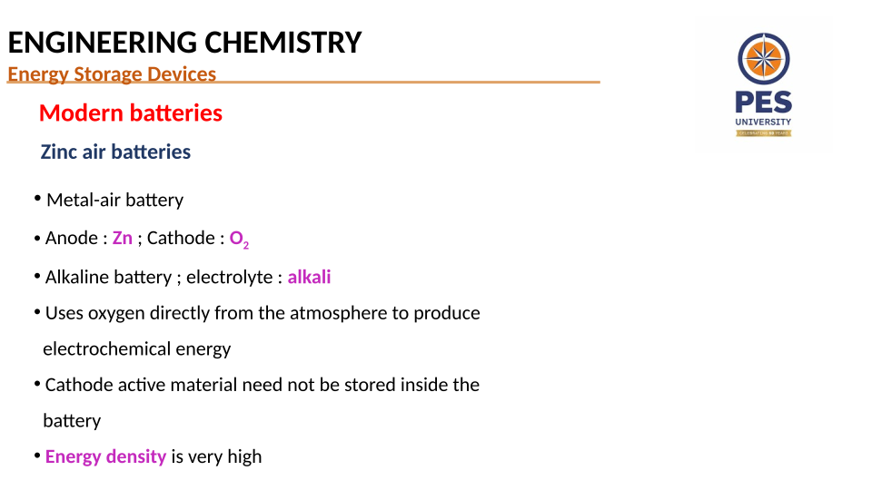
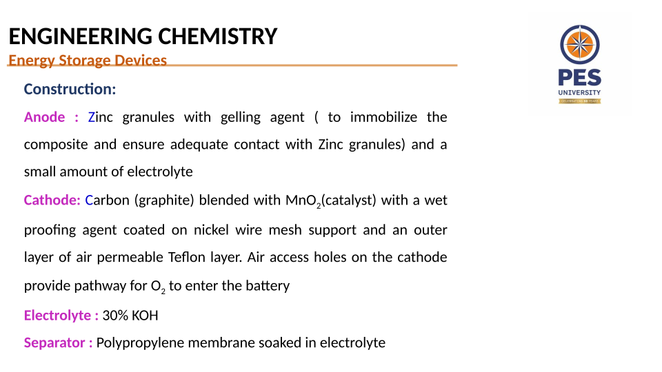
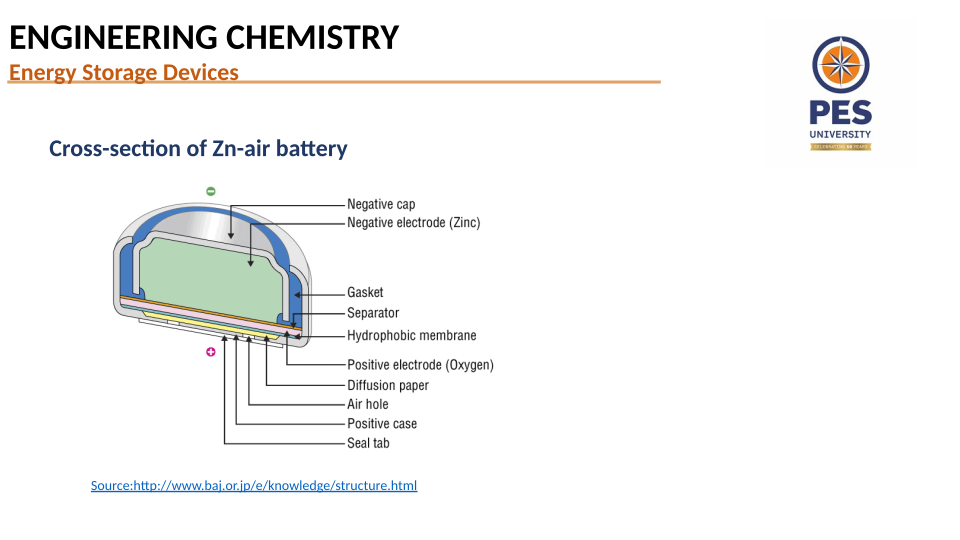
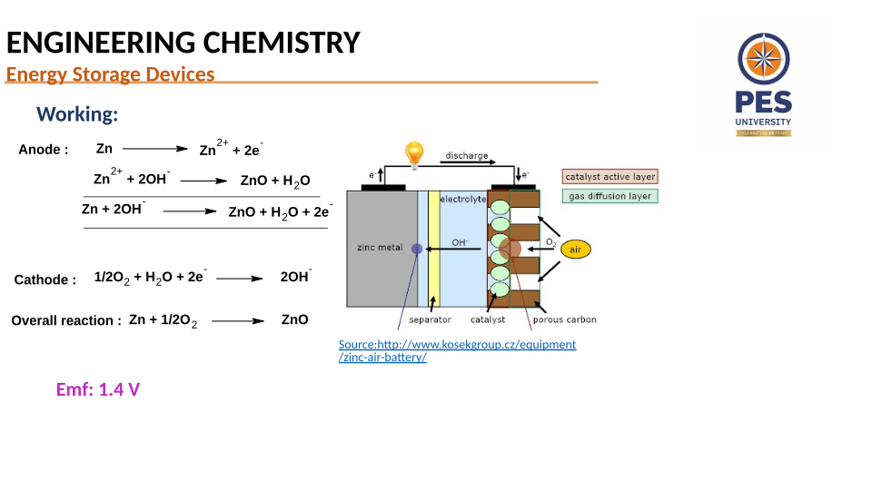
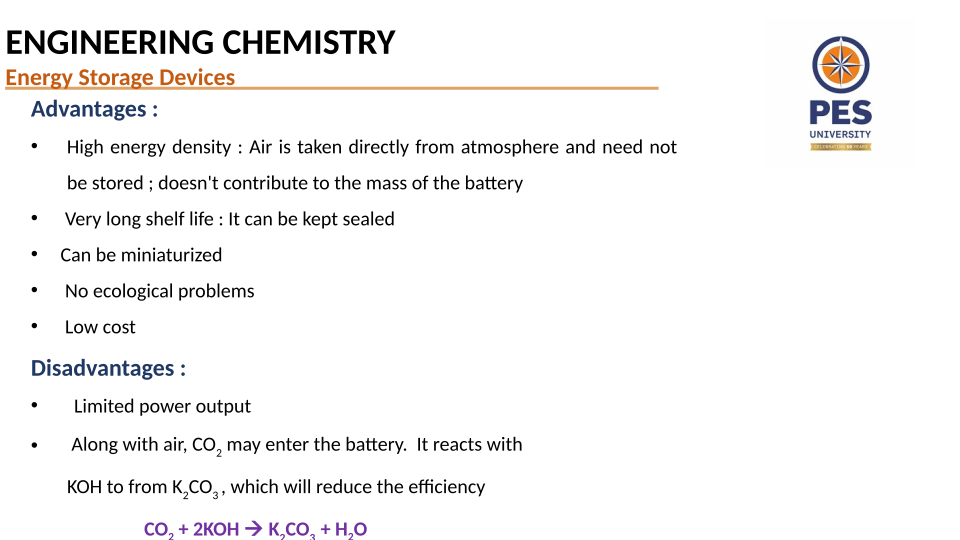
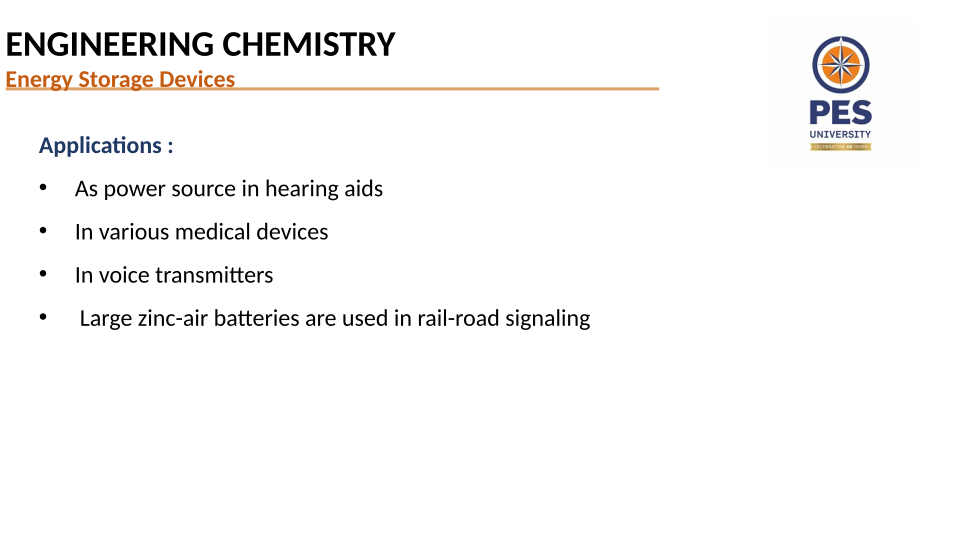
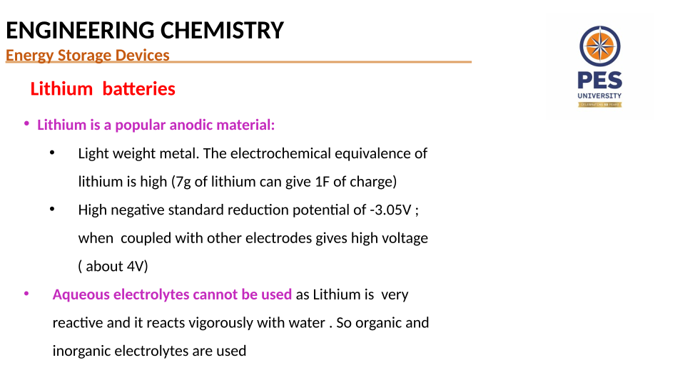
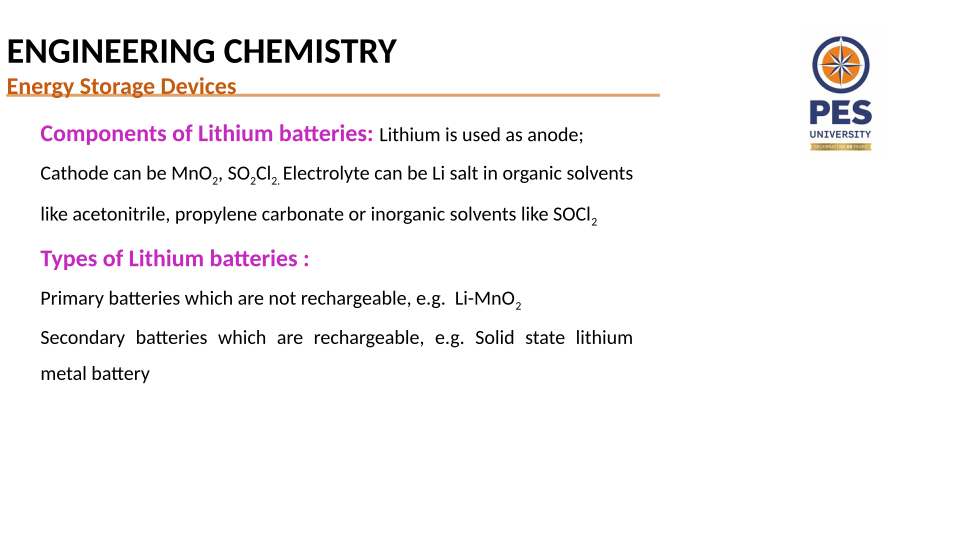
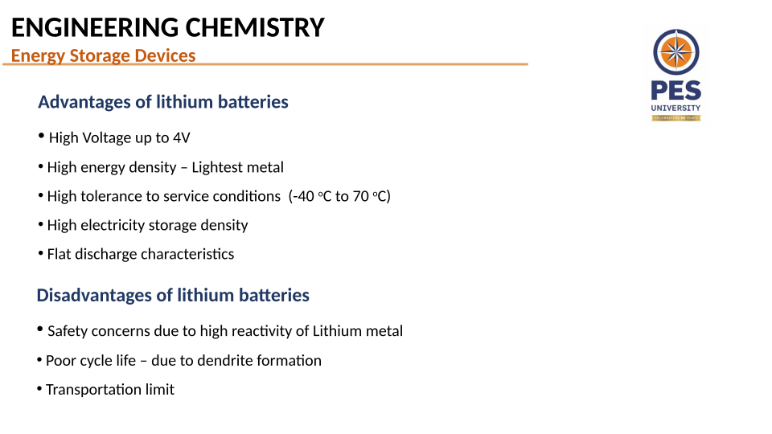
Important points and why
- Source slide page 1 (extracted text): ENGINEERING CHEMISTRY (UE26CY151 A,B) Department of Science and Humanities EV0000258 · EV0000259 · EV0000260
- Source slide page 2 (extracted text): ENGINEERING CHEMISTRY Energy storage devices - Batteries Class 29 content: Modern Batteries- Zn –air battery, Li metal batteries EV0000261 · EV0000262 · EV0000263
- Source slide page 3 (extracted text): ENGINEERING CHEMISTRY Energy Storage Devices Modern batteries Zinc air batteries Metal-air battery Anode : Zn ; Cathode : O2 Alkaline battery ; electrolyte : alkali Uses oxygen directly from the atmosphere to produce electrochemical energy Cathode active material need not be stored inside the battery Energy density is very high EV0000264 · EV0000265 · EV0000266
- Source slide page 4 (extracted text): ENGINEERING CHEMISTRY Energy Storage Devices Construction: Anode : Zinc granules with gelling agent ( to immobilize the composite and ensure adequate contact with Zinc granules) and a small amount of electrolyte Cathode: Carbon (graphite) blended with MnO2(catalyst) with a wet proofing agent coated on nickel wire mesh support and an outer layer of air permeable Teflon layer. Air access holes on the cathode provide pathway for O2 to enter the battery Electrolyte : 30% KOH Separator : Polypropylene membrane soaked in electrolyte EV0000267 · EV0000268 · EV0000269
- Source slide page 5 (extracted text): ENGINEERING CHEMISTRY Energy Storage Devices Cross-section of Zn-air battery [Image text, OCR] Negativecap Negative electrode(Zinc) Gasket Separator Hydrophobic membrane + Positiveelectrode(Oxygen) Diffusionpaper Airhole Positivecase Sealtab Source:http://www.baj.or.jp/e/knowledge/structure.html EV0000270 · EV0000271 · EV0000272
- Source slide page 6 (extracted text): ENGINEERING CHEMISTRY Energy Storage Devices Working: [Image text, OCR] discharge catalyst active layer electrolyte gas diffusion layer zinc metal OH- air separator catalyst porous carbon Zn→Zn2++2e O2+2H2O+4e-→4OH- Zn2++4OH-→[Zn（OH）4]2- or [Zn（OH）4]2-→ZnO+H2O+2OH O2+H2O+2e-→HO2-+OH Source:http://www.kosekgroup.cz/equipment/zinc-air-battery/ Emf: 1.4 V EV0000273 · EV0000274 · EV0000275
- Source slide page 7 (extracted text): ENGINEERING CHEMISTRY Energy Storage Devices Advantages : High energy density : Air is taken directly from atmosphere and need not be stored ; doesn't contribute to the mass of the battery Very long shelf life : It can be kept sealed Can be miniaturized No ecological problems Low cost Disadvantages : Limited power output Along with air, CO2 may enter the battery. It reacts with KOH to from K2CO3 , which will reduce the efficiency CO2 + 2KOH K2CO3 + H2O EV0000276 · EV0000277 · EV0000278
- Source slide page 8 (extracted text): ENGINEERING CHEMISTRY Energy Storage Devices Applications : As power source in hearing aids In various medical devices In voice transmitters Large zinc-air batteries are used in rail-road signaling EV0000279 · EV0000280 · EV0000281
- Source slide page 9 (extracted text): ENGINEERING CHEMISTRY Energy Storage Devices Lithium batteries Lithium is a popular anodic material: Light weight metal. The electrochemical equivalence of lithium is high (7g of lithium can give 1F of charge) High negative standard reduction potential of -3.05V ; when coupled with other electrodes gives high voltage ( about 4V) Aqueous electrolytes cannot be used as Lithium is very reactive and it reacts vigorously with water . So organic and inorganic electrolytes are used EV0000282 · EV0000283 · EV0000284
- Source slide page 10 (extracted text): ENGINEERING CHEMISTRY Energy Storage Devices Components of Lithium batteries: Lithium is used as anode; Cathode can be MnO2, SO2Cl2. Electrolyte can be Li salt in organic solvents like acetonitrile, propylene carbonate or inorganic solvents like SOCl2 Types of Lithium batteries : Primary batteries which are not rechargeable, e.g. Li-MnO2 Secondary batteries which are rechargeable, e.g. Solid state lithium metal battery EV0000285 · EV0000286 · EV0000287
- Source slide page 11 (extracted text): ENGINEERING CHEMISTRY Energy Storage Devices Advantages of lithium batteries High Voltage up to 4V High energy density – Lightest metal High tolerance to service conditions (-40 oC to 70 oC) High electricity storage density Flat discharge characteristics Disadvantages of lithium batteries Safety concerns due to high reactivity of Lithium metal Poor cycle life – due to dendrite formation Transportation limit EV0000288 · EV0000289 · EV0000290
- Source slide page 12 (extracted text): THANK YOU Department of Science and Humanities EV0000291 · EV0000292 · EV0000293
6Fuel cells: Principle and working, H2-O2 alkaline fuel cell (Part 1)
This lesson is indexed from the source video titled Fuel cells: Principle and working, H2-O2 alkaline fuel cell (Part 1). Its complete timestamped transcript is preserved below in segment order. The original video path and content hash are recorded in datasets/lecture-corpus.json. Transcript text is source wording; it has not been silently corrected or rewritten. A candidate slide deck is grouped here according to the current matching score; the exact path and page locators are listed in the source evidence. EV0000086 · EV0000087
Graphs and diagrams
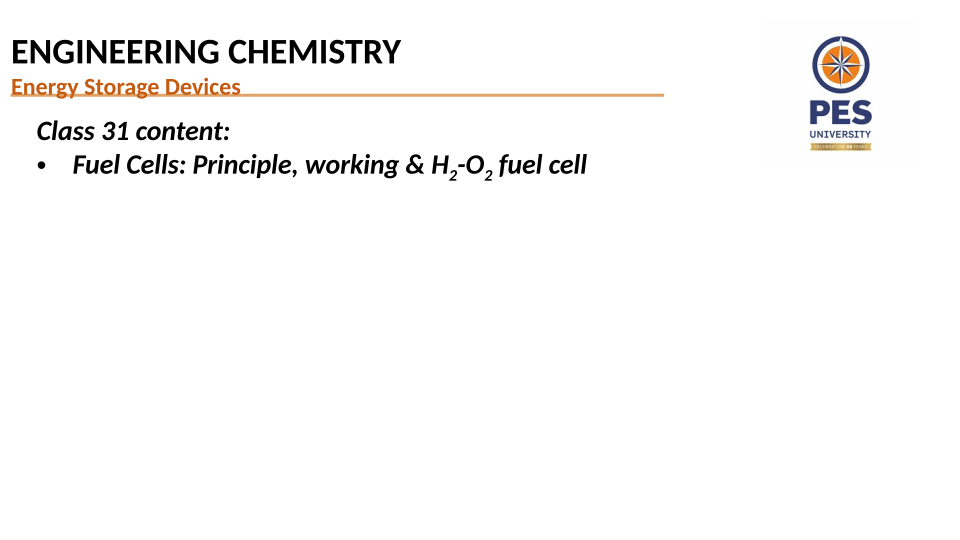
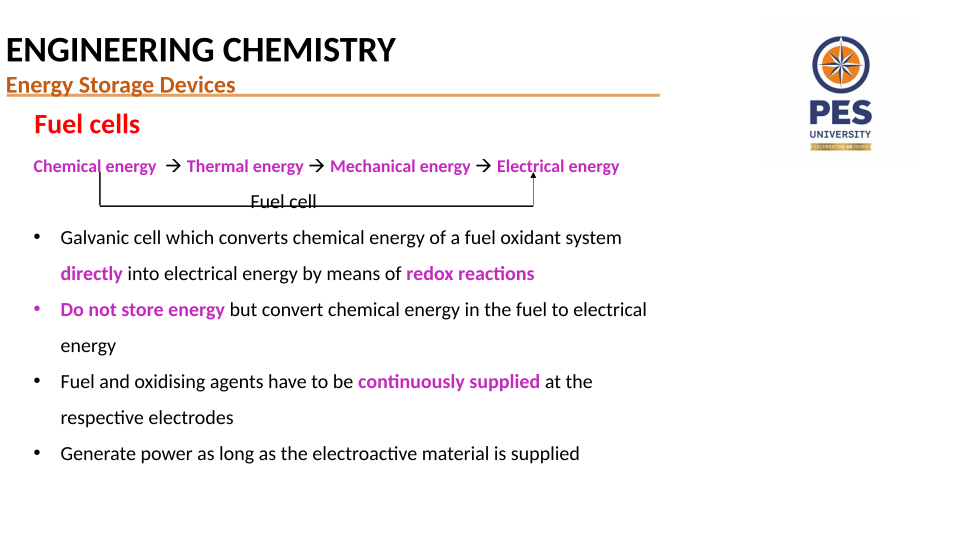
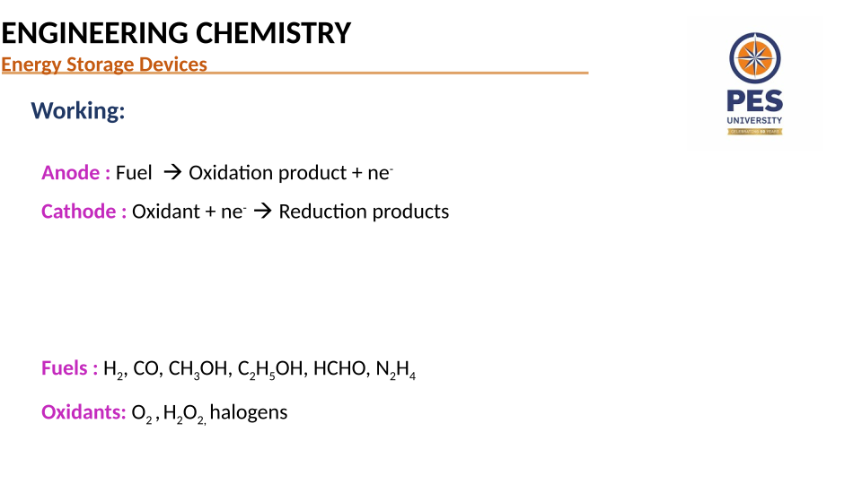
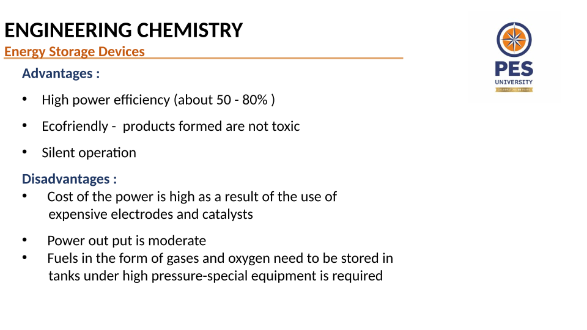
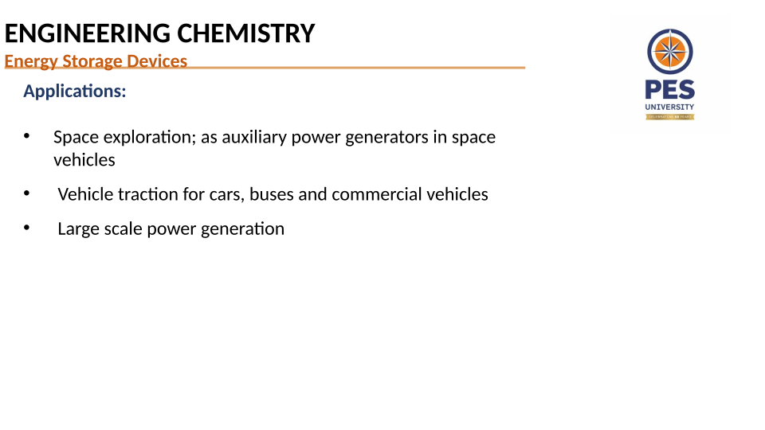
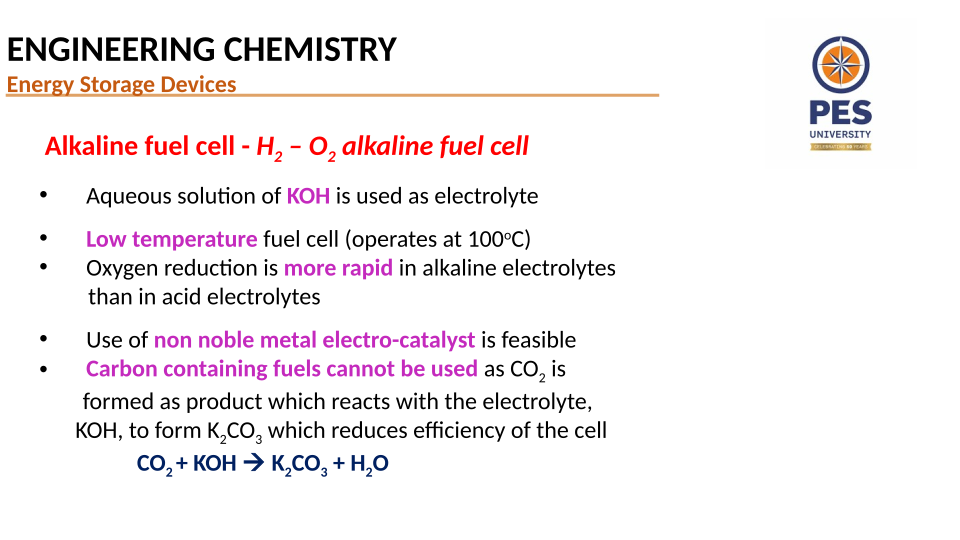
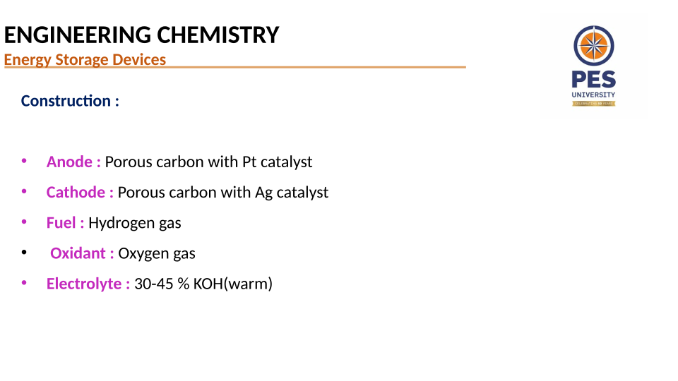
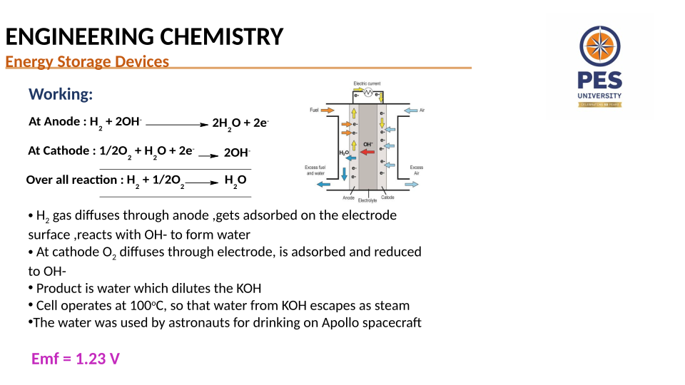
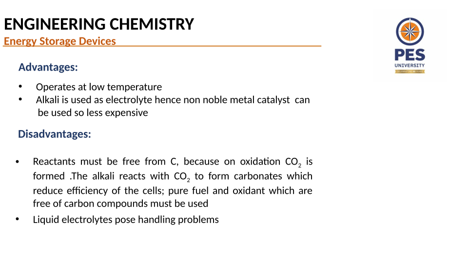
Important points and why
- Source slide page 1 (extracted text): ENGINEERING CHEMISTRY (UE26CY151 A,B) Department of Science and Humanities EV0000324 · EV0000325 · EV0000326
- Source slide page 2 (extracted text): ENGINEERING CHEMISTRY Energy Storage Devices Class 31 content: Fuel Cells: Principle, working & H2-O2 fuel cell EV0000327 · EV0000328 · EV0000329
- Source slide page 3 (extracted text): ENGINEERING CHEMISTRY Energy Storage Devices Fuel cells Chemical energy Thermal energy Mechanical energy Electrical energy Fuel cell Galvanic cell which converts chemical energy of a fuel oxidant system directly into electrical energy by means of redox reactions Do not store energy but convert chemical energy in the fuel to electrical energy Fuel and oxidising agents have to be continuously supplied at the respective electrodes Generate power as long as the electroactive material is supplied EV0000330 · EV0000331 · EV0000332
- Source slide page 4 (extracted text): ENGINEERING CHEMISTRY Energy Storage Devices Working: Anode : Fuel Oxidation product + ne- Cathode : Oxidant + ne- Reduction products Fuels : H2, CO, CH3OH, C2H5OH, HCHO, N2H4 Oxidants: O2 , H2O2, halogens EV0000333 · EV0000334 · EV0000335
- Source slide page 5 (extracted text): ENGINEERING CHEMISTRY Energy Storage Devices Advantages : High power efficiency (about 50 - 80% ) Ecofriendly - products formed are not toxic Silent operation Disadvantages : Cost of the power is high as a result of the use of expensive electrodes and catalysts Power out put is moderate Fuels in the form of gases and oxygen need to be stored in tanks under high pressure-special equipment is required EV0000336 · EV0000337 · EV0000338
- Source slide page 6 (extracted text): ENGINEERING CHEMISTRY Energy Storage Devices Applications: Space exploration; as auxiliary power generators in space vehicles Vehicle traction for cars, buses and commercial vehicles Large scale power generation EV0000339 · EV0000340 · EV0000341
- Source slide page 7 (extracted text): ENGINEERING CHEMISTRY Energy Storage Devices Alkaline fuel cell - H2 – O2 alkaline fuel cell Aqueous solution of KOH is used as electrolyte Low temperature fuel cell (operates at 100oC) Oxygen reduction is more rapid in alkaline electrolytes than in acid electrolytes Use of non noble metal electro-catalyst is feasible Carbon containing fuels cannot be used as CO2 is formed as product which reacts with the electrolyte, KOH, to form K2CO3 which reduces efficiency of the cell CO2 + KOH K2CO3 + H2O EV0000342 · EV0000343 · EV0000344
- Source slide page 8 (extracted text): ENGINEERING CHEMISTRY Energy Storage Devices Construction : Anode : Porous carbon with Pt catalyst Cathode : Porous carbon with Ag catalyst Fuel : Hydrogen gas Oxidant : Oxygen gas Electrolyte : 30-45 % KOH(warm) EV0000345 · EV0000346 · EV0000347
- Source slide page 9 (extracted text): ENGINEERING CHEMISTRY Energy Storage Devices Cell representation: H2 Pt KOH Ag O2 [Image text, OCR] Electriccurrent e Fuel Air e e- OH- H20 e- Excessfuel e Excess andwater Air Anode Electrolyte Catode Source:https://www.intechopen.com/books/new-trends-in-ion-exchange-studies/hydroxide-transport-in-anion-exchange-membranes-for-alkaline-fuel-cells EV0000348 · EV0000349 · EV0000350
- Source slide page 10 (extracted text): ENGINEERING CHEMISTRY Energy Storage Devices Working: H2 gas diffuses through anode ,gets adsorbed on the electrode surface ,reacts with OH- to form water At cathode O2 diffuses through electrode, is adsorbed and reduced to OH- Product is water which dilutes the KOH Cell operates at 100oC, so that water from KOH escapes as steam The water was used by astronauts for drinking on Apollo spacecraft Emf = 1.23 V EV0000351 · EV0000352 · EV0000353
- Source slide page 11 (extracted text): ENGINEERING CHEMISTRY Energy Storage Devices Advantages: Operates at low temperature Alkali is used as electrolyte hence non noble metal catalyst can be used so less expensive Disadvantages: Reactants must be free from C, because on oxidation CO2 is formed .The alkali reacts with CO2 to form carbonates which reduce efficiency of the cells; pure fuel and oxidant which are free of carbon compounds must be used Liquid electrolytes pose handling problems EV0000354 · EV0000355 · EV0000356
- Source slide page 12 (extracted text): THANK YOU Department of Science and Humanities EV0000357 · EV0000358 · EV0000359
7Fuel cells: Principle and working, H2-O2 alkaline fuel cell (Part 2)
This lesson is indexed from the source video titled Fuel cells: Principle and working, H2-O2 alkaline fuel cell (Part 2). Its complete timestamped transcript is preserved below in segment order. The original video path and content hash are recorded in datasets/lecture-corpus.json. Transcript text is source wording; it has not been silently corrected or rewritten. A candidate slide deck is grouped here according to the current matching score; the exact path and page locators are listed in the source evidence. EV0000102 · EV0000103
8CH3OH-O2 polymer electrolyte fuel cell, efficiency of fuel cells, numerical problems based on efficiency of fuel cells
This lesson is indexed from the source video titled CH3OH-O2 polymer electrolyte fuel cell, efficiency of fuel cells, numerical problems based on efficiency of fuel cells. Its complete timestamped transcript is preserved below in segment order. The original video path and content hash are recorded in datasets/lecture-corpus.json. Transcript text is source wording; it has not been silently corrected or rewritten. A candidate slide deck is grouped here according to the current matching score; the exact path and page locators are listed in the source evidence. EV0000118 · EV0000119
Graphs and diagrams
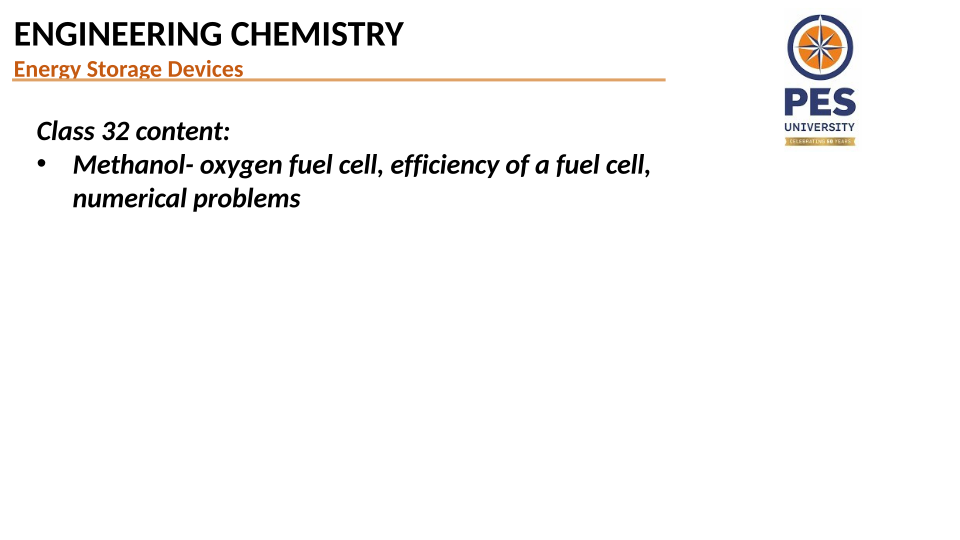
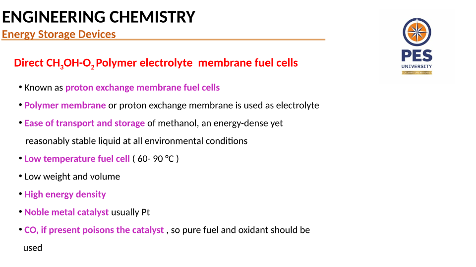
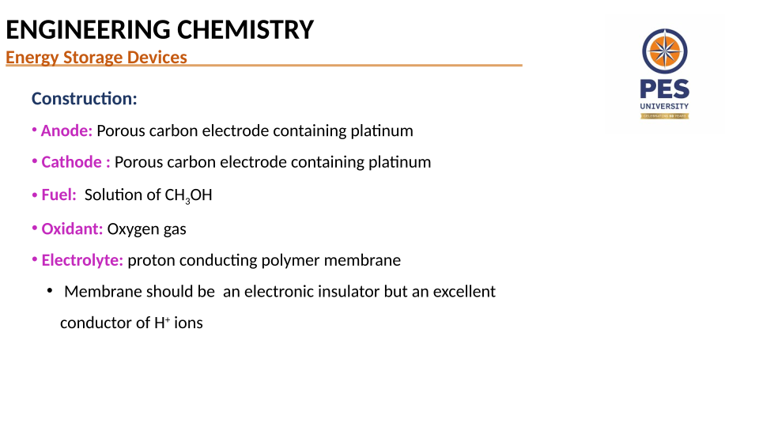
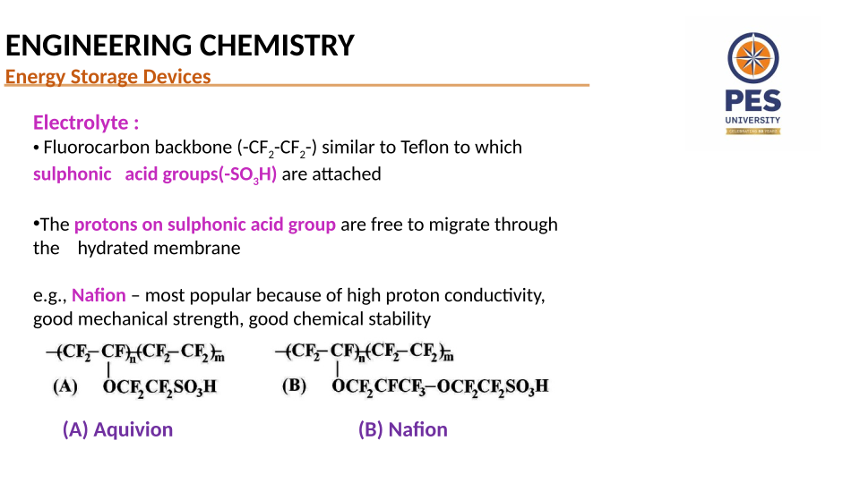
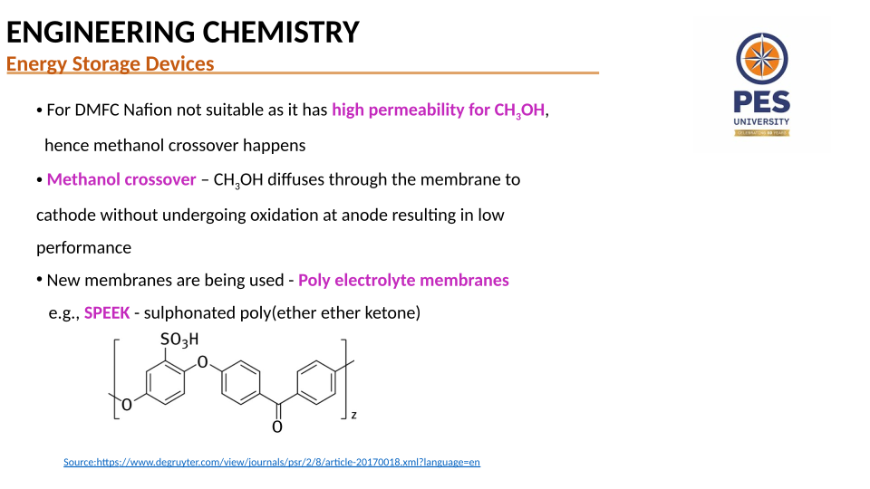
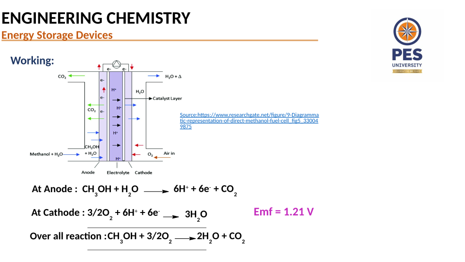
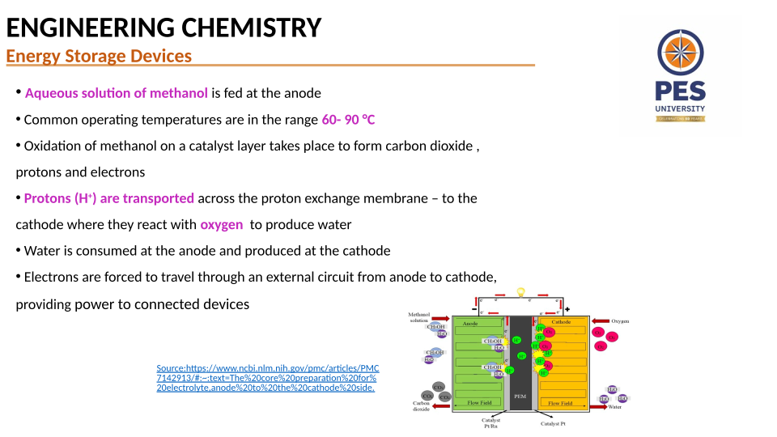
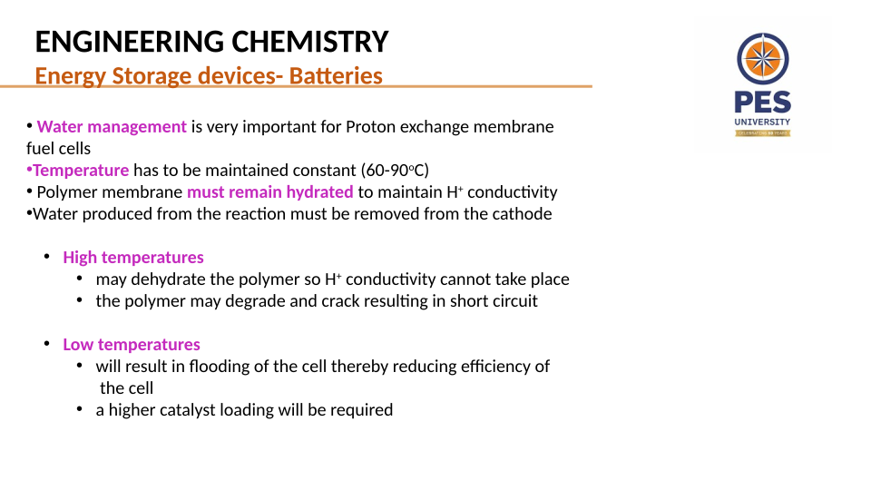
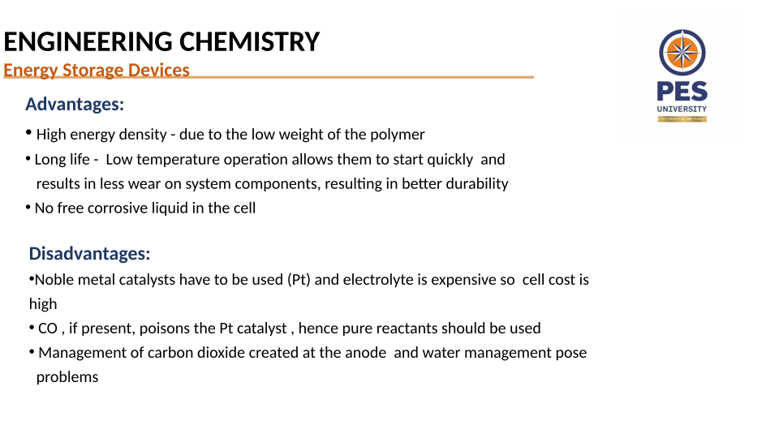
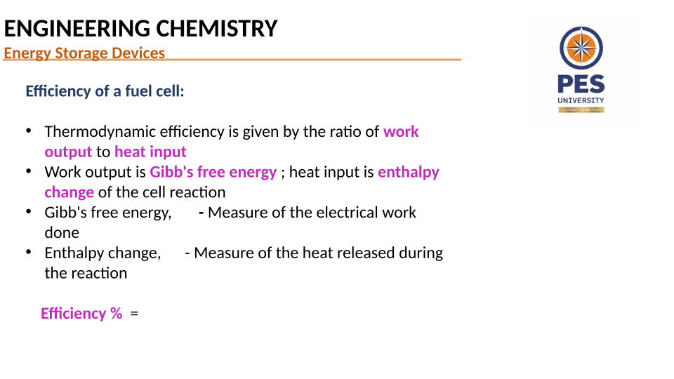
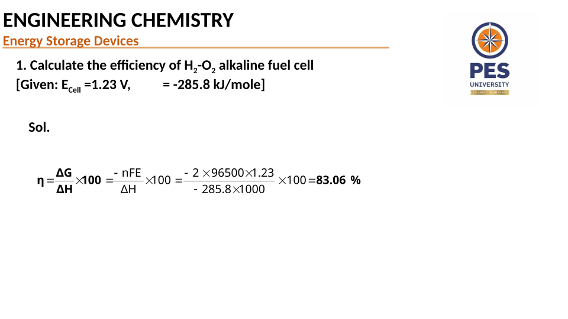
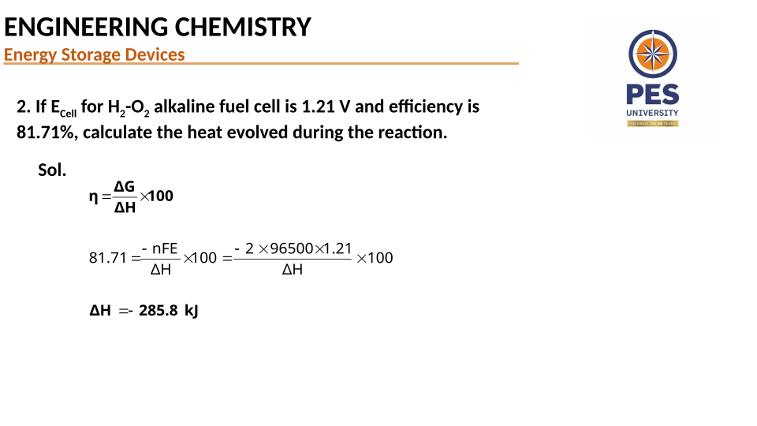
Important points and why
- Source slide page 1 (extracted text): ENGINEERING CHEMISTRY (UE26CY151 A,B) Department of Science and Humanities EV0000360 · EV0000361 · EV0000362
- Source slide page 2 (extracted text): ENGINEERING CHEMISTRY Energy Storage Devices Class 32 content: Methanol- oxygen fuel cell, efficiency of a fuel cell, numerical problems EV0000363 · EV0000364 · EV0000365
- Source slide page 3 (extracted text): ENGINEERING CHEMISTRY Energy Storage Devices Direct CH3OH-O2 Polymer electrolyte membrane fuel cells Known as proton exchange membrane fuel cells Polymer membrane or proton exchange membrane is used as electrolyte Ease of transport and storage of methanol, an energy-dense yet reasonably stable liquid at all environmental conditions Low temperature fuel cell ( 60- 90 °C ) Low weight and volume High energy density Noble metal catalyst usually Pt CO, if present poisons the catalyst , so pure fuel and oxidant should be used EV0000366 · EV0000367 · EV0000368
- Source slide page 4 (extracted text): ENGINEERING CHEMISTRY Energy Storage Devices Construction: Anode: Porous carbon electrode containing platinum Cathode : Porous carbon electrode containing platinum Fuel: Solution of CH3OH Oxidant: Oxygen gas Electrolyte: proton conducting polymer membrane Membrane should be an electronic insulator but an excellent conductor of H+ ions EV0000369 · EV0000370 · EV0000371
- Source slide page 5 (extracted text): ENGINEERING CHEMISTRY Energy Storage Devices Electrolyte : Fluorocarbon backbone (-CF2-CF2-) similar to Teflon to which sulphonic acid groups(-SO3H) are attached The protons on sulphonic acid group are free to migrate through the hydrated membrane e.g., Nafion – most popular because of high proton conductivity, good mechanical strength, good chemical stability (A) Aquivion (B) Nafion [Image text, OCR] -(CF-CF)(CF-CF (CF-CF)(CF-CF (A) OCF,CF,SO,H (B) OCF, CFCF,-OCE,CF,SO,H EV0000372 · EV0000373 · EV0000374
- Source slide page 6 (extracted text): ENGINEERING CHEMISTRY Energy Storage Devices For DMFC Nafion not suitable as it has high permeability for CH3OH, hence methanol crossover happens Methanol crossover – CH3OH diffuses through the membrane to cathode without undergoing oxidation at anode resulting in low performance New membranes are being used - Poly electrolyte membranes e.g., SPEEK - sulphonated poly(ether ether ketone) Source:https://www.degruyter.com/view/journals/psr/2/8/article-20170018.xml?language=en EV0000375 · EV0000376 · EV0000377
- Source slide page 7 (extracted text): ENGINEERING CHEMISTRY Energy Storage Devices Working: [Image text, OCR] e CO2 HO +△ H+ H2O Catalyst Layer CO2 H+ H+ JCH;OH Methanol + H2O +H2O Air in H Anode Electrolyte Cathode Source:https://www.researchgate.net/figure/9-Diagrammatic-representation-of-direct-methanol-fuel-cell_fig5_330049875 Emf = 1.21 V EV0000378 · EV0000379 · EV0000380
- Source slide page 8 (extracted text): ENGINEERING CHEMISTRY Energy Storage Devices Aqueous solution of methanol is fed at the anode Common operating temperatures are in the range 60- 90 °C Oxidation of methanol on a catalyst layer takes place to form carbon dioxide , protons and electrons Protons (H+) are transported across the proton exchange membrane – to the cathode where they react with oxygen to produce water Water is consumed at the anode and produced at the cathode Electrons are forced to travel through an external circuit from anode to cathode, providing power to connected devices [Image text, OCR] Methanol solution Anode Cathode Oxygen CH3OH H H2O O2 H+ CH3OH H+ H2O H+ O2 CH3OH H+ H+ H2O H+ CH3OH H+ H2O H+ CO2 2C CO2 CO2 PEM H2O H2C Carbon FlowField FlowField dioxide Water Catalyst Pt/Ru CatalystPt Source:https://www.ncbi.nlm.nih.gov/pmc/articles/PMC7142913/#:~:text=The%20core%20preparation%20for%20electrolyte,anode%20to%20the%20cathode%20side. EV0000381 · EV0000382 · EV0000383
- Source slide page 9 (extracted text): ENGINEERING CHEMISTRY Energy Storage devices- Batteries Water management is very important for Proton exchange membrane fuel cells Temperature has to be maintained constant (60-90oC) Polymer membrane must remain hydrated to maintain H+ conductivity Water produced from the reaction must be removed from the cathode High temperatures may dehydrate the polymer so H+ conductivity cannot take place the polymer may degrade and crack resulting in short circuit Low temperatures will result in flooding of the cell thereby reducing efficiency of the cell a higher catalyst loading will be required EV0000384 · EV0000385 · EV0000386
- Source slide page 10 (extracted text): ENGINEERING CHEMISTRY Energy Storage Devices Advantages: High energy density - due to the low weight of the polymer Long life - Low temperature operation allows them to start quickly and results in less wear on system components, resulting in better durability No free corrosive liquid in the cell Disadvantages: Noble metal catalysts have to be used (Pt) and electrolyte is expensive so cell cost is high CO , if present, poisons the Pt catalyst , hence pure reactants should be used Management of carbon dioxide created at the anode and water management pose problems EV0000387 · EV0000388 · EV0000389
- Source slide page 11 (extracted text): ENGINEERING CHEMISTRY Energy Storage Devices Efficiency of a fuel cell: Thermodynamic efficiency is given by the ratio of work output to heat input Work output is Gibb's free energy ; heat input is enthalpy change of the cell reaction Gibb's free energy, - Measure of the electrical work done Enthalpy change, - Measure of the heat released during the reaction Efficiency % = EV0000390 · EV0000391 · EV0000392
- Source slide page 12 (extracted text): ENGINEERING CHEMISTRY Energy Storage Devices 1. Calculate the efficiency of H2-O2 alkaline fuel cell [Given: ECell =1.23 V, = -285.8 kJ/mole] Sol. EV0000393 · EV0000394 · EV0000395
- Source slide page 13 (extracted text): ENGINEERING CHEMISTRY Energy Storage Devices 2. If ECell for H2-O2 alkaline fuel cell is 1.21 V and efficiency is 81.71%, calculate the heat evolved during the reaction. Sol. EV0000396 · EV0000397 · EV0000398
- Source slide page 14 (extracted text): THANK YOU Department of Science and Humanities EV0000399 · EV0000400 · EV0000401
9Supercapacitors , Ragone plot
This lesson is indexed from the source video titled Supercapacitors , Ragone plot. Its complete timestamped transcript is preserved below in segment order. The original video path and content hash are recorded in datasets/lecture-corpus.json. Transcript text is source wording; it has not been silently corrected or rewritten. A candidate slide deck is grouped here according to the current matching score; the exact path and page locators are listed in the source evidence. EV0000134 · EV0000135
Graphs and diagrams

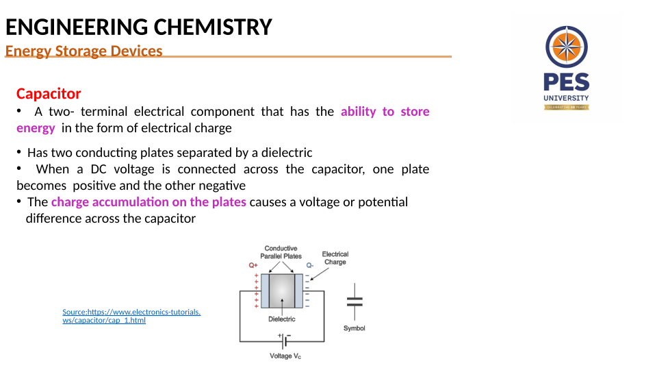
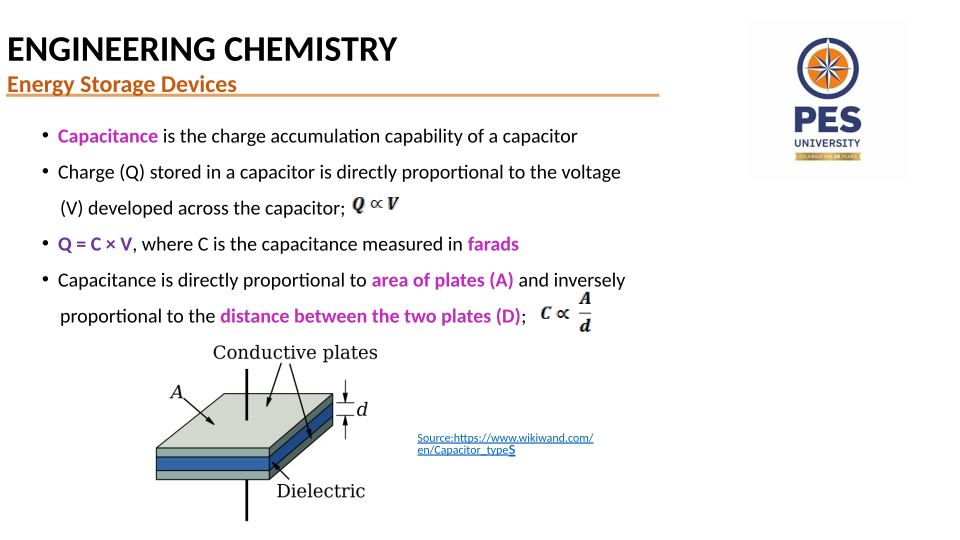

Important points and why
- Source slide page 1 (extracted text): ENGINEERING CHEMISTRY (UE26CY151 A,B) Department of Science and Humanities EV0000402 · EV0000403 · EV0000404
- Source slide page 2 (extracted text): ENGINEERING CHEMISTRY Energy Storage Devices Class 33 content: Supercapacitors: construction & working, Ragone plot EV0000405 · EV0000406 · EV0000407
- Source slide page 3 (extracted text): ENGINEERING CHEMISTRY Energy Storage Devices Capacitor A two- terminal electrical component that has the ability to store energy in the form of electrical charge Has two conducting plates separated by a dielectric When a DC voltage is connected across the capacitor, one plate becomes positive and the other negative The charge accumulation on the plates causes a voltage or potential difference across the capacitor Source:https://www.electronics-tutorials.ws/capacitor/cap_1.html EV0000408 · EV0000409 · EV0000410
- Source slide page 4 (extracted text): ENGINEERING CHEMISTRY Energy Storage Devices Capacitance is the charge accumulation capability of a capacitor Charge (Q) stored in a capacitor is directly proportional to the voltage (V) developed across the capacitor; Q = C × V, where C is the capacitance measured in farads Capacitance is directly proportional to area of plates (A) and inversely proportional to the distance between the two plates (D); Source:https://www.wikiwand.com/en/Capacitor_types EV0000411 · EV0000412 · EV0000413
- Source slide page 5 (extracted text): ENGINEERING CHEMISTRY Energy Storage Devices Supercapacitors Also known as ultra capacitors or electrochemical double-layer capacitors(EDLC) Are energy storage devices that have high capacitance and are used to store large amounts of electrical charge Charge and discharge very quickly Capacitance is several thousand times that of a Capacitor Capacitor ----- µF Supercapacitor ----- thousands of Farads EV0000414 · EV0000415 · EV0000416
- Source slide page 6 (extracted text): ENGINEERING CHEMISTRY Energy Storage Devices Construction: Electrodes: made of high surface area materials such as porous carbon, graphene, carbon nanotubes and certain conducting polymers or carbon aerogel Electrolyte: KOH, H2SO4, Na2SO4 Separator: an ion permeable separator is placed between the electrodes in order prevent electrical contact, but still allows ions from electrolyte to pass through e.g., porous polypropylene EV0000417 · EV0000418 · EV0000419
- Source slide page 7 (extracted text): ENGINEERING CHEMISTRY Energy Storage Devices Separator is sandwiched between the electrodes which are soaked with electrolyte and sealed inside a case. The electrodes are flanked with current collectors Source:https://www.azonano.com/article.aspx?ArticleID=3044 EV0000420 · EV0000421 · EV0000422
- Source slide page 8 (extracted text): ENGINEERING CHEMISTRY Energy Storage Devices Working: When a potential is applied, the positive electrode attracts negative ions in the electrolyte, while negative electrode attracts the positive ions Formation of electrical double layer at entire electrode /electrolyte interface with a charge separation in nanometer scale [Image text, OCR] (a) EDLC Pseudocapacitor Hybrid (b) 00000000 + 00000000 ++++++++ +++++? 000000 000 hyte Elec Electrolyte Eleetrleal double layers Puedecapacssce Redox EDLC Redox Pseudocapacltauce Charging Charging complete Discharging (c) Electrolyte +++++++ 00000000 ++++++++ 9 Electrical double layers len lou absorption desorption Source:https://pubs.rsc.org/en/content/articlelanding/2019/na/c9na00374f#!divAbstract EV0000423 · EV0000424 · EV0000425
- Source slide page 9 (extracted text): ENGINEERING CHEMISTRY Energy Storage Devices Only absorption and desorption of ions takes place at the electrode during charging and discharging and there are no redox reactions Distance between the charged layers in nanorange, d is very small and use of porous electrodes gives very high surface area , A is large ; Capacitance is very high Formation of the electrical double-layer at each electrode/electrolyte interface, overall capacitance (CT) is expressed as: where C+ is the capacitance of cathode/electrolyte interface and C− is the capacitance of anode/electrolyte interface EV0000426 · EV0000427 · EV0000428
- Source slide page 10 (extracted text): ENGINEERING CHEMISTRY Energy Storage Devices Advantages: Rapid charging; charge in a few seconds High power density as they discharge very fast High cycle life, can be cycled millions of time Safe as extremely low internal resistance and extremely low heating rates EV0000429 · EV0000430 · EV0000431
- Source slide page 11 (extracted text): ENGINEERING CHEMISTRY Energy Storage Devices Disadvantages: Low energy density High self discharge Linear discharge voltage High cost Power available for a short duration Source:https://store.chipkin.com/articles/beyond-the-lithium-ion-battery-a-look-at-supercapacitors-and-other-batteries EV0000432 · EV0000433 · EV0000434
- Source slide page 12 (extracted text): ENGINEERING CHEMISTRY Energy Storage Devices Applications: Memory back-up Hybrid cars for start-stop application Flash photography devices in digital cameras, flash lights, portable media players As an intermediate energy storage for FM radios, cell phones, and emergency kits EV0000435 · EV0000436 · EV0000437
- Source slide page 13 (extracted text): ENGINEERING CHEMISTRY Energy Storage Devices Ragone Plot Energy density (Wh/kg) is plotted against Power density (W/kg) To compare performance of various energy storage devices Since it uses a double-logarithmic chart, storage technologies with very different storage properties can be compared in one plot EV0000438 · EV0000439 · EV0000440
- Source slide page 14 (extracted text): ENGINEERING CHEMISTRY Energy Storage Devices [Image text, OCR] 103 10hr 0.1hr Combustion Fuel Cells Engine, Gas Turbine 102 Li-ion Ni-Cd 36sec Batteries [ a Batteries Lead Acid Flywheels Batteries 101 3.6sec Ultra- 100 Capacitors 360.ms 10-1 36m Capacitors 10-2 101 102 103 104 SpecificPower[w/kg] Source:https://www.semanticscholar.org/paper/Education-on-vehicle-electrification%3A-Battery-Fuel-Moura-Siegel/7e83f03396b55f2a894461480dda7e9c154f5721/figure/0 EV0000441 · EV0000442 · EV0000443
- Source slide page 15 (extracted text): ENGINEERING CHEMISTRY Energy Storage Devices Fuel cells have high energy density as the electroactive species can be continuously supplied but the power density is low due to slow kinetics of redox reactions at electrodes Battery systems offer moderate energy density and power density. Ultracapacitors (supercapacitors) can deliver very high power density as they can discharge a large amount of charge quickly (because no redox reaction is involved) but energy density is very limited because the charge cannot be stored for a long time EV0000444 · EV0000445 · EV0000446
- Source slide page 16 (extracted text): THANK YOU Department of Science and Humanities EV0000447 · EV0000448 · EV0000449
10Types of electrochemical sensors, pH sensor – ion-selective electrode - glass electrode (Part 2))
This lesson is indexed from the source video titled Types of electrochemical sensors, pH sensor – ion-selective electrode - glass electrode (Part 2)). Its complete timestamped transcript is preserved below in segment order. The original video path and content hash are recorded in datasets/lecture-corpus.json. Transcript text is source wording; it has not been silently corrected or rewritten. A candidate slide deck is grouped here according to the current matching score; the exact path and page locators are listed in the source evidence. EV0000150 · EV0000151
Graphs and diagrams


Important points and why
- Source slide page 1 (extracted text): ENGINEERING CHEMISTRY (UE26CY151 A,B) Department of Science and Humanities EV0000526 · EV0000527 · EV0000528
- Source slide page 2 (extracted text): ENGINEERING CHEMISTRY Sensors Class 36 content: Sensors: Types of Electrochemical sensors, pH sensor (Glass electrode) EV0000529 · EV0000530 · EV0000531
- Source slide page 3 (extracted text): ENGINEERING CHEMISTRY Sensors SENSORS: A sensor is a device that detects and responds to some type of input from the physical environment. The specific input could be light, heat, motion, moisture, pressure, or can be any molecule or substance such as analytes. [Image text, OCR] G 口 Chemical Sensors (17).pdf - Foxit PDF Reader ? 口 File Home Comment View Form Protect Share Help Tell me. · QFind h T 国 自 T T B Hand Select 9 SnapShot Cipboard Zoom Page Fit Reflow Rotate Typewriter Highlight Link Bookmark Fle Image Audio Fil & Option· View* Attachment Annotation & Video Sign Start UE22CY151.pdf ELECTRO CHEM SENS... Chemical Sensors (17).pdf Merge and split PDFs 口 D Information Brain Computer processing ? Amplification; Sensorynerve Analogue circuit preprocessing Signal Transducer Sensory conversion receptor Sensing element (receptor) Environment 《 9/273 >》 目厚目盟 + 178.00% K 7 8 Type here to search ENG 14:40 28°C 17-08-2022 Signal processing in living organisms and in intelligent machines EV0000532 · EV0000533 · EV0000534
- Source slide page 4 (extracted text): ENGINEERING CHEMISTRY Sensors ELECTROCHEMICAL SENSORS: A class of chemical sensors in which an electrode is used as a transducer element in the presence of an analyte. Electrochemical sensors transfers the effect of the electrochemical interaction of the analyte-electrode into a useful electric signal. [Image text, OCR] Receptor (Enzyme, carbon nanotube, graphene...) Transducer Amplify (Electrode,thermistor... Electrochemical signals Analyte (H2O2, glucose, urea, ethanol...) https://www.researchgate.net/publication/335398612_Electrochemical_Sensors_Fabricated_by_Electrospinning_Technology_An_Overview EV0000535 · EV0000536 · EV0000537
- Source slide page 5 (extracted text): ENGINEERING CHEMISTRY Sensors Types of Electrochemical Sensors Potentiometric Sensors Amperometric Sensors EV0000538 · EV0000539 · EV0000540
- Source slide page 6 (extracted text): ENGINEERING CHEMISTRY Sensors TYPES OF ELECTROCHEMICAL SENSORS POTENTIOMETRIC SENSORS These sensors detect changes in the concentration of a substance by observing how the concentration changes the electrical potential produced by a redox reaction at the electrode. The redox reaction takes place on the electrode surface: Oxidant + ne- Reduced product It measures the potential difference (voltage) between an indicator electrode and a reference electrode under conditions of negligible current flow, and relates this potential to the activity or concentration of a specific ion or analyte in a solution. [Image text, OCR] E,mV Working electrode Reference electrode EV0000541 · EV0000542 · EV0000543
- Source slide page 7 (extracted text): ENGINEERING CHEMISTRY Sensors Examples of Potentiometric Sensors Ion Selective Electrode Sensors Glass electrodes (e.g. pH-meter, Na+, K+, Li+ Sens Gas Potentiometric Sensors Solid oxide sensors (e.g. zirconia-based O2 sensor (λ-sensor) EV0000544 · EV0000545 · EV0000546
- Source slide page 8 (extracted text): ENGINEERING CHEMISTRY Sensors AMPEROMETRIC SENSORS [Image text, OCR] Auxiliary Reference Working electrode electrode electrode Measure the current in response to detect the concentration of the analyte at a fixed potential. The applied potential drives the electron transfer reaction of the analytes, and the measured current indicates the analyte concentration. The sensor is usually composed of 3 electrodes, that is working, auxiliary, and reference electrode. Amperometric sensors quantify the current output between working and the auxiliary electrode. EV0000547 · EV0000548 · EV0000549
- Source slide page 9 (extracted text): ENGINEERING CHEMISTRY Sensors Working of Amperometric Sensors The working electrode is the electrode at which the reaction of interest occurs, the reference electrode (e.g.; Ag/AgCl/Cl-, Hg/Hg2Cl2/Cl-) provides a stable potential compared to the working electrode. An inert conducting material (e.g.; platinum, graphite) is usually used as auxiliary electrode. A supporting electrolyte is used to provide a conducting medium for movement of ions. E.g. KCl, NaNO3, EV0000550 · EV0000551 · EV0000552
- Source slide page 10 (extracted text): ENGINEERING CHEMISTRY Sensors Glass electrode – Potentiometric Sensor Ion-selective electrode Responds to Hydrogen ion pH sensitive; can be used to determine pH of a solution Consists of a glass membrane which is capable of exchanging H+ ions EV0000553 · EV0000554 · EV0000555
- Source slide page 11 (extracted text): ENGINEERING CHEMISTRY Sensors Construction: Glass tube , the end of which is a bulb of very thin glass membrane Glass bulb is made up of special type of glass, CORNING 015 The glass bulb is filled with solution of known pH which is the reference solution A silver - silver chloride electrode is dipped inside the reference solution serves as internal reference electrode and also provides external electrical contact The electrode is immersed in a solution containing H+ which is the analyte Ag/AgCl/HCl/glass Source:https://glossary.periodni.com/glossary.php?en=glass+electrode EV0000556 · EV0000557 · EV0000558
- Source slide page 12 (extracted text): ENGINEERING CHEMISTRY Sensors Working: analyte solution reference solution Ag-AgCl electrode [H+] = C1 [H+] = 0.1M HCl = C2 H+ solution + Na+Gl- ⇌ Na+solution + H+Gl- The inner and outer surfaces of the glass membrane can exchange H+ ions with the solution they are in contact with The hydrated glass membrane brings about ion exchange reaction between singly charged cations in the interstices of glass lattice and protons from the solution A potential is developed, which is a function of H+ of the solution [Image text, OCR] Giass memorene 一 0.2-0.5mm Hydrated layer Rederence electrclyte (approx. 0.0001 mm) SiO2 $i02 Li * $iO2 SO2 ? H* H* acific akcaline Source:http://www.metrohmsiam.com/teachingresearch/TRL_25/TRL25_955207_80155013.pdf EV0000559 · EV0000560 · EV0000561
- Source slide page 13 (extracted text): ENGINEERING CHEMISTRY Sensors EV0000562 · EV0000563 · EV0000564
- Source slide page 14 (extracted text): ENGINEERING CHEMISTRY Sensors EV0000565 · EV0000566 · EV0000567
- Source slide page 15 (extracted text): ENGINEERING CHEMISTRY Sensors Determination of pH using glass electrode: Glass electrode is combined with an external reference electrode Hg|Hg2Cl2|Cl-||analyte solution|glass|0.1N HCl|AgCl|Ag [Image text, OCR] Voltmeter Calomel Electrode A >GlassElectrode Solutionof unknownpH Determination ofpHusingglasselectrode Source:https://utkarshiniedu.wordpress.com/2016/12/22/lecture-1-108-ion-selective-electrodes/ EV0000568 · EV0000569 · EV0000570
- Source slide page 16 (extracted text): ENGINEERING CHEMISTRY Sensors EV0000571 · EV0000572 · EV0000573
- Source slide page 17 (extracted text): ENGINEERING CHEMISTRY Sensors Applications of glass electrode: Used extensively in chemical, industrial, agricultural and biological labs Advantages of glass electrode : Can be used in oxidizing and reducing environments and metal ions Does not get poisoned Can be used for very small volumes Accurate results can be obtained between pH 1 to 9 by ordinary electrodes. However, by using special glass electrodes pH 1 to 14 can be measured with accuracy Simple to operate and can be used with portable instruments EV0000574 · EV0000575 · EV0000576
- Source slide page 18 (extracted text): ENGINEERING CHEMISTRY Sensors Disadvantages of glass electrode: Because of high resistance of glass, a simple potentiometer cannot be used. It requires sensitive potentiometer for emf measurements Glass membrane is very delicate, hence has to be handled carefully At very high pH levels usually over a pH of 9 , Alkaline error is observed H+ solution + Na+Gl- ⇌ Na+solution + H+Gl- When the Sodium ion level is relatively high, some of the H+ ions in the gel layer around the sensitive electrode membrane are replaced by Na+ ions The electrode may eventually respond to Na+ instead of H+ ions, giving a false lower pH value than the actual value EV0000577 · EV0000578 · EV0000579
- Source slide page 19 (extracted text): ENGINEERING CHEMISTRY Sensors A glass electrode is coupled with saturated calomel electrode to measure unknown pH. The cell potentials measured are 0.215V and 0.385V in contact with a solution of pH = 7 and with solution of unknown pH respectively. Calculate the pH of unknown solution. Given ESCE=0.244V Sol. EV0000580 · EV0000581 · EV0000582
- Source slide page 20 (extracted text): THANK YOU Department of Science and Humanities EV0000583 · EV0000584 · EV0000585
11Gas sensor - O2 sensor in automobile exhaust stream, Biosensors – Blood glucose sensor (Part 1)
This lesson is indexed from the source video titled Gas sensor - O2 sensor in automobile exhaust stream, Biosensors – Blood glucose sensor (Part 1). Its complete timestamped transcript is preserved below in segment order. The original video path and content hash are recorded in datasets/lecture-corpus.json. Transcript text is source wording; it has not been silently corrected or rewritten. A candidate slide deck is grouped here according to the current matching score; the exact path and page locators are listed in the source evidence. EV0000170 · EV0000171
Graphs and diagrams


Important points and why
- Source slide page 1 (extracted text): ENGINEERING CHEMISTRY (UE26CY151 A,B) Department of Science and Humanities EV0000586 · EV0000587 · EV0000588
- Source slide page 2 (extracted text): ENGINEERING CHEMISTRY Sensors Class 37 content: Sensors: Oxygen sensor & Glucose biosensor EV0000589 · EV0000590 · EV0000591
- Source slide page 3 (extracted text): ENGINEERING CHEMISTRY Sensors Oxygen sensor An electronic device that measures the proportion of O2 in the gas or liquid being analysed Applications of O2 sensor: Divers use to measure partial pressure of O2 in their breathing gas Scientists use as probes to measure respiration or production of O2 O2 analyzers used in medical applications such as anesthesia monitors, respirators etc Used to measure exhaust gas concentrations of O2 in IC engines EV0000592 · EV0000593 · EV0000594
- Source slide page 4 (extracted text): ENGINEERING CHEMISTRY Sensors Role of oxygen sensor in automobiles Principle : Stoichiometric air/fuel ratio ideal for combustion of gasoline is 14.7:1 Located in the exhaust stream and indirectly determine air to fuel ratio O2 sensor allows engine control system to maintain ideal ratio across various engine operating systems It compares the amount of O2 in the exhaust to the amount of O2 in the atmosphere EV0000595 · EV0000596 · EV0000597
- Source slide page 5 (extracted text): ENGINEERING CHEMISTRY Sensors An output voltage is generated based on the difference in O2 concentration in the exhaust and atmosphere An output voltage of 0.2V represents a lean mixture and 0.8V represents a rich mixture Ideal set point is around 0.45 V The voltage is sent as feedback to Engine control unit which adjusts the air/fuel ratio back to stoichiometric value Lean mixture results in more of NOX emissions Rich mixture leads to more of CO , C particles and unburnt fuel emissions Based on solid state electrochemical fuel cell Operates at a minimum temperature of 360oC EV0000598 · EV0000599 · EV0000600
- Source slide page 6 (extracted text): ENGINEERING CHEMISTRY Sensors Construction: Anode : Pt Cathode : Pt Electrolyte : Zirconium oxide (ZrO2 ) doped with Yttrium oxide (Y2O3 ) EV0000601 · EV0000602 · EV0000603
- Source slide page 7 (extracted text): ENGINEERING CHEMISTRY Sensors Working : Cell voltage is given by where P1 and P2 are the partial pressures of O2 in reference air and exhaust gas respectively EV0000604 · EV0000605 · EV0000606
- Source slide page 8 (extracted text): ENGINEERING CHEMISTRY Sensors Automobiles fitted with O2 sensor must use unleaded gasoline as lead poisons the Pt catalyst and reduces its efficiency Symptoms of failure are – increased tail pipe emissions, increased fuel consumption and hesitation on acceleration EV0000607 · EV0000608 · EV0000609
- Source slide page 9 (extracted text): ENGINEERING CHEMISTRY Sensors Biosensors A biosensor is an analytical device which is used to determine the presence and concentration of a specific substance in a biological analyte [Image text, OCR] ElectrochemicalBiosensors A biosensor is an analytical device which is used to determine the presence and concentration of a specific substance in a biological analyte. Bioselective Bio-recognition Analyte material signal Transducer Enzyme Electricity Antibody Electrode pHchange Thermistor DNA Heat Piezoelectric Signalisation Data Results Organelle processing Light device Micro- Masschange pHelectrode organism Cell Output signals Input signals Biosensor Share 41/62 BIOSENSOR Input Signal Output Signal EV0000610 · EV0000611 · EV0000612
- Source slide page 10 (extracted text): ENGINEERING CHEMISTRY Sensors Blood Glucose Monitoring Blood Glucose Monitoring is a way of checking the concentration of glucose in the blood using a glucometer. Provides quick response to tell if the sugar is high or low indicating a change in diet, exercise or insulin. Over time, it reveals individual of blood glucose changes. [Image text, OCR] 105 EV0000613 · EV0000614 · EV0000615
- Source slide page 11 (extracted text): ENGINEERING CHEMISTRY Sensors Why Monitor Blood Glucose? Reduces risk of developing complications with diabetes. Allows diabetics to see if the insulin and other medications they are taking are working. Gives diabetics an idea as to how exercise and food affect their blood sugar. May prevent hypoglycemia or hyperglycemia [Image text, OCR] G192.168.254.1:8090 -(X E Glucose Sensor - an o X 口 G Gmail What Is a Normal Bloc X Gblood sugar level in ta X tPrintable Blood Sugar X + C wordtemplatesonline.net/blood-sugar-level-charts/ E ☆ 口 Paused ★Bookmarks M f (38,034 unread) - h... Google Scholar http://www.google... Sci-Hub:removing... YouTube Maps sci hub Paraphrasing Tooll. G Gmail WTO BUSINESS PERSONAL REAL ESTATE 240 210 BLOODSUGARLEVELCHART FASTING JUSTATE 3HOURSAFTEREATING NORMAL 80-100 170-200 120-140 PRE-DLABETIC 101-125 190-230 140-160 DLABETIC 126+ 220-300 200+ Blood Sugar Chart 05 CLOSEX (play slideshow). 8 O Type here to search 22℃ENG 10:23 X 19-11-2022 EV0000616 · EV0000617 · EV0000618
- Source slide page 12 (extracted text): ENGINEERING CHEMISTRY Sensors Components of Glucose Sensor Analyte Bioreceptor Transducer Electronics and display [Image text, OCR] How the Glucose Sensor Wor X How the Glucose Sensor WorX GCheng, E. Wang, and X. Yang.× G components in glucose sensc X @ How Does a Glucose Sensor X + × → C agamatrix.com/blog/glucose-sensors/#:~:text=For%20a%20glucose%20biosensor%2C%20the,that%20specifically%20recognizes.. E ☆ G 口 Paused Update Bookmarks ? ? (38,034 unread) - h... Google Scholar Ghttp://www.google... Sci-Hub: removing... ? YouTube Maps sci hub Paraphrasing Tool |... Analyte Bioreceptor Transducer Display 102 mg/dL Glucose ：Enzyme Chemical Sensors (...,df 皇 engproc-06-00017..zip UE22CY151.pdf Chemical Sensors (..pdf UE22CY151.pdf Show all X 8 Type here to search 22℃ENG 18:45 21-08-2022 EV0000619 · EV0000620 · EV0000621
- Source slide page 13 (extracted text): ENGINEERING CHEMISTRY Sensors Working of Glucose Biosensor Developed by Updike and Hicks Enzyme Glucose oxidase(GOx) catalyze the oxidation of glucose by molecular oxygen producing glucolactone and hydrogen peroxide. In order to work as a catalyst, GOx requires a redox cofactor –flavin adenine dinucleotide (FAD), works as an initial electron acceptor and is reduced to FADH2. Glucose + GOx –FAD Glucolactone + GOx – FADH2 EV0000622 · EV0000623 · EV0000624
- Source slide page 14 (extracted text): ENGINEERING CHEMISTRY Sensors Working of Glucose Biosensor The cofactor is regenerated by reacting with oxygen, leading to the formation of hydrogen peroxide GOx – FADH2 + O2 GOx – FAD + H2O2 Hydrogen peroxide is oxidized at a platinum electrode. The number of electron transfers, at electrode surface is directly proportional to the number of glucose molecules present in the blood. H2O2 2H+ +O2 + 2e- [Image text, OCR] Gluconolactone Glucose GOX/FAD GOx/FADH2 GOX/FAD +H02= O e EV0000625 · EV0000626 · EV0000627
- Source slide page 15 (extracted text): ENGINEERING CHEMISTRY Sensors [Image text, OCR] How the Glucose SensorX How the Glucose Sensor Wor X G Cheng, E. Wang, and X. Yang. X G components in glucose sensc × @ How Does a Glucose Sensor X → C slideplayer.com/slide/4214795/ ☆ G 口 Paused Update Bookmarks ? ? (38,034 unread) - h.. Google Scholar http://www.google.... Sci-Hub: removing... YouTube Maps sci hub Paraphrasing Tool |.. Glucose glucose and and Oxygen ome in th the xidase he first Membrane eaction e Enzyme Electrode Chemical Sensors (.pdf 皇 engproc-06-00017...zip UE22CY151.pdf Chemical Sensors (...pdf UE22CY151.pdf Show all X 8 O Type here to search 22℃ENG 18:56 21-08-2022 Working of Glucose Biosensor [Image text, OCR] How the Glucose Sensor X How the Glucose Sensor Wor X G Cheng, E. Wang, and X. Yang. X G components in glucose sensc X @ How Does a Glucose Sensor × → C slideplayer.com/slide/4214795/ ☆ G 口 Paused Update Bookmarks ? ? (38,034 unread) - h... Google Scholar Ghttp://www.googl.... Sci-Hub: removing... ? YouTube ? Maps sci hub Paraphrasing Tool |... SemiPermeableMembrane Membrane Selectivetoglucoseandoxygen Enzyme Enzyme The membrane surrounds a glucoseoxydase enzyme Electrode Electrode Chemical Sensors (.pdf 皇 engproc-06-00017...zip UE22CY151.pdf Chemical sensors (..pdf UE22CY151.pdf Show all X 8 O Type here to search 22℃ENG 18:55 21-08-2022 [Image text, OCR] How the Glucose Sensor X How the Glucose Sensor Wor X G Cheng, E. Wang, and X. Yang. X G components in glucose sensc × @ How Does a Glucose Sensor X → C slideplayer.com/slide/4214795/ ☆ G 口 Paused Update ★Bookmarks ? (38,034 unread) - h.. Google Scholar G http://www.google... Sci-Hub: removing... YouTube Maps sci hub Paraphrasing Tool |... ontactwitn e oxidase Glucose and Oxygen nd oxygen Membrane rted into H2O2 Peroxide Enzyme d gluconic Electrode Chemical Sensors (..pdf 皇 engproc-06-00017..zip UE22CY151.pdf Chemical Sensors (...pdf UE22CY151.pdf Show all X 8 O Type here to search 22℃ENG 18:58 21-08-2022 [Image text, OCR] How the Glucose Sensor X How the Glucose Sensor Wor X G Cheng, E. Wang, and X. Yang. X G components in glucose sensc × @ How Does a Glucose Sensor X → C slideplayer.com/slide/4214795/ ☆ G 司 口 Paused Update Bookmarks ? ? (38,034 unread) - h... Google Scholar G http://www.google... Sci-Hub: removing... YouTube Maps sci hub Paraphrasing Tool |.. ent Membrane ed to a Enzyme value 2e- er value Electrode he pump ISIG Chemical Sensors (.pdf 皇 engproc-06-00017..zip UE22CY151.pdf Chemical Sensors (..pdf UE22CY151.pdf Show all X 8 O Type here to search ENG 19:01 22°C 21-08-2022 [Image text, OCR] How the Glucose SensorX How the Glucose Sensor Wor X G Cheng, E. Wang, and X. Yang. X G components in glucose sensc × @ How Does a Glucose Sensor X → C slideplayer.com/slide/4214795/ ☆ G 司 口 Paused Update ★Bookmarks ? (38,034 unread) - h... Google Scholar G http://www.google... Sci-Hub: removing... YouTube Maps sci hub Paraphrasing Tool |.. is applied to ode, causing own into: Membrane gen H202 Enzyme n rons Electrode 2e- more glucose in your body, the more H2O2 generated. ThemoreH2O2,themorecurrentgenerated. Chemical Sensors (..,pdf engproc-06-00017...zip UE22CY151.pdf Chemical Sensors (...pdf UE22CY151.pdf Show all X 8 O Type here to search 22℃ENG 18:59 21-08-2022 EV0000628 · EV0000629 · EV0000630
- Source slide page 16 (extracted text): ENGINEERING CHEMISTRY Sensors Limitations of Glucose Sensors Extreme environmental conditions like haematocrit values, or medication interferences may potentially falsify blood glucose readings. Limited selectivity- interference from ascorbic acid and uric acid EV0000631 · EV0000632 · EV0000633
- Source slide page 17 (extracted text): THANK YOU Department of Science and Humanities EV0000634 · EV0000635 · EV0000636
12Source slide deck: Li ion battery LFP batteries
This entry preserves the complete slide deck titled Li ion battery LFP batteries as searchable extracted page text and page-faithful rendered images. Its association with a particular video is not confirmed; it remains a separate topic under Engineering Chemistry, Unit_03, to avoid an unsupported match. EV0000294 · EV0000295
Graphs and diagrams
Important points and why
- Source slide page 1 (extracted text): ENGINEERING CHEMISTRY (UE26CY151 A,B) Department of Science and Humanities EV0000294 · EV0000295 · EV0000296
- Source slide page 2 (extracted text): ENGINEERING CHEMISTRY Energy Storage Devices Class 30 content: Lithium-ion battery –(Lithium iron phosphate as cathode) EV0000297 · EV0000298 · EV0000299
- Source slide page 3 (extracted text): ENGINEERING CHEMISTRY Energy Storage Devices Lithium-ion battery (Lithium iron phosphate as cathode) Principle : Lithium ion moves from anode to cathode while discharging and from cathode to anode while charging Materials used as anode and cathode should be capable of lodging Lithium ions Anode material: Lithiated graphite Cathodic material : Lithium Iron phosphate EV0000300 · EV0000301 · EV0000302
- Source slide page 4 (extracted text): ENGINEERING CHEMISTRY Energy Storage Devices Construction Component | Material | Function Anode (negative electrode) | Graphite, C₆ | Stores lithium ions during charging Cathode (positive electrode) | Lithium iron phosphate, LiFePO₄ | Source and host of lithium ions Electrolyte | Lithium salt such as LiPF₆ dissolved in organic carbonate solvents | Conducts Li⁺ ions between electrodes Separator | Microporous polymer, commonly polyethylene (PE) or polypropylene (PP) | Prevents direct electrical contact while allowing Li⁺ transport Current collector—anode | Copper (Cu) foil | Conducts electrons from/to the graphite electrode Current collector—cathode | Aluminium (Al) foil | Conducts electrons from/to the LiFePO₄ electrode Cell casing | Steel, aluminium, or polymer pouch | Provides mechanical protection EV0000303 · EV0000304 · EV0000305
- Source slide page 5 (extracted text): ENGINEERING CHEMISTRY Energy Storage Devices [Image text, OCR] Discharge A Charge Li+conductingelectrolyte + Discharge Lit Li+ Lit FeO6 LiFePO4 Charge Li(l1-x)C6 PO4 Cathode Separator Anode EV0000306 · EV0000307 · EV0000308
- Source slide page 6 (extracted text): ENGINEERING CHEMISTRY Energy Storage Devices Working During Discharging: At Cathode: xLiC6→ xC6+ xLi++ xe- At Anode: Li(1-x)FePO4 + xLi++ xe- →LiFePO4 Net Reaction: xLiC6 + Li(1-x)FePO4 → LiFePO4 + xC6 During Charging: At Anode: LiFePO4 → Li(1-x)FePO4 + xLi++ xe- At Cathode: xC6+ xLi++ xe- → xLiC6 Net Reaction: LiFePO4 + xC6 → xLiC6 + Li(1-x)FePO4 EV0000309 · EV0000310 · EV0000311
- Source slide page 7 (extracted text): ENGINEERING CHEMISTRY Energy Storage Devices [Image text, OCR] DISCHARGING PROCESS ANODE (-) LOAD CATHODE (+) Graphite (C) LiFePO4 During Discharge Litmoves from anode to cathode through the electrolyte. emovesthrough the external circuit from anodetocathode Copper Aluminum andpowerstheload. current current collector collector ELECTROLYTE Chemical energy is converted into electrical energy. SEPARATOR Li+ (Lithium ion) Separator →e(Electron) Electrolyte CHARGINGPROCESS CHARGER ANODE (-) CATHODE (+) Graphite (C) LiFePO4 During Charge Li*movesfrom cathode to anode through the electrolyte. emovesthroughthe external circuitfrom charger to anode. Copper Aluminum current current Electrical energy collector collector ELECTROLYTE is stored as chemical energy. SEPARATOR EV0000312 · EV0000313 · EV0000314
- Source slide page 8 (extracted text): ENGINEERING CHEMISTRY Energy Storage Devices Advantages : Lighter than other rechargeable batteries for a given capacity Li-ion chemistry delivers a high open-circuit voltage of approximately 4 V and LFP battery delivers a voltage of about 3.2 V. Low self-discharge rate Do not suffer from battery memory effect Good cycle life as the problem of dendrite formation is eliminated(at no point, neither charging nor discharging, Lithium metal is formed) Disadvantages : Rising internal resistance with cycling and age Safety concerns if overheated or overcharged EV0000315 · EV0000316 · EV0000317
- Source slide page 9 (extracted text): ENGINEERING CHEMISTRY Energy Storage Devices [Image text, OCR] Camera GPS Minibus Mobile Laptop Torch-light Bluetooth Toy Helicopter TabletPC EV0000318 · EV0000319 · EV0000320
- Source slide page 10 (extracted text): THANK YOU Department of Science and Humanities EV0000321 · EV0000322 · EV0000323
13Source slide deck: Hydrogen production and storage Hydrogen production methods Gasification steam reforming photolysis electrolys
This entry preserves the complete slide deck titled Hydrogen production and storage Hydrogen production methods Gasification steam reforming photolysis electrolys as searchable extracted page text and page-faithful rendered images. Its association with a particular video is not confirmed; it remains a separate topic under Engineering Chemistry, Unit_03, to avoid an unsupported match. EV0000450 · EV0000451
Graphs and diagrams
Important points and why
- Source slide page 1 (extracted text): ENGINEERING CHEMISTRY (UE26CY Department of Science andA,B) Humanities EV0000450 · EV0000451 · EV0000452
- Source slide page 2 (extracted text): ENGINEERING CHEMISTRY Hydrogen energy Class34content: •Hydrogenenergy:Hydrogen production EV0000453 · EV0000454 · EV0000455
- Source slide page 3 (extracted text): ENGINEERING CHEMISTRY Hydrogen energy 3 EV0000456 · EV0000457 · EV0000458
- Source slide page 4 (extracted text): ENGINEERING CHEMISTRY Hydrogen energy Advantages Disadvantages • Abundant availability in •High cost earth crust •Highly flammable • Compatibility of hydrogen •It is still dependent on fossil fuels with fuel cell • Higher efficiency (65%) than diesel (45%) and gasoline (22%) 4 EV0000459 · EV0000460 · EV0000461
- Source slide page 5 (extracted text): ENGINEERING CHEMISTRY Hydrogen energy Strategic Hydrogen production methods Feedstock Source Processes Natural Gas Steam Fossil fuel Reforming Oil Coal Gasification Thermolysis Biomass Renewable Photolysis s water Electrolysis 5 EV0000462 · EV0000463 · EV0000464
- Source slide page 6 (extracted text): ENGINEERING CHEMISTRY Hydrogen energy Hydrogen Production methods • Steam reforming (steam methane reforming –Grey Hydrogen) • Natural gas and steam is used to produce Hydrogen • Most widespread process for generation of hydrogen • Gasification process (Black Hydrogen) • Hydrogen is produced from coal by gasification process • Coal is subjected to gasification using a controlled supply of oxygen and steam to produce synthesis gas (syngas), mainly containing CO and H₂. • The CO in the syngas undergoes the water-gas shift reaction with steam to produce additional H₂ and CO₂. Schematic representation of • The resulting gas mixture is then purified to obtain pure H₂. water – gas shift reaction 6 EV0000465 · EV0000466 · EV0000467
- Source slide page 7 (extracted text): ENGINEERING CHEMISTRY Hydrogen energy •Photolysis • Processes use light energy to split water into hydrogen and oxygen • One of the potential for sustainable hydrogen production • Low environmental impact • Yet in early stage of research •Electrolysis • uses electricity to split water into hydrogen and oxygen • Electrolysis reaction takes place in a unit called an electrolyzer • Method is promising option for carbon-free hydrogen production from renewable and nuclear resources. 7 EV0000468 · EV0000469 · EV0000470
- Source slide page 8 (extracted text): ENGINEERING CHEMISTRY Hydrogen energy reen Hydrogen production Green Hydrogen refers to production of Hydrogen gas from renewable resources, through photocatalysis and Electrolysis producing clean energy Hydrogen production by electrolysis can be achieved by - 1.Alkaline Electrolysis 2.Acid Electrolysis 8 EV0000471 · EV0000472 · EV0000473
- Source slide page 9 (extracted text): ENGINEERING CHEMISTRY Hydrogen energy Alkaline Electrolysis Construction •Anodic materials: Ni and its alloys •Cathodic materials: Cu, Pt • Electrolyte : KOH, NaOH (20-40 wt %) •Catalyst: Ni-Co-Au, RuO2 •Operation temperatures are between 343 – 363 K •Operating pressure up to 3 Mpa 9 EV0000474 · EV0000475 · EV0000476
- Source slide page 10 (extracted text): ENGINEERING CHEMISTRY Hydrogen energy Working Principle: • Pure water is the very poor conductor of electricity because splitting of water is very less, hence acid (H2SO4 in acid electrolyzer) or base (KOH or NaOH in Alkaline electrolyzer) is used to improve the conductivity Reactions: • Anode: 2OH- ½ O2 + H2O + 2 e- • Cathode: 2H2O + 2e- H2 + 2OH- • Overall Reaction: 2H2O (liquid) + Energy 2H2(gas) + O2 (gas) 10 EV0000477 · EV0000478 · EV0000479
- Source slide page 11 (extracted text): ENGINEERING CHEMISTRY Hydrogen energy Photocatalysis This reaction is thermodynamically uphill it does not happen on its own. It requires a minimum of ΔG° = +237 kJ/mol of Gibbs free energy, which translates to a minimum potential of 1.23 V per 11 electron transferred EV0000480 · EV0000481 · EV0000482
- Source slide page 12 (extracted text): ENGINEERING CHEMISTRY Hydrogen energy Mechanism of Water Splitting • Photon absorption: TiO2 absorbs a photon (hν ≥ Eg). • Charge generation: Electrons get excited from VB to CB, leaving holes in the VB. • Separation & migration: Charge carriers (electrons and holes) migrates to the surface of the photocatalyst. • Surface redox: H⁺ reduced to H2; water oxidised to O2. Oxidation in valance band : 2 H2O + 4 h⁺ → O2 + 4 https://www.tandfonline.com/doi/full/10 .1080/01614940.2024.2446476 H⁺ Reduction in conduction band : 4 H⁺ + 4 e⁻ → 2 H2 Overall reaction : 2 H2O → 2 H2 + O2 12 EV0000483 · EV0000484 · EV0000485
- Source slide page 13 (extracted text): ENGINEERING CHEMISTRY Hydrogen energy Factors Affecting Efficiency: •Band gap of the photocatalyst •Light intensity and wavelength •Electron-hole recombination •Surface area of the catalyst •Use of cocatalysts (Pt, Ni, MoS₂) •pH of the reaction medium ## Page / slide 14 (OCR) THANKYOU Department of Science and Humanities PES UNIVERSITY EV0000486 · EV0000487 · EV0000488
- Source slide page 14: no readable `.slides.md` text was extracted. The original rendered page is included as the adjacent source figure for visual inspection. EV0000489
14Source slide deck: Hydrogen storage methods physical and material based MOFs LOHC Interstitial hydrides
This entry preserves the complete slide deck titled Hydrogen storage methods physical and material based MOFs LOHC Interstitial hydrides as searchable extracted page text and page-faithful rendered images. Its association with a particular video is not confirmed; it remains a separate topic under Engineering Chemistry, Unit_03, to avoid an unsupported match. EV0000490 · EV0000491
Graphs and diagrams

Important points and why
- Source slide page 1 (extracted text): ENGINEERING CHEMISTRY (UE26CY151 A,B) Department of Science and Humanities EV0000490 · EV0000491 · EV0000492
- Source slide page 2 (extracted text): ENGINEERING CHEMISTRY Hydrogen Storage Class 35 content: Hydrogen storage methods 2 EV0000493 · EV0000494 · EV0000495
- Source slide page 3 (extracted text): ENGINEERING CHEMISTRY Energy Storage Devices Hydrogen Energy The Hydrogen storage is crucial for effective utilization of Hydrogen for its versatile applications. Hydrogen can be stored as Liquid Gas Solid [Image text, OCR] Liquefied Hydrogen Compressed Hydrogen Cryocompressed Hydrogen Liquid Organic Hydrogen Carrier PhysicallyAdsorbed Metallic Hydride Complex Hydride Hydrogen Physical and material-based methods of storage of Hydrogen 3 3 EV0000496 · EV0000497 · EV0000498
- Source slide page 4 (extracted text): ENGINEERING CHEMISTRY Energy Storage Devices [Image text, OCR] How is hydrogen stored? ased Physical-based Material-based Compressed Cold/Cryo Liquid H2 Gas Compressed Liquid Interstitial Complex Chemical Adsorbent organic hydride hydride hydrogen =H = AI = Na =H =H2accessible surface Hydrogen Storage in Metal-Organic Frameworks: A Review - research journal (gyanvihar.org) 4 [Speaker notes] BN –BORON NITRIDE EV0000499 · EV0000500 · EV0000501
- Source slide page 5 (extracted text): ENGINEERING CHEMISTRY Energy Storage Devices Storage of hydrogen in the form of gas usually requires high-pressure tanks (350–700 bar tank pressure) Storage of hydrogen as a liquid requires cryogenic temperatures because the boiling point of hydrogen is −252.8°C at an atmospheric pressure Hydrogen can also be stored on the surfaces of solids (adsorption) or within solids (absorption) 5 5 EV0000502 · EV0000503 · EV0000504
- Source slide page 6 (extracted text): ENGINEERING CHEMISTRY Energy Storage Devices Solid state hydrogen storage: Depending on the type of hydrogen being stored in host materials, solid-state hydrogen storage can be classified into two categories: Absorption of hydrogen atoms into the material Adsorption of Hydrogen molecules onto the surface of adsorbent 6 EV0000505 · EV0000506 · EV0000507
- Source slide page 7 (extracted text): ENGINEERING CHEMISTRY Energy Storage Devices Some of the most prominent materials for Hydrogen Storage are Metal organic framework (MOF) Liquid organic hydrogen carriers (LOHC) Interstitial hydrides 7 7 EV0000508 · EV0000509 · EV0000510
- Source slide page 8 (extracted text): ENGINEERING CHEMISTRY Energy Storage Devices Metal Organic Frame as Adsorbent: (MOF) Representing a novel class of porous materials Enables high density energy storage of clean fuel gas in MOF adsorbents Zn-MOF (MOF-5) remains an attractive hydrogen storage material 8 EV0000511 · EV0000512 · EV0000513
- Source slide page 9 (extracted text): ENGINEERING CHEMISTRY Energy Storage Devices Liquid organic hydrogen carriers (LOHC) LOHC technology has shown great potential for efficient and stable hydrogen storage and transport This technology allows for safe and economical large-scale transoceanic transportation and long-cycle hydrogen storage LOHCs can be used as storage media for hydrogen Organic compounds that can absorb and release hydrogen through chemical reactions Methyl cyclopentane Dibenzyl toluene [Image text, OCR] LOHCstechnology Critical elements 8H Catalyst H,-lean H,-rich Reactor LOHC LOHC Application Biomass-based LOHCs Main systems Introduce H Conversion CHs ofbiomass CH Directionally Aromatic N-doped regulate compounds compounds Basic structure 1-s2.0-S2588913323000248-ga1_lrg.jpg (1161×886) (els-cdn.com) 9 EV0000514 · EV0000515 · EV0000516
- Source slide page 10 (extracted text): ENGINEERING CHEMISTRY Energy Storage Devices Interstitial hydride Contain a larger quantity of hydrogen than the same volume of liquid hydrogen Have advantage in the amount of hydrogen on a weight basis Certain interstitial hydrides are very suitable for hydrogen storage and transportation Example: LaNi5H6 Solid Hydrogen Storage Materials: Interstitial Hydrides | SpringerLink [Image text, OCR] absorption unhydrided desorption hydrided 10 Nanomaterials for Hydrogen Storage Applications: A Review (researchgate.net) EV0000517 · EV0000518 · EV0000519
- Source slide page 11 (extracted text): ENGINEERING CHEMISTRY Energy Storage Devices Disadvantages Advantages Liquid H2 exist at low temperature 20K (-253K) Stored in cryogenic tanks Low volume compared gaseous H2 It involves less infrastructure More cost effective Can be compressed into high pressure in gas form hydrogen can be released whenever required by thermal stimulation or any other technique Ease of handling Safety Reinforced & insulated storage tank required Cooling and compression process consume energy (net loss about 30%) Needs extra energy Space occupied is large Leak proof tanks needed Under R & D trials Liquid Gas Solid 11 EV0000520 · EV0000521 · EV0000522
- Source slide page 12 (extracted text): THANK YOU Department of Science and Humanities EV0000523 · EV0000524 · EV0000525
15Source slide deck: Experiential learning Based on Hydrogen storage
This entry preserves the complete slide deck titled Experiential learning Based on Hydrogen storage as searchable extracted page text and page-faithful rendered images. Its association with a particular video is not confirmed; it remains a separate topic under Engineering Chemistry, Unit_03, to avoid an unsupported match. EV0000637 · EV0000638
Graphs and diagrams
Important points and why
- Source slide page 1 (extracted text): ENGINEERING CHEMISTRY (UE26CY151 A,B) Department of Science and Humanities EV0000637 · EV0000638 · EV0000639
- Source slide page 2 (extracted text): ENGINEERING CHEMISTRY Experiential Learning – UNIT 3 Term paper (Review article) - Hydrogen storage methods EV0000640 · EV0000641 · EV0000642
- Source slide page 3 (extracted text): THANK YOU Department of Science and Humanities EV0000643 · EV0000644 · EV0000645
16Historical question-source pages · unit mapping candidates
This section preserves historical paper/question-bank pages whose extracted terms matched Engineering Chemistry, Unit_03 (Energy storage devices, hydrogen energy, and sensors) above the dataset's candidate threshold. The association has not been manually confirmed, source text/OCR may be incomplete, and the pages are not rewritten or presented as solved questions. EV0000646 · EV0000647
Important points and why
- Archive page 50 from Chem_Extra_Topics__1-HfOeZNwo.pdf; unit match candidate score 0.5833; source text/OCR may be partial. OCR/sparse page: visual confirmation is required. Principle Features and Content e) 1. Prevent Waste The primary goal is to synthesize the target product with little to no by- products or waste. Waste treatment adds to costs. 2. Atom Economy Maximize the incorporation of reactants into the final product. Aim for 100% atom economy using addition/rearrangement reactions. 3. Safer Synthesis Minimize or avoid hazardous substances in synthesis. Example: Use CO, instead of toxic phosgene in polyurethane synthesis. 4. Safe Products Products should be effective but with reduced toxicity. Minimize harmful side effects on users and the environment. 5. Design Benign Chemicals Use safer solvents/reaction conditions. Avoid harmful solvents like chloroform; prefer water, CO,, ionic liquids, or solvent-free systems. 6. Design for Energy Efficiency Reduce energy intensity by using catalysts (e.g., bio-catalysts) and modern methods like microwave or ultrasound irradiation. 7. Use of Renewable Feedstock Prefer renewable raw materials like biomass over non-renewable sources such as coal and petroleum. 8. Reduce Derivatives Avoid unnecessary derivatization steps (e.g., blocking/protecting groups) to minimize waste and enhance atom efficiency. 9. Catalysis Use catalysts to accelerate reactions, reduce energy use, and achieve high yields with recyclable, selective reactions. 10. Design for Degradation Products should degrade into harmless substances after use to prevent environmental accumulation (e.g., pesticides, polymers). 11. Pollution Prevention Employ real-time monitoring and control of processes to prevent hazardous substances. Recycle unreacted chemicals. 12. Accident Prevention Choose chemicals and processes to minimize risks of accidents like fires, explosions, and toxic releases. Equip facilities with safety measures. EV0000646
- Archive page 4 from 10__1vFS6E1bKV.pdf; unit match candidate score 0.8333; source text/OCR may be partial. (5.0 Marks) (4.0 Marks) (5.0 Marks) (4.0 Marks) 3.a. Calculate the capacity (Ah), energy density (Wh/Kg) and electricity storage density (Ah/Kg) of Zn-air battery if 3.6g of Zn is stored in the battery weighing 75g. Given data: Voltage available from the battery = 1.39V and gram molar mass of Zn = 65.38 --(5M) 3.b. For Lithium-ion battery, provide the following details: (4M) Anode: Cathode: Reaction during Charging: Any two revalant disvantages: 3.c. For H2-O2 alkaline fuel cell, provide the following details: (5M) Anode: Cathode: Any two relevant advantahes: Why fuels feed should be free form CO ? 3.d. i. Working of Glucose Biosensor involves "Enzyme Glucose oxidase(GOx) catalyze the oxidation of glucose by molecular oxygen producing glucolactone and hydrogen peroxide" briefly explain using the reactions involved (2M) ii. Calculate the efficiency of the H -O fuel cell, if its cell potential is 1.235V (Given the enthalpy of formation of water is -285.83kj/mole, n=2). (2M) 2 2 2 EV0000647
- Archive page 3 from 11__1zfeA5C-J7.pdf; unit match candidate score 0.8333; source text/OCR may be partial. (2.0 Marks) (6.0 Marks) (6.0 Marks) (6.0 Marks) 2.d. Give any two factors which affect conductance of an electrolyte. 3.a. (i) Why should a polymer electrolyte membrance fuel cell be operated in the temperature range of 60 - 90 C ? (2 marks) (ii) Why can't carbon containing fuels be used in an alkaline fuel cell? (2 marks) (iii) Why is it that expensive catalyst need not be used in a solid oxide fuel cell? (2 marks) 3.b. (i) Calculate the energy density in Wh/Kg and power density in W/Kg for a battery which weighs 3 Kg. The battery has 120g of Zn as anode and discharges a constant current for 1800 minutes. The voltage output of the battery is 1.4V, the number of electrons involved in the redox reaction is 2 and atomic mass of ziinc is 65 and Faraday's constant is 96500 C/mol. (4 marks) (ii) Calculate the efficiency of H -O alkaline fuel cell, Given: E =1.20 V , no. of electrons involved in the redox reaction is 2 and enthalpy change accompanying the reaction ∆H = -285.8 kJ/mole. (2marks) 3.c. (i) How does an amperometric glucose biosensor work and give us the the concentration of glucose in the blood? Explain with relevant reactions. (No diagram required). 4 marks (ii) Give two points of difference between a battery and a supercapacitor. 2 marks 0 2 2 oCell EV0000648
- Archive page 4 from 1__1rBrYYqw3s.pdf; unit match candidate score 1.3333; source text/OCR may be partial. (6.0 Marks) (6.0 Marks) (5.0 Marks) (2.0 Marks) 3.b. i) With the help of neat labeled diagram explain the construction and working of H -O alkaline fuel cell. ii) Calculate the potential of the H -O alkaline fuel cell if its efficiency is 84.25 %. (Given the enthalpy of formation of water is -285.83 kJ/mole, F=96,500 c/mole.) 3.c. i) Mark the regions in which the following energy storage devices appear in the Ragone plot. a) Fuel cell (b ) Li-ion battery (c) Supercapacitor ii) Mention any two materials used for hydrogen storage. 3.d. i) Discuss the working principle of glucose biosensor with relevant reactions. ii) Mention any one limitation of glucose sensor. 3.e. 50 cm of given hard water sample requires 15.6 cm of 0.075 M EDTA for complete reaction in the estimation of hardness by complexometry. Calculate the total hardness of water. 2 2 2 2 3 3 EV0000649
- Archive page 3 from 2__11pj9jsL0V.pdf; unit match candidate score 1.25; source text/OCR may be partial. (6.0 Marks) (5.0 Marks) (2.0 Marks) i) Name the components of the H -O alkaline fuel cell. Calculate the efficiency of fuel the cell if ∆H = -285.5 kJ/mol and E = 1.21 V. ii) Draw a Ragone plot and indicate the position of the following energy conversion/storage devices: fuel cells, batteries, and supercapacitors. (7.0 Marks) 2.c. What is the galvanization? Mention the steps involved in the galvanization process and its advantages. 2.d. For the electrochemical phenomenon of corrosion. i). Write two reactions at the cathode surface in the presence of O ii). Write the formation of corrosion product if iron is exposed to ambient conditions. (Give reactions) Justify the following, i) Sodium meta arsenite is a cathodic inhibitor. 2.e. What are the factors affecting the conductance of an electrolyte? 3.a. 2. 2 2 formation (H2O) ocell EV0000650
- Archive page 4 from 2__11pj9jsL0V.pdf; unit match candidate score 1.0833; source text/OCR may be partial. (5.0 Marks) (6.0 Marks) (5.0 Marks) (2.0 Marks) 3.b. For a Zinc-air battery : i) Draw a neat labeled diagram ii) Write the reactions taking place at the anode and cathode ii) Why do zinc-air batteries have high energy density? 3.c. What is the sensor? Mention the FIVE types of sensors with suitable examples. 3.d. Fill in the following table for the alkaline electrolysis process. (Hydrogen storage and production) Charge carrier: Anodic materials: Cathodic materials: Electrolyte materials Catalyst materials: 3.e. What is intrinsic viscosity ? How is it related to the molecular mass of a polymer? EV0000651
- Archive page 4 from 3__1MwY1CTl_j.pdf; unit match candidate score 0.6667; source text/OCR may be partial. 3/25/25, 3:51 PM ESA - Dec 2024 - UE23CY151B/UE23CY151A (set- 1) about:blank 4/7 (3.0 Marks) (7.0 Marks) (7.0 Marks) 2.e. Discuss, with the help of Henderson-Hasselbalch equation, under which situation pH and pKa become equal 3.a. (a) Discuss the construction and working principles of Zn-air battery with a labelled diagram and the relevant chemical reactions (5M) (b) Calculate the electricity storage density (Ah/kg) of a Lithium battery which has 2.0 g of lithium as anodic material. The total weight of the battery is 65 g. (Given : Atomic mass of lithium is 7) (2M) 3.b. Discuss the construction and working principles of a H -O alkaline fuel cell with a clearly labelled diagram and the chemical reactions. Mention two disadvantages of H -O alkaline fuel cell (5M + 2M) 2 2 2 2 EV0000652
- Archive page 5 from 3__1MwY1CTl_j.pdf; unit match candidate score 0.9167; source text/OCR may be partial. 3/25/25, 3:51 PM ESA - Dec 2024 - UE23CY151B/UE23CY151A (set- 1) about:blank 5/7 (4.0 Marks) (4.0 Marks) (3.0 Marks) 3.c. (a) If the E for H -O alkaline fuel cell is 1.23 V and efficiency is 83%, calculate the heat evolved (in kilo Joules) during the reaction (2M) (b) Why do supercapacitors have an enormous capacitance? (2M) 3.d. Discuss the construction and working principles of the oxygen sensor placed in the automobile exhaust stream with labelled diagram and chemical reactions 3.e. (a) Define viscosity coefficient of a liquid (1M) (b) Write Poiseuille's equation and explain all the terms (2M) oCell 2 2 EV0000653
- Archive page 4 from 4__1eKMFaJ2lx.pdf; unit match candidate score 0.8333; source text/OCR may be partial. 3/27/25, 11:47 AM ESA June 2024 - UE23CY151B/UE23CY151A (set- 1) about:blank 4/7 (2.0 Marks) (6.0 Marks) (6.0 Marks) 2.e. (i) Mention the role of sulphuric acid in the estimation of ferrous iron by potentiometric titration method. ii) Why pH is equals to pKa at half equivalence point in the pH metric titration of weak acid vs strong base ? 3.a. i) what are reserve batteries ? Give an example. ii) Calculate the capacity (Ah), energy density (Wh/kg) and power density (W/kg) of a battery if 2.4 g of lithium is stored in the battery and the battery lasts for 120 mins. The battery weighs 115 g and gives steady voltage of 3.4 V. (Given: F = 96500 C/mol, atomic mass of lithium = 7) 3.b. i) With the help of neat labeled diagram explain the construction and working of H -O alkaline fuel cell. ii) Calculate the potential of the H -O alkaline fuel cell if its efficiency is 84.25 %. (Given the enthalpy of formation of water is -285.83 kJ/mole, F=96,500 c/mole.) 2 2 2 2 EV0000654
- Archive page 5 from 4__1eKMFaJ2lx.pdf; unit match candidate score 1.0833; source text/OCR may be partial. 3/27/25, 11:47 AM ESA June 2024 - UE23CY151B/UE23CY151A (set- 1) about:blank 5/7 (6.0 Marks) (5.0 Marks) (2.0 Marks) 3.c. i) Mark the regions in which the following energy storage devices appear in the Ragone plot. a) Fuel cell (b ) Li-ion battery (c) Supercapacitor ii) Mention any two materials used for hydrogen storage. 3.d. i) Discuss the working principle of glucose biosensor with relevant reactions. ii) Mention any one limitation of glucose sensor. 3.e. 50 cm of given hard water sample requires 15.6 cm of 0.075 M EDTA for complete reaction in the estimation of hardness by complexometry. Calculate the total hardness of water. 3 3 EV0000655
- Archive page 4 from 5__1pIeTzocnU.pdf; unit match candidate score 0.9167; source text/OCR may be partial. 11/11/24, 11:34 AM ESA -JAN 2024 - UE23CY151A (set- 2) about:blank 4/7 (2.0 Marks) (6.0 Marks) (6.0 Marks) 2.e. What are the two factors on which the absorbance of light of a particular wavelength by a substance in solution varies with? 3.a. i) Give any two reasons why secondary batteries have limited cycle life. ii) A battery using 1.7 g of lithium as anodic material gives a steady voltage of 3.6 V and lasts for 2 hours. If the weight of the battery is 50 g, then calculate the power density and energy density of the battery. [Given: Atomic mass of lithium is 7, F= 96500 C/mol ] 3.b. i) If the E Cell for H -O alkaline fuel cell is 1.23 V the heat evolved during the reaction ∆H = -285.8 kJ/mole, calculate the efficiency of the fuel cell. (ii) Why can't carbon-containing fuels be used in an alkaline fuel cell? (iii) Porous carbon materials are used as electrode materials in supercapacitors. Give reason. EV0000656
- Archive page 5 from 5__1pIeTzocnU.pdf; unit match candidate score 0.6667; source text/OCR may be partial. 11/11/24, 11:34 AM ESA -JAN 2024 - UE23CY151A (set- 2) about:blank 5/7 (6.0 Marks) (5.0 Marks) (2.0 Marks) 3.c. i) What is a biosensor? Mention the components required for the construction of glucose sensors. ii) Give any two points of difference between a potentiometric and amperometric sensor. 3.d. Mention the five different types of materials used for hydrogen storage. 3.e. Give any two advantages of the bottom-up solution combustion synthesis method for the synthesis of nanomaterials. EV0000657
- Archive page 4 from 6__1H6QH_PVNf.pdf; unit match candidate score 0.8333; source text/OCR may be partial. 3/27/25, 11:47 AM ESA June 2024 - UE23CY151B/UE23CY151A (set- 1) about:blank 4/7 (2.0 Marks) (6.0 Marks) (6.0 Marks) 2.e. (i) Mention the role of sulphuric acid in the estimation of ferrous iron by potentiometric titration method. ii) Why pH is equals to pKa at half equivalence point in the pH metric titration of weak acid vs strong base ? 3.a. i) what are reserve batteries ? Give an example. ii) Calculate the capacity (Ah), energy density (Wh/kg) and power density (W/kg) of a battery if 2.4 g of lithium is stored in the battery and the battery lasts for 120 mins. The battery weighs 115 g and gives steady voltage of 3.4 V. (Given: F = 96500 C/mol, atomic mass of lithium = 7) 3.b. i) With the help of neat labeled diagram explain the construction and working of H -O alkaline fuel cell. ii) Calculate the potential of the H -O alkaline fuel cell if its efficiency is 84.25 %. (Given the enthalpy of formation of water is -285.83 kJ/mole, F=96,500 c/mole.) 2 2 2 2 EV0000658
- Archive page 5 from 6__1H6QH_PVNf.pdf; unit match candidate score 1.0833; source text/OCR may be partial. 3/27/25, 11:47 AM ESA June 2024 - UE23CY151B/UE23CY151A (set- 1) about:blank 5/7 (6.0 Marks) (5.0 Marks) (2.0 Marks) 3.c. i) Mark the regions in which the following energy storage devices appear in the Ragone plot. a) Fuel cell (b ) Li-ion battery (c) Supercapacitor ii) Mention any two materials used for hydrogen storage. 3.d. i) Discuss the working principle of glucose biosensor with relevant reactions. ii) Mention any one limitation of glucose sensor. 3.e. 50 cm of given hard water sample requires 15.6 cm of 0.075 M EDTA for complete reaction in the estimation of hardness by complexometry. Calculate the total hardness of water. 3 3 EV0000659
- Archive page 3 from 7__16pEjcSTVO.pdf; unit match candidate score 0.75; source text/OCR may be partial. (2.0 Marks) (6.0 Marks) (6.0 Marks) (6.0 Marks) 2.d. Give two factors that affect the conductance of an electrolyte. 3.a. For a zinc - air battery- (i) Give its anodic, cathodic and net cell reaction (ii) Give the reason for its high energy density (iii) What would happen if carbondioxide enters the cell (iv) Give its one important application 3.b. (i) Calculate the efficiency of H -O alkaline fuel cell Given: E =1.20 V, Enthaphy of formation of water ∆H = -285.8 kJ/mole (ii) Why is the capacitance of a supercapacitor much higher than that of a normal capacitor? 3.c. (i) How does an oxygen sensor respond to a lean mixture? Why should the stiochiometric air to fuel ratio be maintained at 14.7:1? (ii) Calculate the capacity of a lithium battery which stores 2.0 g of lithium, Given : Atomic mass of lithium is 7 and number of electrons involved in the redox reaction is 1 and Faraday's constant is 96500C/mol. 2 2 Cell EV0000660
- Archive page 4 from 8__1015pA2nzY.pdf; unit match candidate score 1.0833; source text/OCR may be partial. 3/25/25, 4:03 PM ESA - Dec 2024 - UE22CY151B/UE22CY151A (set- 1) about:blank 4/7 (4.0 Marks) (5.0 Marks) (4.0 Marks) 3.b. What are supercapacitors? Write one advantage, disadvantage and application of supercapacitors 3.c. i) Discuss the working principle of glucose biosensor with relevent reactions. ii) Mention any one limitation of glucose sensor. 3.d. i) Mark the regions in which the following energy storage devices appear in the Ragone plot. a) Fuel cell (b )Li-ion battery (c) Supercapacitor EV0000661
- Archive page 4 from Chem-EC[2025]__1ZtWpoG9Dv.pdf; unit match candidate score 1.0833; source text/OCR may be partial. 3/25/25, 10:57 AM ESA - Jan 2025 - UE24CY151A (set- 2) about:blank 4/6 (6.0 Marks) (6.0 Marks) (7.0 Marks) 3.b. (i) Give the Nernst equation corresponding to the output voltage generated in an 'Oxygen Sensor' and explain the terms. What are the inferences one can draw from the output voltage values and how is it useful. (4 marks) (ii) Why is Polymer electrolyte membrane fuel cell operated in the temperature range of 60 -90 C. (2 marks) 3.c. (i) Give the synthesis of hydrogen using the steam reforming process with methane as the starting material. (Mention the conditions of temperature, pressure and catalyst used in the reaction). (4 marks) (ii) How are 'Liquid organic hydrogen carriers (LOHC)' used in storage and transport of hydrogen gas. Give one example of LOHC. (2 marks) 3.d. (i) Of all the energy storage / conversion devices discussed, give a suitable one for the following applications- (4 marks) Hearing aids Mobiles and laptops Space exploration In hybrid cars for start-stop application (ii) Calculate the viscosity average molecular weight of polystyrene (atactic) from the following data: Intrinsic Viscosity =0.73, K = 11.5x10−5 and Mark Houwink parameter (a) is 0.73. (3 marks) 0 EV0000662
- Archive page 4 from Chem-RR[2025]__1xN30tqzNj.pdf; unit match candidate score 0.8333; source text/OCR may be partial. 3/25/25, 10:57 AM ESA - Jan 2025 - UE24CY151A (set- 1) about:blank 4/7 (3.0 Marks) (7.0 Marks) (6.0 Marks) 2.e. i) Why colorimetric estimation of copper is done at 620 nm? (1M) ii) Draw the nature of the graphs in the determination of pKa value of weak acid. (2M) 3.a. For a Zn-air battery i) What are the materials used as anode, cathode, electrolyte and separator? (2M) ii) Write the reactions taking place at anode and cathode when the battery is discharging. (2M) iii) Define energy density of a battery and calculate energy density of zinc- air battery in Wh/kg. If 6.6g of Zn is stored in the battery weighing 36.8g. (Given; voltage of the given Zinc-air battery is 1.3 V and gram molar mass of zinc is 65.38) (3M) 3.b. i) Explain the construction and working of H -O alkaline fuel cell. (4M) ii) Calculate the efficiency of the H -O alkaline fuel cell. (Given; the enthalpy of formation of water is -285.83 kj/mole, E =1.19V). (2M) 2 2 2 2 cell EV0000663
- Archive page 5 from Chem-RR[2025]__1xN30tqzNj.pdf; unit match candidate score 0.8333; source text/OCR may be partial. 3/25/25, 10:57 AM ESA - Jan 2025 - UE24CY151A (set- 1) about:blank 5/7 (4.0 Marks) (6.0 Marks) (2.0 Marks) 3.c. i) Mention the advantages and Limitations of Steam reforming method of hydrogen production. (2M) ii) "Liquid organic hydrogen carriers (LOHC) can be used as storage media for hydrogen" Justify the statement with example. (2M) 3.d. What is an oxygen sensor? Give the construction, working of oxygen sensor and explain its role in automobiles. 3.e. Calculate the viscosity average molecular weight of a polymer solution by the following data. K=45.3x10 , a=0.64, intrinsic viscosity=0.75 -5 EV0000664
ASymbol glossary
| Symbol | Name | Meaning | Appears in |
|---|
BSources, coverage and gaps
| Source | Path | Use |
|---|---|---|
| Official unit catalogue | https://huggingface.co/buckets/alvin3y10/data/tree/pesuc/PESU_Materials/units.json | Official course/unit title and index. |
| Batteries: Components and working of a battery, classification of batteries – primary, secondary, and reserve batteries (Part I) transcript (JSON) | https://huggingface.co/buckets/alvin3y10/data/tree/pesuc/PESU_Materials/Sem-1/UE26CY151A_Engineering_Chemistry/Unit_03/AV_Summaries/027_Batteries_Components_and_working_of_a_battery_classification_of_batteries_primary_secondary_and_reserve_batter__46f678f584cf1e30.transcript.json | Full JSON sidecar. Normalized text similarity to canonical JSON: 1.0000; only the JSON segmentation supplies the displayed timestamps. |
| Batteries: Components and working of a battery, classification of batteries – primary, secondary, and reserve batteries (Part I) transcript (Markdown) | https://huggingface.co/buckets/alvin3y10/data/tree/pesuc/PESU_Materials/Sem-1/UE26CY151A_Engineering_Chemistry/Unit_03/AV_Summaries/027_Batteries_Components_and_working_of_a_battery_classification_of_batteries_primary_secondary_and_reserve_batter__46f678f584cf1e30.transcript.md | Full Markdown sidecar. Normalized text similarity to canonical JSON: 1.0000; only the JSON segmentation supplies the displayed timestamps. |
| Batteries: Components and working of a battery, classification of batteries – primary, secondary, and reserve batteries (Part I) transcript (plain text) | https://huggingface.co/buckets/alvin3y10/data/tree/pesuc/PESU_Materials/Sem-1/UE26CY151A_Engineering_Chemistry/Unit_03/AV_Summaries/027_Batteries_Components_and_working_of_a_battery_classification_of_batteries_primary_secondary_and_reserve_batter__46f678f584cf1e30.transcript.txt | Full plain text sidecar. Normalized text similarity to canonical JSON: 0.9979; only the JSON segmentation supplies the displayed timestamps. |
| Batteries: Components and working of a battery, classification of batteries – primary, secondary, and reserve batteries (Part I) transcript (SRT) | https://huggingface.co/buckets/alvin3y10/data/tree/pesuc/PESU_Materials/Sem-1/UE26CY151A_Engineering_Chemistry/Unit_03/AV_Summaries/027_Batteries_Components_and_working_of_a_battery_classification_of_batteries_primary_secondary_and_reserve_batter__46f678f584cf1e30.srt | Full SRT sidecar. Normalized text similarity to canonical JSON: 1.0000; only the JSON segmentation supplies the displayed timestamps. |
| Batteries: Components and working of a battery, classification of batteries – primary, secondary, and reserve batteries (Part II)) transcript (JSON) | https://huggingface.co/buckets/alvin3y10/data/tree/pesuc/PESU_Materials/Sem-1/UE26CY151A_Engineering_Chemistry/Unit_03/AV_Summaries/027_Batteries_Components_and_working_of_a_battery_classification_of_batteries_primary_secondary_and_reserve_batter__fdb0b572df73e22f.transcript.json | Full JSON sidecar. Normalized text similarity to canonical JSON: 1.0000; only the JSON segmentation supplies the displayed timestamps. |
| Batteries: Components and working of a battery, classification of batteries – primary, secondary, and reserve batteries (Part II)) transcript (Markdown) | https://huggingface.co/buckets/alvin3y10/data/tree/pesuc/PESU_Materials/Sem-1/UE26CY151A_Engineering_Chemistry/Unit_03/AV_Summaries/027_Batteries_Components_and_working_of_a_battery_classification_of_batteries_primary_secondary_and_reserve_batter__fdb0b572df73e22f.transcript.md | Full Markdown sidecar. Normalized text similarity to canonical JSON: 1.0000; only the JSON segmentation supplies the displayed timestamps. |
| Batteries: Components and working of a battery, classification of batteries – primary, secondary, and reserve batteries (Part II)) transcript (plain text) | https://huggingface.co/buckets/alvin3y10/data/tree/pesuc/PESU_Materials/Sem-1/UE26CY151A_Engineering_Chemistry/Unit_03/AV_Summaries/027_Batteries_Components_and_working_of_a_battery_classification_of_batteries_primary_secondary_and_reserve_batter__fdb0b572df73e22f.transcript.txt | Full plain text sidecar. Normalized text similarity to canonical JSON: 0.9980; only the JSON segmentation supplies the displayed timestamps. |
| Batteries: Components and working of a battery, classification of batteries – primary, secondary, and reserve batteries (Part II)) transcript (SRT) | https://huggingface.co/buckets/alvin3y10/data/tree/pesuc/PESU_Materials/Sem-1/UE26CY151A_Engineering_Chemistry/Unit_03/AV_Summaries/027_Batteries_Components_and_working_of_a_battery_classification_of_batteries_primary_secondary_and_reserve_batter__fdb0b572df73e22f.srt | Full SRT sidecar. Normalized text similarity to canonical JSON: 1.0000; only the JSON segmentation supplies the displayed timestamps. |
| Numericals_Energy storage devices transcript (JSON) | https://huggingface.co/buckets/alvin3y10/data/tree/pesuc/PESU_Materials/Sem-1/UE26CY151A_Engineering_Chemistry/Unit_03/AV_Summaries/028_Numericals_Energy_storage_devices__e2ecdc69f7d2645d.transcript.json | Full JSON sidecar. Normalized text similarity to canonical JSON: 1.0000; only the JSON segmentation supplies the displayed timestamps. |
| Numericals_Energy storage devices transcript (Markdown) | https://huggingface.co/buckets/alvin3y10/data/tree/pesuc/PESU_Materials/Sem-1/UE26CY151A_Engineering_Chemistry/Unit_03/AV_Summaries/028_Numericals_Energy_storage_devices__e2ecdc69f7d2645d.transcript.md | Full Markdown sidecar. Normalized text similarity to canonical JSON: 1.0000; only the JSON segmentation supplies the displayed timestamps. |
| Numericals_Energy storage devices transcript (plain text) | https://huggingface.co/buckets/alvin3y10/data/tree/pesuc/PESU_Materials/Sem-1/UE26CY151A_Engineering_Chemistry/Unit_03/AV_Summaries/028_Numericals_Energy_storage_devices__e2ecdc69f7d2645d.transcript.txt | Full plain text sidecar. Normalized text similarity to canonical JSON: 0.9995; only the JSON segmentation supplies the displayed timestamps. |
| Numericals_Energy storage devices transcript (SRT) | https://huggingface.co/buckets/alvin3y10/data/tree/pesuc/PESU_Materials/Sem-1/UE26CY151A_Engineering_Chemistry/Unit_03/AV_Summaries/028_Numericals_Energy_storage_devices__e2ecdc69f7d2645d.srt | Full SRT sidecar. Normalized text similarity to canonical JSON: 1.0000; only the JSON segmentation supplies the displayed timestamps. |
| Zinc -air battery transcript (JSON) | https://huggingface.co/buckets/alvin3y10/data/tree/pesuc/PESU_Materials/Sem-1/UE26CY151A_Engineering_Chemistry/Unit_03/AV_Summaries/029_Zinc_-air_battery__50608371ec91d5a3.transcript.json | Full JSON sidecar. Normalized text similarity to canonical JSON: 1.0000; only the JSON segmentation supplies the displayed timestamps. |
| Zinc -air battery transcript (Markdown) | https://huggingface.co/buckets/alvin3y10/data/tree/pesuc/PESU_Materials/Sem-1/UE26CY151A_Engineering_Chemistry/Unit_03/AV_Summaries/029_Zinc_-air_battery__50608371ec91d5a3.transcript.md | Full Markdown sidecar. Normalized text similarity to canonical JSON: 1.0000; only the JSON segmentation supplies the displayed timestamps. |
| Zinc -air battery transcript (plain text) | https://huggingface.co/buckets/alvin3y10/data/tree/pesuc/PESU_Materials/Sem-1/UE26CY151A_Engineering_Chemistry/Unit_03/AV_Summaries/029_Zinc_-air_battery__50608371ec91d5a3.transcript.txt | Full plain text sidecar. Normalized text similarity to canonical JSON: 0.9995; only the JSON segmentation supplies the displayed timestamps. |
| Zinc -air battery transcript (SRT) | https://huggingface.co/buckets/alvin3y10/data/tree/pesuc/PESU_Materials/Sem-1/UE26CY151A_Engineering_Chemistry/Unit_03/AV_Summaries/029_Zinc_-air_battery__50608371ec91d5a3.srt | Full SRT sidecar. Normalized text similarity to canonical JSON: 1.0000; only the JSON segmentation supplies the displayed timestamps. |
| Fuel cells: Principle and working, H2-O2 alkaline fuel cell (Part 1) transcript (JSON) | https://huggingface.co/buckets/alvin3y10/data/tree/pesuc/PESU_Materials/Sem-1/UE26CY151A_Engineering_Chemistry/Unit_03/AV_Summaries/031_Fuel_cells_Principle_and_working_H2-O2_alkaline_fuel_cell_Part_1__b31208265c8084c7.transcript.json | Full JSON sidecar. Normalized text similarity to canonical JSON: 1.0000; only the JSON segmentation supplies the displayed timestamps. |
| Fuel cells: Principle and working, H2-O2 alkaline fuel cell (Part 1) transcript (Markdown) | https://huggingface.co/buckets/alvin3y10/data/tree/pesuc/PESU_Materials/Sem-1/UE26CY151A_Engineering_Chemistry/Unit_03/AV_Summaries/031_Fuel_cells_Principle_and_working_H2-O2_alkaline_fuel_cell_Part_1__b31208265c8084c7.transcript.md | Full Markdown sidecar. Normalized text similarity to canonical JSON: 1.0000; only the JSON segmentation supplies the displayed timestamps. |
| Fuel cells: Principle and working, H2-O2 alkaline fuel cell (Part 1) transcript (plain text) | https://huggingface.co/buckets/alvin3y10/data/tree/pesuc/PESU_Materials/Sem-1/UE26CY151A_Engineering_Chemistry/Unit_03/AV_Summaries/031_Fuel_cells_Principle_and_working_H2-O2_alkaline_fuel_cell_Part_1__b31208265c8084c7.transcript.txt | Full plain text sidecar. Normalized text similarity to canonical JSON: 0.9976; only the JSON segmentation supplies the displayed timestamps. |
| Fuel cells: Principle and working, H2-O2 alkaline fuel cell (Part 1) transcript (SRT) | https://huggingface.co/buckets/alvin3y10/data/tree/pesuc/PESU_Materials/Sem-1/UE26CY151A_Engineering_Chemistry/Unit_03/AV_Summaries/031_Fuel_cells_Principle_and_working_H2-O2_alkaline_fuel_cell_Part_1__b31208265c8084c7.srt | Full SRT sidecar. Normalized text similarity to canonical JSON: 1.0000; only the JSON segmentation supplies the displayed timestamps. |
| Fuel cells: Principle and working, H2-O2 alkaline fuel cell (Part 2) transcript (JSON) | https://huggingface.co/buckets/alvin3y10/data/tree/pesuc/PESU_Materials/Sem-1/UE26CY151A_Engineering_Chemistry/Unit_03/AV_Summaries/031_Fuel_cells_Principle_and_working_H2-O2_alkaline_fuel_cell_Part_2__7423df6b25117f2d.transcript.json | Full JSON sidecar. Normalized text similarity to canonical JSON: 1.0000; only the JSON segmentation supplies the displayed timestamps. |
| Fuel cells: Principle and working, H2-O2 alkaline fuel cell (Part 2) transcript (Markdown) | https://huggingface.co/buckets/alvin3y10/data/tree/pesuc/PESU_Materials/Sem-1/UE26CY151A_Engineering_Chemistry/Unit_03/AV_Summaries/031_Fuel_cells_Principle_and_working_H2-O2_alkaline_fuel_cell_Part_2__7423df6b25117f2d.transcript.md | Full Markdown sidecar. Normalized text similarity to canonical JSON: 1.0000; only the JSON segmentation supplies the displayed timestamps. |
| Fuel cells: Principle and working, H2-O2 alkaline fuel cell (Part 2) transcript (plain text) | https://huggingface.co/buckets/alvin3y10/data/tree/pesuc/PESU_Materials/Sem-1/UE26CY151A_Engineering_Chemistry/Unit_03/AV_Summaries/031_Fuel_cells_Principle_and_working_H2-O2_alkaline_fuel_cell_Part_2__7423df6b25117f2d.transcript.txt | Full plain text sidecar. Normalized text similarity to canonical JSON: 0.9972; only the JSON segmentation supplies the displayed timestamps. |
| Fuel cells: Principle and working, H2-O2 alkaline fuel cell (Part 2) transcript (SRT) | https://huggingface.co/buckets/alvin3y10/data/tree/pesuc/PESU_Materials/Sem-1/UE26CY151A_Engineering_Chemistry/Unit_03/AV_Summaries/031_Fuel_cells_Principle_and_working_H2-O2_alkaline_fuel_cell_Part_2__7423df6b25117f2d.srt | Full SRT sidecar. Normalized text similarity to canonical JSON: 1.0000; only the JSON segmentation supplies the displayed timestamps. |
| CH3OH-O2 polymer electrolyte fuel cell, efficiency of fuel cells, numerical problems based on efficiency of fuel cells transcript (JSON) | https://huggingface.co/buckets/alvin3y10/data/tree/pesuc/PESU_Materials/Sem-1/UE26CY151A_Engineering_Chemistry/Unit_03/AV_Summaries/032_CH3OH-O2_polymer_electrolyte_fuel_cell_efficiency_of_fuel_cells_numerical_problems_based_on_efficiency_of_fuel__0efd131a5b8eae34.transcript.json | Full JSON sidecar. Normalized text similarity to canonical JSON: 1.0000; only the JSON segmentation supplies the displayed timestamps. |
| CH3OH-O2 polymer electrolyte fuel cell, efficiency of fuel cells, numerical problems based on efficiency of fuel cells transcript (Markdown) | https://huggingface.co/buckets/alvin3y10/data/tree/pesuc/PESU_Materials/Sem-1/UE26CY151A_Engineering_Chemistry/Unit_03/AV_Summaries/032_CH3OH-O2_polymer_electrolyte_fuel_cell_efficiency_of_fuel_cells_numerical_problems_based_on_efficiency_of_fuel__0efd131a5b8eae34.transcript.md | Full Markdown sidecar. Normalized text similarity to canonical JSON: 1.0000; only the JSON segmentation supplies the displayed timestamps. |
| CH3OH-O2 polymer electrolyte fuel cell, efficiency of fuel cells, numerical problems based on efficiency of fuel cells transcript (plain text) | https://huggingface.co/buckets/alvin3y10/data/tree/pesuc/PESU_Materials/Sem-1/UE26CY151A_Engineering_Chemistry/Unit_03/AV_Summaries/032_CH3OH-O2_polymer_electrolyte_fuel_cell_efficiency_of_fuel_cells_numerical_problems_based_on_efficiency_of_fuel__0efd131a5b8eae34.transcript.txt | Full plain text sidecar. Normalized text similarity to canonical JSON: 0.9968; only the JSON segmentation supplies the displayed timestamps. |
| CH3OH-O2 polymer electrolyte fuel cell, efficiency of fuel cells, numerical problems based on efficiency of fuel cells transcript (SRT) | https://huggingface.co/buckets/alvin3y10/data/tree/pesuc/PESU_Materials/Sem-1/UE26CY151A_Engineering_Chemistry/Unit_03/AV_Summaries/032_CH3OH-O2_polymer_electrolyte_fuel_cell_efficiency_of_fuel_cells_numerical_problems_based_on_efficiency_of_fuel__0efd131a5b8eae34.srt | Full SRT sidecar. Normalized text similarity to canonical JSON: 1.0000; only the JSON segmentation supplies the displayed timestamps. |
| Supercapacitors , Ragone plot transcript (JSON) | https://huggingface.co/buckets/alvin3y10/data/tree/pesuc/PESU_Materials/Sem-1/UE26CY151A_Engineering_Chemistry/Unit_03/AV_Summaries/033_Supercapacitors_Ragone_plot__d04b49e0a94293ee.transcript.json | Full JSON sidecar. Normalized text similarity to canonical JSON: 1.0000; only the JSON segmentation supplies the displayed timestamps. |
| Supercapacitors , Ragone plot transcript (Markdown) | https://huggingface.co/buckets/alvin3y10/data/tree/pesuc/PESU_Materials/Sem-1/UE26CY151A_Engineering_Chemistry/Unit_03/AV_Summaries/033_Supercapacitors_Ragone_plot__d04b49e0a94293ee.transcript.md | Full Markdown sidecar. Normalized text similarity to canonical JSON: 1.0000; only the JSON segmentation supplies the displayed timestamps. |
| Supercapacitors , Ragone plot transcript (plain text) | https://huggingface.co/buckets/alvin3y10/data/tree/pesuc/PESU_Materials/Sem-1/UE26CY151A_Engineering_Chemistry/Unit_03/AV_Summaries/033_Supercapacitors_Ragone_plot__d04b49e0a94293ee.transcript.txt | Full plain text sidecar. Normalized text similarity to canonical JSON: 0.9994; only the JSON segmentation supplies the displayed timestamps. |
| Supercapacitors , Ragone plot transcript (SRT) | https://huggingface.co/buckets/alvin3y10/data/tree/pesuc/PESU_Materials/Sem-1/UE26CY151A_Engineering_Chemistry/Unit_03/AV_Summaries/033_Supercapacitors_Ragone_plot__d04b49e0a94293ee.srt | Full SRT sidecar. Normalized text similarity to canonical JSON: 1.0000; only the JSON segmentation supplies the displayed timestamps. |
| Types of electrochemical sensors, pH sensor – ion-selective electrode - glass electrode (Part 2)) transcript (JSON) | https://huggingface.co/buckets/alvin3y10/data/tree/pesuc/PESU_Materials/Sem-1/UE26CY151A_Engineering_Chemistry/Unit_03/AV_Summaries/036_Types_of_electrochemical_sensors_pH_sensor_ion-selective_electrode_-_glass_electrode_Part_2__070afd1335845586.transcript.json | Full JSON sidecar. Normalized text similarity to canonical JSON: 1.0000; only the JSON segmentation supplies the displayed timestamps. |
| Types of electrochemical sensors, pH sensor – ion-selective electrode - glass electrode (Part 2)) transcript (Markdown) | https://huggingface.co/buckets/alvin3y10/data/tree/pesuc/PESU_Materials/Sem-1/UE26CY151A_Engineering_Chemistry/Unit_03/AV_Summaries/036_Types_of_electrochemical_sensors_pH_sensor_ion-selective_electrode_-_glass_electrode_Part_2__070afd1335845586.transcript.md | Full Markdown sidecar. Normalized text similarity to canonical JSON: 1.0000; only the JSON segmentation supplies the displayed timestamps. |
| Types of electrochemical sensors, pH sensor – ion-selective electrode - glass electrode (Part 2)) transcript (plain text) | https://huggingface.co/buckets/alvin3y10/data/tree/pesuc/PESU_Materials/Sem-1/UE26CY151A_Engineering_Chemistry/Unit_03/AV_Summaries/036_Types_of_electrochemical_sensors_pH_sensor_ion-selective_electrode_-_glass_electrode_Part_2__070afd1335845586.transcript.txt | Full plain text sidecar. Normalized text similarity to canonical JSON: 0.9981; only the JSON segmentation supplies the displayed timestamps. |
| Types of electrochemical sensors, pH sensor – ion-selective electrode - glass electrode (Part 2)) transcript (SRT) | https://huggingface.co/buckets/alvin3y10/data/tree/pesuc/PESU_Materials/Sem-1/UE26CY151A_Engineering_Chemistry/Unit_03/AV_Summaries/036_Types_of_electrochemical_sensors_pH_sensor_ion-selective_electrode_-_glass_electrode_Part_2__070afd1335845586.srt | Full SRT sidecar. Normalized text similarity to canonical JSON: 1.0000; only the JSON segmentation supplies the displayed timestamps. |
| Gas sensor - O2 sensor in automobile exhaust stream, Biosensors – Blood glucose sensor (Part 1) transcript (JSON) | https://huggingface.co/buckets/alvin3y10/data/tree/pesuc/PESU_Materials/Sem-1/UE26CY151A_Engineering_Chemistry/Unit_03/AV_Summaries/037_Gas_sensor_-_O2_sensor_in_automobile_exhaust_stream_Biosensors_Blood_glucose_sensor_Part_1__58334f2a4af3fdff.transcript.json | Full JSON sidecar. Normalized text similarity to canonical JSON: 1.0000; only the JSON segmentation supplies the displayed timestamps. |
| Gas sensor - O2 sensor in automobile exhaust stream, Biosensors – Blood glucose sensor (Part 1) transcript (Markdown) | https://huggingface.co/buckets/alvin3y10/data/tree/pesuc/PESU_Materials/Sem-1/UE26CY151A_Engineering_Chemistry/Unit_03/AV_Summaries/037_Gas_sensor_-_O2_sensor_in_automobile_exhaust_stream_Biosensors_Blood_glucose_sensor_Part_1__58334f2a4af3fdff.transcript.md | Full Markdown sidecar. Normalized text similarity to canonical JSON: 1.0000; only the JSON segmentation supplies the displayed timestamps. |
| Gas sensor - O2 sensor in automobile exhaust stream, Biosensors – Blood glucose sensor (Part 1) transcript (plain text) | https://huggingface.co/buckets/alvin3y10/data/tree/pesuc/PESU_Materials/Sem-1/UE26CY151A_Engineering_Chemistry/Unit_03/AV_Summaries/037_Gas_sensor_-_O2_sensor_in_automobile_exhaust_stream_Biosensors_Blood_glucose_sensor_Part_1__58334f2a4af3fdff.transcript.txt | Full plain text sidecar. Normalized text similarity to canonical JSON: 0.9973; only the JSON segmentation supplies the displayed timestamps. |
| Gas sensor - O2 sensor in automobile exhaust stream, Biosensors – Blood glucose sensor (Part 1) transcript (SRT) | https://huggingface.co/buckets/alvin3y10/data/tree/pesuc/PESU_Materials/Sem-1/UE26CY151A_Engineering_Chemistry/Unit_03/AV_Summaries/037_Gas_sensor_-_O2_sensor_in_automobile_exhaust_stream_Biosensors_Blood_glucose_sensor_Part_1__58334f2a4af3fdff.srt | Full SRT sidecar. Normalized text similarity to canonical JSON: 1.0000; only the JSON segmentation supplies the displayed timestamps. |
| Slide page text: Batteries Components and working of a battery classification of batteries primary secondary and reserve batter | https://huggingface.co/buckets/alvin3y10/data/tree/pesuc/PESU_Materials/Sem-1/UE26CY151A_Engineering_Chemistry/Unit_03/Slides/027_Batteries_Components_and_working_of_a_battery_classification_of_batteries_primary_secondary_and_reserve_batter__a7dbe956e2f9e64b.slides.md | Complete extracted page text from the bucket's .slides.md sidecar. |
| Alternate extracted slide page text: Batteries Components and working of a battery classification of batteries primary secondary and reserve batter | https://huggingface.co/buckets/alvin3y10/data/tree/pesuc/PESU_Materials/Sem-1/UE26CY151A_Engineering_Chemistry/Unit_03/Slides/027_Batteries_Components_and_working_of_a_battery_classification_of_batteries_primary_secondary_and_reserve_batter__a7dbe956e2f9e64b.slides.txt | The bucket's alternate .slides.txt text sidecar; content differences are kept as separate page points. |
| Page-render source for Batteries Components and working of a battery classification of batteries primary secondary and reserve batter (converted PDF; original hash d9c42f3a686ef40d0ad83248232738371df224c923330cc30c846a0fe086e2ba) | https://huggingface.co/buckets/alvin3y10/data/tree/pesuc/PESU_Materials/Sem-1/UE26CY151A_Engineering_Chemistry/Unit_03/Slides/027_Batteries_Components_and_working_of_a_battery_classification_of_batteries_primary_secondary_and_reserve_batter__a7dbe956e2f9e64b.pptx | Page inventory and visual source for the rendered original deck; figure pages are derived from this local PDF. The original bucket path/hash are retained in datasets/content-index.json. |
| Slide page text: Battery characteristics Numericals based on battery characteristics | https://huggingface.co/buckets/alvin3y10/data/tree/pesuc/PESU_Materials/Sem-1/UE26CY151A_Engineering_Chemistry/Unit_03/Slides/028_Battery_characteristics_Numericals_based_on_battery_characteristics__68997fc498ccec08.slides.md | Complete extracted page text from the bucket's .slides.md sidecar. |
| Alternate extracted slide page text: Battery characteristics Numericals based on battery characteristics | https://huggingface.co/buckets/alvin3y10/data/tree/pesuc/PESU_Materials/Sem-1/UE26CY151A_Engineering_Chemistry/Unit_03/Slides/028_Battery_characteristics_Numericals_based_on_battery_characteristics__68997fc498ccec08.slides.txt | The bucket's alternate .slides.txt text sidecar; content differences are kept as separate page points. |
| Page-render source for Battery characteristics Numericals based on battery characteristics (converted PDF; original hash d969bdbbc833f7c51be9da5bbb4bfe7b42a2df103a0bab422c5e056b6f825668) | https://huggingface.co/buckets/alvin3y10/data/tree/pesuc/PESU_Materials/Sem-1/UE26CY151A_Engineering_Chemistry/Unit_03/Slides/028_Battery_characteristics_Numericals_based_on_battery_characteristics__68997fc498ccec08.pptx | Page inventory and visual source for the rendered original deck; figure pages are derived from this local PDF. The original bucket path/hash are retained in datasets/content-index.json. |
| Slide page text: Modern batteries Zn air battery Li metal batteries | https://huggingface.co/buckets/alvin3y10/data/tree/pesuc/PESU_Materials/Sem-1/UE26CY151A_Engineering_Chemistry/Unit_03/Slides/029_Modern_batteries_-_Zn-air_battery_Li_metal_batteries__d6291cfbaed760d2.slides.md | Complete extracted page text from the bucket's .slides.md sidecar. |
| Alternate extracted slide page text: Modern batteries Zn air battery Li metal batteries | https://huggingface.co/buckets/alvin3y10/data/tree/pesuc/PESU_Materials/Sem-1/UE26CY151A_Engineering_Chemistry/Unit_03/Slides/029_Modern_batteries_-_Zn-air_battery_Li_metal_batteries__d6291cfbaed760d2.slides.txt | The bucket's alternate .slides.txt text sidecar; content differences are kept as separate page points. |
| Page-render source for Modern batteries Zn air battery Li metal batteries (converted PDF; original hash bdc805e3e05fab8565464d114d48cf4c1b7038bda5f4a1e5861ff359c1b7d021) | https://huggingface.co/buckets/alvin3y10/data/tree/pesuc/PESU_Materials/Sem-1/UE26CY151A_Engineering_Chemistry/Unit_03/Slides/029_Modern_batteries_-_Zn-air_battery_Li_metal_batteries__d6291cfbaed760d2.pptx | Page inventory and visual source for the rendered original deck; figure pages are derived from this local PDF. The original bucket path/hash are retained in datasets/content-index.json. |
| Slide page text: Li ion battery LFP batteries | https://huggingface.co/buckets/alvin3y10/data/tree/pesuc/PESU_Materials/Sem-1/UE26CY151A_Engineering_Chemistry/Unit_03/Slides/030_Li-ion_battery_LFP_batteries__6f51933ca02c511c.slides.md | Complete extracted page text from the bucket's .slides.md sidecar. |
| Alternate extracted slide page text: Li ion battery LFP batteries | https://huggingface.co/buckets/alvin3y10/data/tree/pesuc/PESU_Materials/Sem-1/UE26CY151A_Engineering_Chemistry/Unit_03/Slides/030_Li-ion_battery_LFP_batteries__6f51933ca02c511c.slides.txt | The bucket's alternate .slides.txt text sidecar; content differences are kept as separate page points. |
| Page-render source for Li ion battery LFP batteries (converted PDF; original hash e7d3c3ad6b1affd5f4b6b070ba5abc52a531d271f5ffaa87ba3cc92ac0bc6425) | https://huggingface.co/buckets/alvin3y10/data/tree/pesuc/PESU_Materials/Sem-1/UE26CY151A_Engineering_Chemistry/Unit_03/Slides/030_Li-ion_battery_LFP_batteries__6f51933ca02c511c.pptx | Page inventory and visual source for the rendered original deck; figure pages are derived from this local PDF. The original bucket path/hash are retained in datasets/content-index.json. |
| Slide page text: Fuel cells Principle and working H2 O2 alkaline fuel cell | https://huggingface.co/buckets/alvin3y10/data/tree/pesuc/PESU_Materials/Sem-1/UE26CY151A_Engineering_Chemistry/Unit_03/Slides/031_Fuel_cells_Principle_and_working_H2-O2_alkaline_fuel_cell__4f9d70e7c5fe6ffc.slides.md | Complete extracted page text from the bucket's .slides.md sidecar. |
| Alternate extracted slide page text: Fuel cells Principle and working H2 O2 alkaline fuel cell | https://huggingface.co/buckets/alvin3y10/data/tree/pesuc/PESU_Materials/Sem-1/UE26CY151A_Engineering_Chemistry/Unit_03/Slides/031_Fuel_cells_Principle_and_working_H2-O2_alkaline_fuel_cell__4f9d70e7c5fe6ffc.slides.txt | The bucket's alternate .slides.txt text sidecar; content differences are kept as separate page points. |
| Page-render source for Fuel cells Principle and working H2 O2 alkaline fuel cell (converted PDF; original hash bf5f43fd3bc7b37ccd89e3b36ad6afdb975dd6a975cc6895f1df8efd31603657) | https://huggingface.co/buckets/alvin3y10/data/tree/pesuc/PESU_Materials/Sem-1/UE26CY151A_Engineering_Chemistry/Unit_03/Slides/031_Fuel_cells_Principle_and_working_H2-O2_alkaline_fuel_cell__4f9d70e7c5fe6ffc.pptx | Page inventory and visual source for the rendered original deck; figure pages are derived from this local PDF. The original bucket path/hash are retained in datasets/content-index.json. |
| Slide page text: CH3OH O2 polymer electrolyte fuel cell efficiency of fuel cells numerical problems based on efficiency of fuel | https://huggingface.co/buckets/alvin3y10/data/tree/pesuc/PESU_Materials/Sem-1/UE26CY151A_Engineering_Chemistry/Unit_03/Slides/032_CH3OH-O2_polymer_electrolyte_fuel_cell_efficiency_of_fuel_cells_numerical_problems_based_on_efficiency_of_fuel__6b09eb5e1d59f7e7.slides.md | Complete extracted page text from the bucket's .slides.md sidecar. |
| Alternate extracted slide page text: CH3OH O2 polymer electrolyte fuel cell efficiency of fuel cells numerical problems based on efficiency of fuel | https://huggingface.co/buckets/alvin3y10/data/tree/pesuc/PESU_Materials/Sem-1/UE26CY151A_Engineering_Chemistry/Unit_03/Slides/032_CH3OH-O2_polymer_electrolyte_fuel_cell_efficiency_of_fuel_cells_numerical_problems_based_on_efficiency_of_fuel__6b09eb5e1d59f7e7.slides.txt | The bucket's alternate .slides.txt text sidecar; content differences are kept as separate page points. |
| Page-render source for CH3OH O2 polymer electrolyte fuel cell efficiency of fuel cells numerical problems based on efficiency of fuel (converted PDF; original hash 6248c89e8ebd35030a04cc8e9da52a8570ca4eca0fa27c7945a1729440651644) | https://huggingface.co/buckets/alvin3y10/data/tree/pesuc/PESU_Materials/Sem-1/UE26CY151A_Engineering_Chemistry/Unit_03/Slides/032_CH3OH-O2_polymer_electrolyte_fuel_cell_efficiency_of_fuel_cells_numerical_problems_based_on_efficiency_of_fuel__6b09eb5e1d59f7e7.pptx | Page inventory and visual source for the rendered original deck; figure pages are derived from this local PDF. The original bucket path/hash are retained in datasets/content-index.json. |
| Slide page text: Supercapacitors construction and working Ragone plot | https://huggingface.co/buckets/alvin3y10/data/tree/pesuc/PESU_Materials/Sem-1/UE26CY151A_Engineering_Chemistry/Unit_03/Slides/033_Supercapacitors_-_construction_and_working_Ragone_plot__4434b0781e5c877d.slides.md | Complete extracted page text from the bucket's .slides.md sidecar. |
| Alternate extracted slide page text: Supercapacitors construction and working Ragone plot | https://huggingface.co/buckets/alvin3y10/data/tree/pesuc/PESU_Materials/Sem-1/UE26CY151A_Engineering_Chemistry/Unit_03/Slides/033_Supercapacitors_-_construction_and_working_Ragone_plot__4434b0781e5c877d.slides.txt | The bucket's alternate .slides.txt text sidecar; content differences are kept as separate page points. |
| Page-render source for Supercapacitors construction and working Ragone plot (converted PDF; original hash 91f6dd1e8f435dea9f720bbbc2eb56a2bfa46fd1a26c6dd5229b080cf303d6d3) | https://huggingface.co/buckets/alvin3y10/data/tree/pesuc/PESU_Materials/Sem-1/UE26CY151A_Engineering_Chemistry/Unit_03/Slides/033_Supercapacitors_-_construction_and_working_Ragone_plot__4434b0781e5c877d.pptx | Page inventory and visual source for the rendered original deck; figure pages are derived from this local PDF. The original bucket path/hash are retained in datasets/content-index.json. |
| Slide page text: Hydrogen production and storage Hydrogen production methods Gasification steam reforming photolysis electrolys | https://huggingface.co/buckets/alvin3y10/data/tree/pesuc/PESU_Materials/Sem-1/UE26CY151A_Engineering_Chemistry/Unit_03/Slides/034_Hydrogen_production_and_storage_Hydrogen_production_methods_Gasification_steam_reforming_photolysis_electrolys__bc4024e4ded7a197.slides.md | Complete extracted page text from the bucket's .slides.md sidecar. |
| Alternate extracted slide page text: Hydrogen production and storage Hydrogen production methods Gasification steam reforming photolysis electrolys | https://huggingface.co/buckets/alvin3y10/data/tree/pesuc/PESU_Materials/Sem-1/UE26CY151A_Engineering_Chemistry/Unit_03/Slides/034_Hydrogen_production_and_storage_Hydrogen_production_methods_Gasification_steam_reforming_photolysis_electrolys__bc4024e4ded7a197.slides.txt | The bucket's alternate .slides.txt text sidecar; content differences are kept as separate page points. |
| Page-render source for Hydrogen production and storage Hydrogen production methods Gasification steam reforming photolysis electrolys (converted PDF; original hash bab821775eabfe2b59e29b4273d5a699b07265c9a08ef00d7ffe97ec6df36ef3) | https://huggingface.co/buckets/alvin3y10/data/tree/pesuc/PESU_Materials/Sem-1/UE26CY151A_Engineering_Chemistry/Unit_03/Slides/034_Hydrogen_production_and_storage_Hydrogen_production_methods_Gasification_steam_reforming_photolysis_electrolys__bc4024e4ded7a197.ppt | Page inventory and visual source for the rendered original deck; figure pages are derived from this local PDF. The original bucket path/hash are retained in datasets/content-index.json. |
| Slide page text: Hydrogen storage methods physical and material based MOFs LOHC Interstitial hydrides | https://huggingface.co/buckets/alvin3y10/data/tree/pesuc/PESU_Materials/Sem-1/UE26CY151A_Engineering_Chemistry/Unit_03/Slides/035_Hydrogen_storage_methods_physical_and_material-based_MOFs_LOHC_Interstitial_hydrides__2f8f6a5c8a28f09d.slides.md | Complete extracted page text from the bucket's .slides.md sidecar. |
| Alternate extracted slide page text: Hydrogen storage methods physical and material based MOFs LOHC Interstitial hydrides | https://huggingface.co/buckets/alvin3y10/data/tree/pesuc/PESU_Materials/Sem-1/UE26CY151A_Engineering_Chemistry/Unit_03/Slides/035_Hydrogen_storage_methods_physical_and_material-based_MOFs_LOHC_Interstitial_hydrides__2f8f6a5c8a28f09d.slides.txt | The bucket's alternate .slides.txt text sidecar; content differences are kept as separate page points. |
| Page-render source for Hydrogen storage methods physical and material based MOFs LOHC Interstitial hydrides (converted PDF; original hash 52d83559f0c2af524e16a30cc9ba96ba11682dcdd8566e52ead1c28dfa273bc6) | https://huggingface.co/buckets/alvin3y10/data/tree/pesuc/PESU_Materials/Sem-1/UE26CY151A_Engineering_Chemistry/Unit_03/Slides/035_Hydrogen_storage_methods_physical_and_material-based_MOFs_LOHC_Interstitial_hydrides__2f8f6a5c8a28f09d.pptx | Page inventory and visual source for the rendered original deck; figure pages are derived from this local PDF. The original bucket path/hash are retained in datasets/content-index.json. |
| Slide page text: Sensors Types of electrochemical sensors pH sensor ion selective electrode glass electrode | https://huggingface.co/buckets/alvin3y10/data/tree/pesuc/PESU_Materials/Sem-1/UE26CY151A_Engineering_Chemistry/Unit_03/Slides/036_Sensors_Types_of_electrochemical_sensors_pH_sensor_ion-selective_electrode_glass_electrode__b69609c2ebcb9c89.slides.md | Complete extracted page text from the bucket's .slides.md sidecar. |
| Alternate extracted slide page text: Sensors Types of electrochemical sensors pH sensor ion selective electrode glass electrode | https://huggingface.co/buckets/alvin3y10/data/tree/pesuc/PESU_Materials/Sem-1/UE26CY151A_Engineering_Chemistry/Unit_03/Slides/036_Sensors_Types_of_electrochemical_sensors_pH_sensor_ion-selective_electrode_glass_electrode__b69609c2ebcb9c89.slides.txt | The bucket's alternate .slides.txt text sidecar; content differences are kept as separate page points. |
| Page-render source for Sensors Types of electrochemical sensors pH sensor ion selective electrode glass electrode (converted PDF; original hash 91c0f334bd8f387fe672ecac12ac8855df52bc5c66dcb7560d2ce9d78698005e) | https://huggingface.co/buckets/alvin3y10/data/tree/pesuc/PESU_Materials/Sem-1/UE26CY151A_Engineering_Chemistry/Unit_03/Slides/036_Sensors_Types_of_electrochemical_sensors_pH_sensor_ion-selective_electrode_glass_electrode__b69609c2ebcb9c89.pptx | Page inventory and visual source for the rendered original deck; figure pages are derived from this local PDF. The original bucket path/hash are retained in datasets/content-index.json. |
| Slide page text: Gas sensor O2 sensor in automobile exhaust stream Biosensors Blood glucose sensor | https://huggingface.co/buckets/alvin3y10/data/tree/pesuc/PESU_Materials/Sem-1/UE26CY151A_Engineering_Chemistry/Unit_03/Slides/037_Gas_sensor_-_O2_sensor_in_automobile_exhaust_stream_Biosensors_Blood_glucose_sensor__de570046a3f3911a.slides.md | Complete extracted page text from the bucket's .slides.md sidecar. |
| Alternate extracted slide page text: Gas sensor O2 sensor in automobile exhaust stream Biosensors Blood glucose sensor | https://huggingface.co/buckets/alvin3y10/data/tree/pesuc/PESU_Materials/Sem-1/UE26CY151A_Engineering_Chemistry/Unit_03/Slides/037_Gas_sensor_-_O2_sensor_in_automobile_exhaust_stream_Biosensors_Blood_glucose_sensor__de570046a3f3911a.slides.txt | The bucket's alternate .slides.txt text sidecar; content differences are kept as separate page points. |
| Page-render source for Gas sensor O2 sensor in automobile exhaust stream Biosensors Blood glucose sensor (converted PDF; original hash 7f4ee6571c560e964fab20c01797fd6cf48c0ce32ee23b3a61dce064c5c46476) | https://huggingface.co/buckets/alvin3y10/data/tree/pesuc/PESU_Materials/Sem-1/UE26CY151A_Engineering_Chemistry/Unit_03/Slides/037_Gas_sensor_-_O2_sensor_in_automobile_exhaust_stream_Biosensors_Blood_glucose_sensor__de570046a3f3911a.pptx | Page inventory and visual source for the rendered original deck; figure pages are derived from this local PDF. The original bucket path/hash are retained in datasets/content-index.json. |
| Slide page text: Experiential learning Based on Hydrogen storage | https://huggingface.co/buckets/alvin3y10/data/tree/pesuc/PESU_Materials/Sem-1/UE26CY151A_Engineering_Chemistry/Unit_03/Slides/038_Experiential_learning-_Based_on_Hydrogen_storage__28061e60e4e1cbfc.slides.md | Complete extracted page text from the bucket's .slides.md sidecar. |
| Alternate extracted slide page text: Experiential learning Based on Hydrogen storage | https://huggingface.co/buckets/alvin3y10/data/tree/pesuc/PESU_Materials/Sem-1/UE26CY151A_Engineering_Chemistry/Unit_03/Slides/038_Experiential_learning-_Based_on_Hydrogen_storage__28061e60e4e1cbfc.slides.txt | The bucket's alternate .slides.txt text sidecar; content differences are kept as separate page points. |
| Page-render source for Experiential learning Based on Hydrogen storage (converted PDF; original hash 67f035536e4cb2e700cb78ee432824ffb622d60f3e7a2a975fd8d831efdbcf55) | https://huggingface.co/buckets/alvin3y10/data/tree/pesuc/PESU_Materials/Sem-1/UE26CY151A_Engineering_Chemistry/Unit_03/Slides/038_Experiential_learning-_Based_on_Hydrogen_storage__28061e60e4e1cbfc.pptx | Page inventory and visual source for the rendered original deck; figure pages are derived from this local PDF. The original bucket path/hash are retained in datasets/content-index.json. |
| Extracted historical pages: Chem_Extra_Topics__1-HfOeZNwo.pdf | https://huggingface.co/buckets/alvin3y10/data/tree/pesuc/First_Year_8enterprise/Files/Chemistry/Extra/Chem_Extra_Topics__1-HfOeZNwo.pdf | Candidate-matched page text excerpt; original PDF bytes, hash and path remain in datasets/question-archive.json. |
| Extracted historical pages: 10__1vFS6E1bKV.pdf | https://huggingface.co/buckets/alvin3y10/data/tree/pesuc/First_Year_8enterprise/Files/Chemistry/Papers/ESA Papers/2024/10__1vFS6E1bKV.pdf | Candidate-matched page text excerpt; original PDF bytes, hash and path remain in datasets/question-archive.json. |
| Extracted historical pages: 11__1zfeA5C-J7.pdf | https://huggingface.co/buckets/alvin3y10/data/tree/pesuc/First_Year_8enterprise/Files/Chemistry/Papers/ESA Papers/2024/11__1zfeA5C-J7.pdf | Candidate-matched page text excerpt; original PDF bytes, hash and path remain in datasets/question-archive.json. |
| Extracted historical pages: 1__1rBrYYqw3s.pdf | https://huggingface.co/buckets/alvin3y10/data/tree/pesuc/First_Year_8enterprise/Files/Chemistry/Papers/ESA Papers/2024/1__1rBrYYqw3s.pdf | Candidate-matched page text excerpt; original PDF bytes, hash and path remain in datasets/question-archive.json. |
| Extracted historical pages: 2__11pj9jsL0V.pdf | https://huggingface.co/buckets/alvin3y10/data/tree/pesuc/First_Year_8enterprise/Files/Chemistry/Papers/ESA Papers/2024/2__11pj9jsL0V.pdf | Candidate-matched page text excerpt; original PDF bytes, hash and path remain in datasets/question-archive.json. |
| Extracted historical pages: 3__1MwY1CTl_j.pdf | https://huggingface.co/buckets/alvin3y10/data/tree/pesuc/First_Year_8enterprise/Files/Chemistry/Papers/ESA Papers/2024/3__1MwY1CTl_j.pdf | Candidate-matched page text excerpt; original PDF bytes, hash and path remain in datasets/question-archive.json. |
| Extracted historical pages: 4__1eKMFaJ2lx.pdf | https://huggingface.co/buckets/alvin3y10/data/tree/pesuc/First_Year_8enterprise/Files/Chemistry/Papers/ESA Papers/2024/4__1eKMFaJ2lx.pdf | Candidate-matched page text excerpt; original PDF bytes, hash and path remain in datasets/question-archive.json. |
| Extracted historical pages: 5__1pIeTzocnU.pdf | https://huggingface.co/buckets/alvin3y10/data/tree/pesuc/First_Year_8enterprise/Files/Chemistry/Papers/ESA Papers/2024/5__1pIeTzocnU.pdf | Candidate-matched page text excerpt; original PDF bytes, hash and path remain in datasets/question-archive.json. |
| Extracted historical pages: 6__1H6QH_PVNf.pdf | https://huggingface.co/buckets/alvin3y10/data/tree/pesuc/First_Year_8enterprise/Files/Chemistry/Papers/ESA Papers/2024/6__1H6QH_PVNf.pdf | Candidate-matched page text excerpt; original PDF bytes, hash and path remain in datasets/question-archive.json. |
| Extracted historical pages: 7__16pEjcSTVO.pdf | https://huggingface.co/buckets/alvin3y10/data/tree/pesuc/First_Year_8enterprise/Files/Chemistry/Papers/ESA Papers/2024/7__16pEjcSTVO.pdf | Candidate-matched page text excerpt; original PDF bytes, hash and path remain in datasets/question-archive.json. |
| Extracted historical pages: 8__1015pA2nzY.pdf | https://huggingface.co/buckets/alvin3y10/data/tree/pesuc/First_Year_8enterprise/Files/Chemistry/Papers/ESA Papers/2024/8__1015pA2nzY.pdf | Candidate-matched page text excerpt; original PDF bytes, hash and path remain in datasets/question-archive.json. |
| Extracted historical pages: Chem-EC[2025]__1ZtWpoG9Dv.pdf | https://huggingface.co/buckets/alvin3y10/data/tree/pesuc/First_Year_8enterprise/Files/Chemistry/Papers/ESA Papers/2025/Chem-EC[2025]__1ZtWpoG9Dv.pdf | Candidate-matched page text excerpt; original PDF bytes, hash and path remain in datasets/question-archive.json. |
| Extracted historical pages: Chem-RR[2025]__1xN30tqzNj.pdf | https://huggingface.co/buckets/alvin3y10/data/tree/pesuc/First_Year_8enterprise/Files/Chemistry/Papers/ESA Papers/2025/Chem-RR[2025]__1xN30tqzNj.pdf | Candidate-matched page text excerpt; original PDF bytes, hash and path remain in datasets/question-archive.json. |
Historical question-source excerpts are shown only when a page has a strong text-based unit match. They are source references, not new solutions or exam predictions.
Known gaps, conflicts and corrections
- 1 rendered pages in 034_Hydrogen_production_and_storage_Hydrogen_production_methods_Gasification_steam_reforming_photolysis_electrolys__bc4024e4ded7a197.slides.md have no readable `.slides.md` text; their original page images are included.
- This is a visibly labelled source-preservation draft. Human page-level semantic and visual review is not complete; no unsupported subject summary or formula correction is claimed.
- The 19.26 GiB MP4 files remain hosted on Hugging Face; the full video path/hash and transcript coverage are indexed. The full audio/video was not watched end-to-end.
- Formula candidates are machine-extracted text with source locators; use the adjacent original slide page and the formula index before treating a candidate as an authoritative equation.
Coverage
Every inventoried source unit has an explicit coverage decision. Covered means reviewed and mapped to content; exclusions and gaps remain visible.
| Evidence | Source unit | Status | Decision |
|---|---|---|---|
| EV0000001 | SRC00001/catalogue | covered | Unit title and index copied from the official units.json catalogue; human content review is pending. |
| EV0000002 | SRC00002/t000000-000299 | covered | Timestamp interval t000000-000299; canonical segment IDs s0001 to s0019. Sidecar variants compare at similarity 1.0000; verbatim transcript text is included in the linked note. This is a source-coverage check, not an audiovisual fact check. |
| EV0000003 | SRC00003/t000000-000299 | covered | Timestamp interval t000000-000299; canonical segment IDs s0001 to s0019. Sidecar variants compare at similarity 1.0000; verbatim transcript text is included in the linked note. This is a source-coverage check, not an audiovisual fact check. |
| EV0000004 | SRC00004/t000000-000299 | covered | Timestamp interval t000000-000299; canonical segment IDs s0001 to s0019. Sidecar variants compare at similarity 0.9979; verbatim transcript text is included in the linked note. This is a source-coverage check, not an audiovisual fact check. |
| EV0000005 | SRC00005/t000000-000299 | covered | Timestamp interval t000000-000299; canonical segment IDs s0001 to s0019. Sidecar variants compare at similarity 1.0000; verbatim transcript text is included in the linked note. This is a source-coverage check, not an audiovisual fact check. |
| EV0000006 | SRC00002/t000300-000599 | covered | Timestamp interval t000300-000599; canonical segment IDs s0020 to s0040. Sidecar variants compare at similarity 1.0000; verbatim transcript text is included in the linked note. This is a source-coverage check, not an audiovisual fact check. |
| EV0000007 | SRC00003/t000300-000599 | covered | Timestamp interval t000300-000599; canonical segment IDs s0020 to s0040. Sidecar variants compare at similarity 1.0000; verbatim transcript text is included in the linked note. This is a source-coverage check, not an audiovisual fact check. |
| EV0000008 | SRC00004/t000300-000599 | covered | Timestamp interval t000300-000599; canonical segment IDs s0020 to s0040. Sidecar variants compare at similarity 0.9979; verbatim transcript text is included in the linked note. This is a source-coverage check, not an audiovisual fact check. |
| EV0000009 | SRC00005/t000300-000599 | covered | Timestamp interval t000300-000599; canonical segment IDs s0020 to s0040. Sidecar variants compare at similarity 1.0000; verbatim transcript text is included in the linked note. This is a source-coverage check, not an audiovisual fact check. |
| EV0000010 | SRC00002/t000600-000899 | covered | Timestamp interval t000600-000899; canonical segment IDs s0041 to s0059. Sidecar variants compare at similarity 1.0000; verbatim transcript text is included in the linked note. This is a source-coverage check, not an audiovisual fact check. |
| EV0000011 | SRC00003/t000600-000899 | covered | Timestamp interval t000600-000899; canonical segment IDs s0041 to s0059. Sidecar variants compare at similarity 1.0000; verbatim transcript text is included in the linked note. This is a source-coverage check, not an audiovisual fact check. |
| EV0000012 | SRC00004/t000600-000899 | covered | Timestamp interval t000600-000899; canonical segment IDs s0041 to s0059. Sidecar variants compare at similarity 0.9979; verbatim transcript text is included in the linked note. This is a source-coverage check, not an audiovisual fact check. |
| EV0000013 | SRC00005/t000600-000899 | covered | Timestamp interval t000600-000899; canonical segment IDs s0041 to s0059. Sidecar variants compare at similarity 1.0000; verbatim transcript text is included in the linked note. This is a source-coverage check, not an audiovisual fact check. |
| EV0000014 | SRC00002/t000900-001199 | covered | Timestamp interval t000900-001199; canonical segment IDs s0060 to s0079. Sidecar variants compare at similarity 1.0000; verbatim transcript text is included in the linked note. This is a source-coverage check, not an audiovisual fact check. |
| EV0000015 | SRC00003/t000900-001199 | covered | Timestamp interval t000900-001199; canonical segment IDs s0060 to s0079. Sidecar variants compare at similarity 1.0000; verbatim transcript text is included in the linked note. This is a source-coverage check, not an audiovisual fact check. |
| EV0000016 | SRC00004/t000900-001199 | covered | Timestamp interval t000900-001199; canonical segment IDs s0060 to s0079. Sidecar variants compare at similarity 0.9979; verbatim transcript text is included in the linked note. This is a source-coverage check, not an audiovisual fact check. |
| EV0000017 | SRC00005/t000900-001199 | covered | Timestamp interval t000900-001199; canonical segment IDs s0060 to s0079. Sidecar variants compare at similarity 1.0000; verbatim transcript text is included in the linked note. This is a source-coverage check, not an audiovisual fact check. |
| EV0000018 | SRC00002/t001200-001499 | covered | Timestamp interval t001200-001499; canonical segment IDs s0080 to s0099. Sidecar variants compare at similarity 1.0000; verbatim transcript text is included in the linked note. This is a source-coverage check, not an audiovisual fact check. |
| EV0000019 | SRC00003/t001200-001499 | covered | Timestamp interval t001200-001499; canonical segment IDs s0080 to s0099. Sidecar variants compare at similarity 1.0000; verbatim transcript text is included in the linked note. This is a source-coverage check, not an audiovisual fact check. |
| EV0000020 | SRC00004/t001200-001499 | covered | Timestamp interval t001200-001499; canonical segment IDs s0080 to s0099. Sidecar variants compare at similarity 0.9979; verbatim transcript text is included in the linked note. This is a source-coverage check, not an audiovisual fact check. |
| EV0000021 | SRC00005/t001200-001499 | covered | Timestamp interval t001200-001499; canonical segment IDs s0080 to s0099. Sidecar variants compare at similarity 1.0000; verbatim transcript text is included in the linked note. This is a source-coverage check, not an audiovisual fact check. |
| EV0000022 | SRC00002/t001500-001799 | covered | Timestamp interval t001500-001799; canonical segment IDs s0100 to s0112. Sidecar variants compare at similarity 1.0000; verbatim transcript text is included in the linked note. This is a source-coverage check, not an audiovisual fact check. |
| EV0000023 | SRC00003/t001500-001799 | covered | Timestamp interval t001500-001799; canonical segment IDs s0100 to s0112. Sidecar variants compare at similarity 1.0000; verbatim transcript text is included in the linked note. This is a source-coverage check, not an audiovisual fact check. |
| EV0000024 | SRC00004/t001500-001799 | covered | Timestamp interval t001500-001799; canonical segment IDs s0100 to s0112. Sidecar variants compare at similarity 0.9979; verbatim transcript text is included in the linked note. This is a source-coverage check, not an audiovisual fact check. |
| EV0000025 | SRC00005/t001500-001799 | covered | Timestamp interval t001500-001799; canonical segment IDs s0100 to s0112. Sidecar variants compare at similarity 1.0000; verbatim transcript text is included in the linked note. This is a source-coverage check, not an audiovisual fact check. |
| EV0000026 | SRC00006/t000000-000299 | covered | Timestamp interval t000000-000299; canonical segment IDs s0001 to s0021. Sidecar variants compare at similarity 1.0000; verbatim transcript text is included in the linked note. This is a source-coverage check, not an audiovisual fact check. |
| EV0000027 | SRC00007/t000000-000299 | covered | Timestamp interval t000000-000299; canonical segment IDs s0001 to s0021. Sidecar variants compare at similarity 1.0000; verbatim transcript text is included in the linked note. This is a source-coverage check, not an audiovisual fact check. |
| EV0000028 | SRC00008/t000000-000299 | covered | Timestamp interval t000000-000299; canonical segment IDs s0001 to s0021. Sidecar variants compare at similarity 0.9980; verbatim transcript text is included in the linked note. This is a source-coverage check, not an audiovisual fact check. |
| EV0000029 | SRC00009/t000000-000299 | covered | Timestamp interval t000000-000299; canonical segment IDs s0001 to s0021. Sidecar variants compare at similarity 1.0000; verbatim transcript text is included in the linked note. This is a source-coverage check, not an audiovisual fact check. |
| EV0000030 | SRC00006/t000300-000599 | covered | Timestamp interval t000300-000599; canonical segment IDs s0022 to s0042. Sidecar variants compare at similarity 1.0000; verbatim transcript text is included in the linked note. This is a source-coverage check, not an audiovisual fact check. |
| EV0000031 | SRC00007/t000300-000599 | covered | Timestamp interval t000300-000599; canonical segment IDs s0022 to s0042. Sidecar variants compare at similarity 1.0000; verbatim transcript text is included in the linked note. This is a source-coverage check, not an audiovisual fact check. |
| EV0000032 | SRC00008/t000300-000599 | covered | Timestamp interval t000300-000599; canonical segment IDs s0022 to s0042. Sidecar variants compare at similarity 0.9980; verbatim transcript text is included in the linked note. This is a source-coverage check, not an audiovisual fact check. |
| EV0000033 | SRC00009/t000300-000599 | covered | Timestamp interval t000300-000599; canonical segment IDs s0022 to s0042. Sidecar variants compare at similarity 1.0000; verbatim transcript text is included in the linked note. This is a source-coverage check, not an audiovisual fact check. |
| EV0000034 | SRC00006/t000600-000899 | covered | Timestamp interval t000600-000899; canonical segment IDs s0043 to s0061. Sidecar variants compare at similarity 1.0000; verbatim transcript text is included in the linked note. This is a source-coverage check, not an audiovisual fact check. |
| EV0000035 | SRC00007/t000600-000899 | covered | Timestamp interval t000600-000899; canonical segment IDs s0043 to s0061. Sidecar variants compare at similarity 1.0000; verbatim transcript text is included in the linked note. This is a source-coverage check, not an audiovisual fact check. |
| EV0000036 | SRC00008/t000600-000899 | covered | Timestamp interval t000600-000899; canonical segment IDs s0043 to s0061. Sidecar variants compare at similarity 0.9980; verbatim transcript text is included in the linked note. This is a source-coverage check, not an audiovisual fact check. |
| EV0000037 | SRC00009/t000600-000899 | covered | Timestamp interval t000600-000899; canonical segment IDs s0043 to s0061. Sidecar variants compare at similarity 1.0000; verbatim transcript text is included in the linked note. This is a source-coverage check, not an audiovisual fact check. |
| EV0000038 | SRC00006/t000900-001199 | covered | Timestamp interval t000900-001199; canonical segment IDs s0062 to s0082. Sidecar variants compare at similarity 1.0000; verbatim transcript text is included in the linked note. This is a source-coverage check, not an audiovisual fact check. |
| EV0000039 | SRC00007/t000900-001199 | covered | Timestamp interval t000900-001199; canonical segment IDs s0062 to s0082. Sidecar variants compare at similarity 1.0000; verbatim transcript text is included in the linked note. This is a source-coverage check, not an audiovisual fact check. |
| EV0000040 | SRC00008/t000900-001199 | covered | Timestamp interval t000900-001199; canonical segment IDs s0062 to s0082. Sidecar variants compare at similarity 0.9980; verbatim transcript text is included in the linked note. This is a source-coverage check, not an audiovisual fact check. |
| EV0000041 | SRC00009/t000900-001199 | covered | Timestamp interval t000900-001199; canonical segment IDs s0062 to s0082. Sidecar variants compare at similarity 1.0000; verbatim transcript text is included in the linked note. This is a source-coverage check, not an audiovisual fact check. |
| EV0000042 | SRC00006/t001200-001499 | covered | Timestamp interval t001200-001499; canonical segment IDs s0083 to s0100. Sidecar variants compare at similarity 1.0000; verbatim transcript text is included in the linked note. This is a source-coverage check, not an audiovisual fact check. |
| EV0000043 | SRC00007/t001200-001499 | covered | Timestamp interval t001200-001499; canonical segment IDs s0083 to s0100. Sidecar variants compare at similarity 1.0000; verbatim transcript text is included in the linked note. This is a source-coverage check, not an audiovisual fact check. |
| EV0000044 | SRC00008/t001200-001499 | covered | Timestamp interval t001200-001499; canonical segment IDs s0083 to s0100. Sidecar variants compare at similarity 0.9980; verbatim transcript text is included in the linked note. This is a source-coverage check, not an audiovisual fact check. |
| EV0000045 | SRC00009/t001200-001499 | covered | Timestamp interval t001200-001499; canonical segment IDs s0083 to s0100. Sidecar variants compare at similarity 1.0000; verbatim transcript text is included in the linked note. This is a source-coverage check, not an audiovisual fact check. |
| EV0000046 | SRC00006/t001500-001799 | covered | Timestamp interval t001500-001799; canonical segment IDs s0101 to s0115. Sidecar variants compare at similarity 1.0000; verbatim transcript text is included in the linked note. This is a source-coverage check, not an audiovisual fact check. |
| EV0000047 | SRC00007/t001500-001799 | covered | Timestamp interval t001500-001799; canonical segment IDs s0101 to s0115. Sidecar variants compare at similarity 1.0000; verbatim transcript text is included in the linked note. This is a source-coverage check, not an audiovisual fact check. |
| EV0000048 | SRC00008/t001500-001799 | covered | Timestamp interval t001500-001799; canonical segment IDs s0101 to s0115. Sidecar variants compare at similarity 0.9980; verbatim transcript text is included in the linked note. This is a source-coverage check, not an audiovisual fact check. |
| EV0000049 | SRC00009/t001500-001799 | covered | Timestamp interval t001500-001799; canonical segment IDs s0101 to s0115. Sidecar variants compare at similarity 1.0000; verbatim transcript text is included in the linked note. This is a source-coverage check, not an audiovisual fact check. |
| EV0000050 | SRC00010/t000000-000299 | covered | Timestamp interval t000000-000299; canonical segment IDs s0001 to s0021. Sidecar variants compare at similarity 1.0000; verbatim transcript text is included in the linked note. This is a source-coverage check, not an audiovisual fact check. |
| EV0000051 | SRC00011/t000000-000299 | covered | Timestamp interval t000000-000299; canonical segment IDs s0001 to s0021. Sidecar variants compare at similarity 1.0000; verbatim transcript text is included in the linked note. This is a source-coverage check, not an audiovisual fact check. |
| EV0000052 | SRC00012/t000000-000299 | covered | Timestamp interval t000000-000299; canonical segment IDs s0001 to s0021. Sidecar variants compare at similarity 0.9995; verbatim transcript text is included in the linked note. This is a source-coverage check, not an audiovisual fact check. |
| EV0000053 | SRC00013/t000000-000299 | covered | Timestamp interval t000000-000299; canonical segment IDs s0001 to s0021. Sidecar variants compare at similarity 1.0000; verbatim transcript text is included in the linked note. This is a source-coverage check, not an audiovisual fact check. |
| EV0000054 | SRC00010/t000300-000599 | covered | Timestamp interval t000300-000599; canonical segment IDs s0022 to s0041. Sidecar variants compare at similarity 1.0000; verbatim transcript text is included in the linked note. This is a source-coverage check, not an audiovisual fact check. |
| EV0000055 | SRC00011/t000300-000599 | covered | Timestamp interval t000300-000599; canonical segment IDs s0022 to s0041. Sidecar variants compare at similarity 1.0000; verbatim transcript text is included in the linked note. This is a source-coverage check, not an audiovisual fact check. |
| EV0000056 | SRC00012/t000300-000599 | covered | Timestamp interval t000300-000599; canonical segment IDs s0022 to s0041. Sidecar variants compare at similarity 0.9995; verbatim transcript text is included in the linked note. This is a source-coverage check, not an audiovisual fact check. |
| EV0000057 | SRC00013/t000300-000599 | covered | Timestamp interval t000300-000599; canonical segment IDs s0022 to s0041. Sidecar variants compare at similarity 1.0000; verbatim transcript text is included in the linked note. This is a source-coverage check, not an audiovisual fact check. |
| EV0000058 | SRC00010/t000600-000899 | covered | Timestamp interval t000600-000899; canonical segment IDs s0042 to s0060. Sidecar variants compare at similarity 1.0000; verbatim transcript text is included in the linked note. This is a source-coverage check, not an audiovisual fact check. |
| EV0000059 | SRC00011/t000600-000899 | covered | Timestamp interval t000600-000899; canonical segment IDs s0042 to s0060. Sidecar variants compare at similarity 1.0000; verbatim transcript text is included in the linked note. This is a source-coverage check, not an audiovisual fact check. |
| EV0000060 | SRC00012/t000600-000899 | covered | Timestamp interval t000600-000899; canonical segment IDs s0042 to s0060. Sidecar variants compare at similarity 0.9995; verbatim transcript text is included in the linked note. This is a source-coverage check, not an audiovisual fact check. |
| EV0000061 | SRC00013/t000600-000899 | covered | Timestamp interval t000600-000899; canonical segment IDs s0042 to s0060. Sidecar variants compare at similarity 1.0000; verbatim transcript text is included in the linked note. This is a source-coverage check, not an audiovisual fact check. |
| EV0000062 | SRC00010/t000900-001199 | covered | Timestamp interval t000900-001199; canonical segment IDs s0061 to s0081. Sidecar variants compare at similarity 1.0000; verbatim transcript text is included in the linked note. This is a source-coverage check, not an audiovisual fact check. |
| EV0000063 | SRC00011/t000900-001199 | covered | Timestamp interval t000900-001199; canonical segment IDs s0061 to s0081. Sidecar variants compare at similarity 1.0000; verbatim transcript text is included in the linked note. This is a source-coverage check, not an audiovisual fact check. |
| EV0000064 | SRC00012/t000900-001199 | covered | Timestamp interval t000900-001199; canonical segment IDs s0061 to s0081. Sidecar variants compare at similarity 0.9995; verbatim transcript text is included in the linked note. This is a source-coverage check, not an audiovisual fact check. |
| EV0000065 | SRC00013/t000900-001199 | covered | Timestamp interval t000900-001199; canonical segment IDs s0061 to s0081. Sidecar variants compare at similarity 1.0000; verbatim transcript text is included in the linked note. This is a source-coverage check, not an audiovisual fact check. |
| EV0000066 | SRC00010/t001200-001499 | covered | Timestamp interval t001200-001499; canonical segment IDs s0082 to s0084. Sidecar variants compare at similarity 1.0000; verbatim transcript text is included in the linked note. This is a source-coverage check, not an audiovisual fact check. |
| EV0000067 | SRC00011/t001200-001499 | covered | Timestamp interval t001200-001499; canonical segment IDs s0082 to s0084. Sidecar variants compare at similarity 1.0000; verbatim transcript text is included in the linked note. This is a source-coverage check, not an audiovisual fact check. |
| EV0000068 | SRC00012/t001200-001499 | covered | Timestamp interval t001200-001499; canonical segment IDs s0082 to s0084. Sidecar variants compare at similarity 0.9995; verbatim transcript text is included in the linked note. This is a source-coverage check, not an audiovisual fact check. |
| EV0000069 | SRC00013/t001200-001499 | covered | Timestamp interval t001200-001499; canonical segment IDs s0082 to s0084. Sidecar variants compare at similarity 1.0000; verbatim transcript text is included in the linked note. This is a source-coverage check, not an audiovisual fact check. |
| EV0000070 | SRC00014/t000000-000299 | covered | Timestamp interval t000000-000299; canonical segment IDs s0001 to s0021. Sidecar variants compare at similarity 1.0000; verbatim transcript text is included in the linked note. This is a source-coverage check, not an audiovisual fact check. |
| EV0000071 | SRC00015/t000000-000299 | covered | Timestamp interval t000000-000299; canonical segment IDs s0001 to s0021. Sidecar variants compare at similarity 1.0000; verbatim transcript text is included in the linked note. This is a source-coverage check, not an audiovisual fact check. |
| EV0000072 | SRC00016/t000000-000299 | covered | Timestamp interval t000000-000299; canonical segment IDs s0001 to s0021. Sidecar variants compare at similarity 0.9995; verbatim transcript text is included in the linked note. This is a source-coverage check, not an audiovisual fact check. |
| EV0000073 | SRC00017/t000000-000299 | covered | Timestamp interval t000000-000299; canonical segment IDs s0001 to s0021. Sidecar variants compare at similarity 1.0000; verbatim transcript text is included in the linked note. This is a source-coverage check, not an audiovisual fact check. |
| EV0000074 | SRC00014/t000300-000599 | covered | Timestamp interval t000300-000599; canonical segment IDs s0022 to s0044. Sidecar variants compare at similarity 1.0000; verbatim transcript text is included in the linked note. This is a source-coverage check, not an audiovisual fact check. |
| EV0000075 | SRC00015/t000300-000599 | covered | Timestamp interval t000300-000599; canonical segment IDs s0022 to s0044. Sidecar variants compare at similarity 1.0000; verbatim transcript text is included in the linked note. This is a source-coverage check, not an audiovisual fact check. |
| EV0000076 | SRC00016/t000300-000599 | covered | Timestamp interval t000300-000599; canonical segment IDs s0022 to s0044. Sidecar variants compare at similarity 0.9995; verbatim transcript text is included in the linked note. This is a source-coverage check, not an audiovisual fact check. |
| EV0000077 | SRC00017/t000300-000599 | covered | Timestamp interval t000300-000599; canonical segment IDs s0022 to s0044. Sidecar variants compare at similarity 1.0000; verbatim transcript text is included in the linked note. This is a source-coverage check, not an audiovisual fact check. |
| EV0000078 | SRC00014/t000600-000899 | covered | Timestamp interval t000600-000899; canonical segment IDs s0045 to s0064. Sidecar variants compare at similarity 1.0000; verbatim transcript text is included in the linked note. This is a source-coverage check, not an audiovisual fact check. |
| EV0000079 | SRC00015/t000600-000899 | covered | Timestamp interval t000600-000899; canonical segment IDs s0045 to s0064. Sidecar variants compare at similarity 1.0000; verbatim transcript text is included in the linked note. This is a source-coverage check, not an audiovisual fact check. |
| EV0000080 | SRC00016/t000600-000899 | covered | Timestamp interval t000600-000899; canonical segment IDs s0045 to s0064. Sidecar variants compare at similarity 0.9995; verbatim transcript text is included in the linked note. This is a source-coverage check, not an audiovisual fact check. |
| EV0000081 | SRC00017/t000600-000899 | covered | Timestamp interval t000600-000899; canonical segment IDs s0045 to s0064. Sidecar variants compare at similarity 1.0000; verbatim transcript text is included in the linked note. This is a source-coverage check, not an audiovisual fact check. |
| EV0000082 | SRC00014/t000900-001199 | covered | Timestamp interval t000900-001199; canonical segment IDs s0065 to s0079. Sidecar variants compare at similarity 1.0000; verbatim transcript text is included in the linked note. This is a source-coverage check, not an audiovisual fact check. |
| EV0000083 | SRC00015/t000900-001199 | covered | Timestamp interval t000900-001199; canonical segment IDs s0065 to s0079. Sidecar variants compare at similarity 1.0000; verbatim transcript text is included in the linked note. This is a source-coverage check, not an audiovisual fact check. |
| EV0000084 | SRC00016/t000900-001199 | covered | Timestamp interval t000900-001199; canonical segment IDs s0065 to s0079. Sidecar variants compare at similarity 0.9995; verbatim transcript text is included in the linked note. This is a source-coverage check, not an audiovisual fact check. |
| EV0000085 | SRC00017/t000900-001199 | covered | Timestamp interval t000900-001199; canonical segment IDs s0065 to s0079. Sidecar variants compare at similarity 1.0000; verbatim transcript text is included in the linked note. This is a source-coverage check, not an audiovisual fact check. |
| EV0000086 | SRC00018/t000000-000299 | covered | Timestamp interval t000000-000299; canonical segment IDs s0001 to s0020. Sidecar variants compare at similarity 1.0000; verbatim transcript text is included in the linked note. This is a source-coverage check, not an audiovisual fact check. |
| EV0000087 | SRC00019/t000000-000299 | covered | Timestamp interval t000000-000299; canonical segment IDs s0001 to s0020. Sidecar variants compare at similarity 1.0000; verbatim transcript text is included in the linked note. This is a source-coverage check, not an audiovisual fact check. |
| EV0000088 | SRC00020/t000000-000299 | covered | Timestamp interval t000000-000299; canonical segment IDs s0001 to s0020. Sidecar variants compare at similarity 0.9976; verbatim transcript text is included in the linked note. This is a source-coverage check, not an audiovisual fact check. |
| EV0000089 | SRC00021/t000000-000299 | covered | Timestamp interval t000000-000299; canonical segment IDs s0001 to s0020. Sidecar variants compare at similarity 1.0000; verbatim transcript text is included in the linked note. This is a source-coverage check, not an audiovisual fact check. |
| EV0000090 | SRC00018/t000300-000599 | covered | Timestamp interval t000300-000599; canonical segment IDs s0021 to s0040. Sidecar variants compare at similarity 1.0000; verbatim transcript text is included in the linked note. This is a source-coverage check, not an audiovisual fact check. |
| EV0000091 | SRC00019/t000300-000599 | covered | Timestamp interval t000300-000599; canonical segment IDs s0021 to s0040. Sidecar variants compare at similarity 1.0000; verbatim transcript text is included in the linked note. This is a source-coverage check, not an audiovisual fact check. |
| EV0000092 | SRC00020/t000300-000599 | covered | Timestamp interval t000300-000599; canonical segment IDs s0021 to s0040. Sidecar variants compare at similarity 0.9976; verbatim transcript text is included in the linked note. This is a source-coverage check, not an audiovisual fact check. |
| EV0000093 | SRC00021/t000300-000599 | covered | Timestamp interval t000300-000599; canonical segment IDs s0021 to s0040. Sidecar variants compare at similarity 1.0000; verbatim transcript text is included in the linked note. This is a source-coverage check, not an audiovisual fact check. |
| EV0000094 | SRC00018/t000600-000899 | covered | Timestamp interval t000600-000899; canonical segment IDs s0041 to s0062. Sidecar variants compare at similarity 1.0000; verbatim transcript text is included in the linked note. This is a source-coverage check, not an audiovisual fact check. |
| EV0000095 | SRC00019/t000600-000899 | covered | Timestamp interval t000600-000899; canonical segment IDs s0041 to s0062. Sidecar variants compare at similarity 1.0000; verbatim transcript text is included in the linked note. This is a source-coverage check, not an audiovisual fact check. |
| EV0000096 | SRC00020/t000600-000899 | covered | Timestamp interval t000600-000899; canonical segment IDs s0041 to s0062. Sidecar variants compare at similarity 0.9976; verbatim transcript text is included in the linked note. This is a source-coverage check, not an audiovisual fact check. |
| EV0000097 | SRC00021/t000600-000899 | covered | Timestamp interval t000600-000899; canonical segment IDs s0041 to s0062. Sidecar variants compare at similarity 1.0000; verbatim transcript text is included in the linked note. This is a source-coverage check, not an audiovisual fact check. |
| EV0000098 | SRC00018/t000900-001199 | covered | Timestamp interval t000900-001199; canonical segment IDs s0063 to s0074. Sidecar variants compare at similarity 1.0000; verbatim transcript text is included in the linked note. This is a source-coverage check, not an audiovisual fact check. |
| EV0000099 | SRC00019/t000900-001199 | covered | Timestamp interval t000900-001199; canonical segment IDs s0063 to s0074. Sidecar variants compare at similarity 1.0000; verbatim transcript text is included in the linked note. This is a source-coverage check, not an audiovisual fact check. |
| EV0000100 | SRC00020/t000900-001199 | covered | Timestamp interval t000900-001199; canonical segment IDs s0063 to s0074. Sidecar variants compare at similarity 0.9976; verbatim transcript text is included in the linked note. This is a source-coverage check, not an audiovisual fact check. |
| EV0000101 | SRC00021/t000900-001199 | covered | Timestamp interval t000900-001199; canonical segment IDs s0063 to s0074. Sidecar variants compare at similarity 1.0000; verbatim transcript text is included in the linked note. This is a source-coverage check, not an audiovisual fact check. |
| EV0000102 | SRC00022/t000000-000299 | covered | Timestamp interval t000000-000299; canonical segment IDs s0001 to s0020. Sidecar variants compare at similarity 1.0000; verbatim transcript text is included in the linked note. This is a source-coverage check, not an audiovisual fact check. |
| EV0000103 | SRC00023/t000000-000299 | covered | Timestamp interval t000000-000299; canonical segment IDs s0001 to s0020. Sidecar variants compare at similarity 1.0000; verbatim transcript text is included in the linked note. This is a source-coverage check, not an audiovisual fact check. |
| EV0000104 | SRC00024/t000000-000299 | covered | Timestamp interval t000000-000299; canonical segment IDs s0001 to s0020. Sidecar variants compare at similarity 0.9972; verbatim transcript text is included in the linked note. This is a source-coverage check, not an audiovisual fact check. |
| EV0000105 | SRC00025/t000000-000299 | covered | Timestamp interval t000000-000299; canonical segment IDs s0001 to s0020. Sidecar variants compare at similarity 1.0000; verbatim transcript text is included in the linked note. This is a source-coverage check, not an audiovisual fact check. |
| EV0000106 | SRC00022/t000300-000599 | covered | Timestamp interval t000300-000599; canonical segment IDs s0021 to s0042. Sidecar variants compare at similarity 1.0000; verbatim transcript text is included in the linked note. This is a source-coverage check, not an audiovisual fact check. |
| EV0000107 | SRC00023/t000300-000599 | covered | Timestamp interval t000300-000599; canonical segment IDs s0021 to s0042. Sidecar variants compare at similarity 1.0000; verbatim transcript text is included in the linked note. This is a source-coverage check, not an audiovisual fact check. |
| EV0000108 | SRC00024/t000300-000599 | covered | Timestamp interval t000300-000599; canonical segment IDs s0021 to s0042. Sidecar variants compare at similarity 0.9972; verbatim transcript text is included in the linked note. This is a source-coverage check, not an audiovisual fact check. |
| EV0000109 | SRC00025/t000300-000599 | covered | Timestamp interval t000300-000599; canonical segment IDs s0021 to s0042. Sidecar variants compare at similarity 1.0000; verbatim transcript text is included in the linked note. This is a source-coverage check, not an audiovisual fact check. |
| EV0000110 | SRC00022/t000600-000899 | covered | Timestamp interval t000600-000899; canonical segment IDs s0043 to s0061. Sidecar variants compare at similarity 1.0000; verbatim transcript text is included in the linked note. This is a source-coverage check, not an audiovisual fact check. |
| EV0000111 | SRC00023/t000600-000899 | covered | Timestamp interval t000600-000899; canonical segment IDs s0043 to s0061. Sidecar variants compare at similarity 1.0000; verbatim transcript text is included in the linked note. This is a source-coverage check, not an audiovisual fact check. |
| EV0000112 | SRC00024/t000600-000899 | covered | Timestamp interval t000600-000899; canonical segment IDs s0043 to s0061. Sidecar variants compare at similarity 0.9972; verbatim transcript text is included in the linked note. This is a source-coverage check, not an audiovisual fact check. |
| EV0000113 | SRC00025/t000600-000899 | covered | Timestamp interval t000600-000899; canonical segment IDs s0043 to s0061. Sidecar variants compare at similarity 1.0000; verbatim transcript text is included in the linked note. This is a source-coverage check, not an audiovisual fact check. |
| EV0000114 | SRC00022/t000900-001199 | covered | Timestamp interval t000900-001199; canonical segment IDs s0062 to s0065. Sidecar variants compare at similarity 1.0000; verbatim transcript text is included in the linked note. This is a source-coverage check, not an audiovisual fact check. |
| EV0000115 | SRC00023/t000900-001199 | covered | Timestamp interval t000900-001199; canonical segment IDs s0062 to s0065. Sidecar variants compare at similarity 1.0000; verbatim transcript text is included in the linked note. This is a source-coverage check, not an audiovisual fact check. |
| EV0000116 | SRC00024/t000900-001199 | covered | Timestamp interval t000900-001199; canonical segment IDs s0062 to s0065. Sidecar variants compare at similarity 0.9972; verbatim transcript text is included in the linked note. This is a source-coverage check, not an audiovisual fact check. |
| EV0000117 | SRC00025/t000900-001199 | covered | Timestamp interval t000900-001199; canonical segment IDs s0062 to s0065. Sidecar variants compare at similarity 1.0000; verbatim transcript text is included in the linked note. This is a source-coverage check, not an audiovisual fact check. |
| EV0000118 | SRC00026/t000000-000299 | covered | Timestamp interval t000000-000299; canonical segment IDs s0001 to s0021. Sidecar variants compare at similarity 1.0000; verbatim transcript text is included in the linked note. This is a source-coverage check, not an audiovisual fact check. |
| EV0000119 | SRC00027/t000000-000299 | covered | Timestamp interval t000000-000299; canonical segment IDs s0001 to s0021. Sidecar variants compare at similarity 1.0000; verbatim transcript text is included in the linked note. This is a source-coverage check, not an audiovisual fact check. |
| EV0000120 | SRC00028/t000000-000299 | covered | Timestamp interval t000000-000299; canonical segment IDs s0001 to s0021. Sidecar variants compare at similarity 0.9968; verbatim transcript text is included in the linked note. This is a source-coverage check, not an audiovisual fact check. |
| EV0000121 | SRC00029/t000000-000299 | covered | Timestamp interval t000000-000299; canonical segment IDs s0001 to s0021. Sidecar variants compare at similarity 1.0000; verbatim transcript text is included in the linked note. This is a source-coverage check, not an audiovisual fact check. |
| EV0000122 | SRC00026/t000300-000599 | covered | Timestamp interval t000300-000599; canonical segment IDs s0022 to s0041. Sidecar variants compare at similarity 1.0000; verbatim transcript text is included in the linked note. This is a source-coverage check, not an audiovisual fact check. |
| EV0000123 | SRC00027/t000300-000599 | covered | Timestamp interval t000300-000599; canonical segment IDs s0022 to s0041. Sidecar variants compare at similarity 1.0000; verbatim transcript text is included in the linked note. This is a source-coverage check, not an audiovisual fact check. |
| EV0000124 | SRC00028/t000300-000599 | covered | Timestamp interval t000300-000599; canonical segment IDs s0022 to s0041. Sidecar variants compare at similarity 0.9968; verbatim transcript text is included in the linked note. This is a source-coverage check, not an audiovisual fact check. |
| EV0000125 | SRC00029/t000300-000599 | covered | Timestamp interval t000300-000599; canonical segment IDs s0022 to s0041. Sidecar variants compare at similarity 1.0000; verbatim transcript text is included in the linked note. This is a source-coverage check, not an audiovisual fact check. |
| EV0000126 | SRC00026/t000600-000899 | covered | Timestamp interval t000600-000899; canonical segment IDs s0042 to s0060. Sidecar variants compare at similarity 1.0000; verbatim transcript text is included in the linked note. This is a source-coverage check, not an audiovisual fact check. |
| EV0000127 | SRC00027/t000600-000899 | covered | Timestamp interval t000600-000899; canonical segment IDs s0042 to s0060. Sidecar variants compare at similarity 1.0000; verbatim transcript text is included in the linked note. This is a source-coverage check, not an audiovisual fact check. |
| EV0000128 | SRC00028/t000600-000899 | covered | Timestamp interval t000600-000899; canonical segment IDs s0042 to s0060. Sidecar variants compare at similarity 0.9968; verbatim transcript text is included in the linked note. This is a source-coverage check, not an audiovisual fact check. |
| EV0000129 | SRC00029/t000600-000899 | covered | Timestamp interval t000600-000899; canonical segment IDs s0042 to s0060. Sidecar variants compare at similarity 1.0000; verbatim transcript text is included in the linked note. This is a source-coverage check, not an audiovisual fact check. |
| EV0000130 | SRC00026/t000900-001199 | covered | Timestamp interval t000900-001199; canonical segment IDs s0061 to s0079. Sidecar variants compare at similarity 1.0000; verbatim transcript text is included in the linked note. This is a source-coverage check, not an audiovisual fact check. |
| EV0000131 | SRC00027/t000900-001199 | covered | Timestamp interval t000900-001199; canonical segment IDs s0061 to s0079. Sidecar variants compare at similarity 1.0000; verbatim transcript text is included in the linked note. This is a source-coverage check, not an audiovisual fact check. |
| EV0000132 | SRC00028/t000900-001199 | covered | Timestamp interval t000900-001199; canonical segment IDs s0061 to s0079. Sidecar variants compare at similarity 0.9968; verbatim transcript text is included in the linked note. This is a source-coverage check, not an audiovisual fact check. |
| EV0000133 | SRC00029/t000900-001199 | covered | Timestamp interval t000900-001199; canonical segment IDs s0061 to s0079. Sidecar variants compare at similarity 1.0000; verbatim transcript text is included in the linked note. This is a source-coverage check, not an audiovisual fact check. |
| EV0000134 | SRC00030/t000000-000299 | covered | Timestamp interval t000000-000299; canonical segment IDs s0001 to s0022. Sidecar variants compare at similarity 1.0000; verbatim transcript text is included in the linked note. This is a source-coverage check, not an audiovisual fact check. |
| EV0000135 | SRC00031/t000000-000299 | covered | Timestamp interval t000000-000299; canonical segment IDs s0001 to s0022. Sidecar variants compare at similarity 1.0000; verbatim transcript text is included in the linked note. This is a source-coverage check, not an audiovisual fact check. |
| EV0000136 | SRC00032/t000000-000299 | covered | Timestamp interval t000000-000299; canonical segment IDs s0001 to s0022. Sidecar variants compare at similarity 0.9994; verbatim transcript text is included in the linked note. This is a source-coverage check, not an audiovisual fact check. |
| EV0000137 | SRC00033/t000000-000299 | covered | Timestamp interval t000000-000299; canonical segment IDs s0001 to s0022. Sidecar variants compare at similarity 1.0000; verbatim transcript text is included in the linked note. This is a source-coverage check, not an audiovisual fact check. |
| EV0000138 | SRC00030/t000300-000599 | covered | Timestamp interval t000300-000599; canonical segment IDs s0023 to s0043. Sidecar variants compare at similarity 1.0000; verbatim transcript text is included in the linked note. This is a source-coverage check, not an audiovisual fact check. |
| EV0000139 | SRC00031/t000300-000599 | covered | Timestamp interval t000300-000599; canonical segment IDs s0023 to s0043. Sidecar variants compare at similarity 1.0000; verbatim transcript text is included in the linked note. This is a source-coverage check, not an audiovisual fact check. |
| EV0000140 | SRC00032/t000300-000599 | covered | Timestamp interval t000300-000599; canonical segment IDs s0023 to s0043. Sidecar variants compare at similarity 0.9994; verbatim transcript text is included in the linked note. This is a source-coverage check, not an audiovisual fact check. |
| EV0000141 | SRC00033/t000300-000599 | covered | Timestamp interval t000300-000599; canonical segment IDs s0023 to s0043. Sidecar variants compare at similarity 1.0000; verbatim transcript text is included in the linked note. This is a source-coverage check, not an audiovisual fact check. |
| EV0000142 | SRC00030/t000600-000899 | covered | Timestamp interval t000600-000899; canonical segment IDs s0044 to s0063. Sidecar variants compare at similarity 1.0000; verbatim transcript text is included in the linked note. This is a source-coverage check, not an audiovisual fact check. |
| EV0000143 | SRC00031/t000600-000899 | covered | Timestamp interval t000600-000899; canonical segment IDs s0044 to s0063. Sidecar variants compare at similarity 1.0000; verbatim transcript text is included in the linked note. This is a source-coverage check, not an audiovisual fact check. |
| EV0000144 | SRC00032/t000600-000899 | covered | Timestamp interval t000600-000899; canonical segment IDs s0044 to s0063. Sidecar variants compare at similarity 0.9994; verbatim transcript text is included in the linked note. This is a source-coverage check, not an audiovisual fact check. |
| EV0000145 | SRC00033/t000600-000899 | covered | Timestamp interval t000600-000899; canonical segment IDs s0044 to s0063. Sidecar variants compare at similarity 1.0000; verbatim transcript text is included in the linked note. This is a source-coverage check, not an audiovisual fact check. |
| EV0000146 | SRC00030/t000900-001199 | covered | Timestamp interval t000900-001199; canonical segment IDs s0064 to s0078. Sidecar variants compare at similarity 1.0000; verbatim transcript text is included in the linked note. This is a source-coverage check, not an audiovisual fact check. |
| EV0000147 | SRC00031/t000900-001199 | covered | Timestamp interval t000900-001199; canonical segment IDs s0064 to s0078. Sidecar variants compare at similarity 1.0000; verbatim transcript text is included in the linked note. This is a source-coverage check, not an audiovisual fact check. |
| EV0000148 | SRC00032/t000900-001199 | covered | Timestamp interval t000900-001199; canonical segment IDs s0064 to s0078. Sidecar variants compare at similarity 0.9994; verbatim transcript text is included in the linked note. This is a source-coverage check, not an audiovisual fact check. |
| EV0000149 | SRC00033/t000900-001199 | covered | Timestamp interval t000900-001199; canonical segment IDs s0064 to s0078. Sidecar variants compare at similarity 1.0000; verbatim transcript text is included in the linked note. This is a source-coverage check, not an audiovisual fact check. |
| EV0000150 | SRC00034/t000000-000299 | covered | Timestamp interval t000000-000299; canonical segment IDs s0001 to s0022. Sidecar variants compare at similarity 1.0000; verbatim transcript text is included in the linked note. This is a source-coverage check, not an audiovisual fact check. |
| EV0000151 | SRC00035/t000000-000299 | covered | Timestamp interval t000000-000299; canonical segment IDs s0001 to s0022. Sidecar variants compare at similarity 1.0000; verbatim transcript text is included in the linked note. This is a source-coverage check, not an audiovisual fact check. |
| EV0000152 | SRC00036/t000000-000299 | covered | Timestamp interval t000000-000299; canonical segment IDs s0001 to s0022. Sidecar variants compare at similarity 0.9981; verbatim transcript text is included in the linked note. This is a source-coverage check, not an audiovisual fact check. |
| EV0000153 | SRC00037/t000000-000299 | covered | Timestamp interval t000000-000299; canonical segment IDs s0001 to s0022. Sidecar variants compare at similarity 1.0000; verbatim transcript text is included in the linked note. This is a source-coverage check, not an audiovisual fact check. |
| EV0000154 | SRC00034/t000300-000599 | covered | Timestamp interval t000300-000599; canonical segment IDs s0023 to s0043. Sidecar variants compare at similarity 1.0000; verbatim transcript text is included in the linked note. This is a source-coverage check, not an audiovisual fact check. |
| EV0000155 | SRC00035/t000300-000599 | covered | Timestamp interval t000300-000599; canonical segment IDs s0023 to s0043. Sidecar variants compare at similarity 1.0000; verbatim transcript text is included in the linked note. This is a source-coverage check, not an audiovisual fact check. |
| EV0000156 | SRC00036/t000300-000599 | covered | Timestamp interval t000300-000599; canonical segment IDs s0023 to s0043. Sidecar variants compare at similarity 0.9981; verbatim transcript text is included in the linked note. This is a source-coverage check, not an audiovisual fact check. |
| EV0000157 | SRC00037/t000300-000599 | covered | Timestamp interval t000300-000599; canonical segment IDs s0023 to s0043. Sidecar variants compare at similarity 1.0000; verbatim transcript text is included in the linked note. This is a source-coverage check, not an audiovisual fact check. |
| EV0000158 | SRC00034/t000600-000899 | covered | Timestamp interval t000600-000899; canonical segment IDs s0044 to s0064. Sidecar variants compare at similarity 1.0000; verbatim transcript text is included in the linked note. This is a source-coverage check, not an audiovisual fact check. |
| EV0000159 | SRC00035/t000600-000899 | covered | Timestamp interval t000600-000899; canonical segment IDs s0044 to s0064. Sidecar variants compare at similarity 1.0000; verbatim transcript text is included in the linked note. This is a source-coverage check, not an audiovisual fact check. |
| EV0000160 | SRC00036/t000600-000899 | covered | Timestamp interval t000600-000899; canonical segment IDs s0044 to s0064. Sidecar variants compare at similarity 0.9981; verbatim transcript text is included in the linked note. This is a source-coverage check, not an audiovisual fact check. |
| EV0000161 | SRC00037/t000600-000899 | covered | Timestamp interval t000600-000899; canonical segment IDs s0044 to s0064. Sidecar variants compare at similarity 1.0000; verbatim transcript text is included in the linked note. This is a source-coverage check, not an audiovisual fact check. |
| EV0000162 | SRC00034/t000900-001199 | covered | Timestamp interval t000900-001199; canonical segment IDs s0065 to s0085. Sidecar variants compare at similarity 1.0000; verbatim transcript text is included in the linked note. This is a source-coverage check, not an audiovisual fact check. |
| EV0000163 | SRC00035/t000900-001199 | covered | Timestamp interval t000900-001199; canonical segment IDs s0065 to s0085. Sidecar variants compare at similarity 1.0000; verbatim transcript text is included in the linked note. This is a source-coverage check, not an audiovisual fact check. |
| EV0000164 | SRC00036/t000900-001199 | covered | Timestamp interval t000900-001199; canonical segment IDs s0065 to s0085. Sidecar variants compare at similarity 0.9981; verbatim transcript text is included in the linked note. This is a source-coverage check, not an audiovisual fact check. |
| EV0000165 | SRC00037/t000900-001199 | covered | Timestamp interval t000900-001199; canonical segment IDs s0065 to s0085. Sidecar variants compare at similarity 1.0000; verbatim transcript text is included in the linked note. This is a source-coverage check, not an audiovisual fact check. |
| EV0000166 | SRC00034/t001200-001499 | covered | Timestamp interval t001200-001499; canonical segment IDs s0086 to s0093. Sidecar variants compare at similarity 1.0000; verbatim transcript text is included in the linked note. This is a source-coverage check, not an audiovisual fact check. |
| EV0000167 | SRC00035/t001200-001499 | covered | Timestamp interval t001200-001499; canonical segment IDs s0086 to s0093. Sidecar variants compare at similarity 1.0000; verbatim transcript text is included in the linked note. This is a source-coverage check, not an audiovisual fact check. |
| EV0000168 | SRC00036/t001200-001499 | covered | Timestamp interval t001200-001499; canonical segment IDs s0086 to s0093. Sidecar variants compare at similarity 0.9981; verbatim transcript text is included in the linked note. This is a source-coverage check, not an audiovisual fact check. |
| EV0000169 | SRC00037/t001200-001499 | covered | Timestamp interval t001200-001499; canonical segment IDs s0086 to s0093. Sidecar variants compare at similarity 1.0000; verbatim transcript text is included in the linked note. This is a source-coverage check, not an audiovisual fact check. |
| EV0000170 | SRC00038/t000000-000299 | covered | Timestamp interval t000000-000299; canonical segment IDs s0001 to s0020. Sidecar variants compare at similarity 1.0000; verbatim transcript text is included in the linked note. This is a source-coverage check, not an audiovisual fact check. |
| EV0000171 | SRC00039/t000000-000299 | covered | Timestamp interval t000000-000299; canonical segment IDs s0001 to s0020. Sidecar variants compare at similarity 1.0000; verbatim transcript text is included in the linked note. This is a source-coverage check, not an audiovisual fact check. |
| EV0000172 | SRC00040/t000000-000299 | covered | Timestamp interval t000000-000299; canonical segment IDs s0001 to s0020. Sidecar variants compare at similarity 0.9973; verbatim transcript text is included in the linked note. This is a source-coverage check, not an audiovisual fact check. |
| EV0000173 | SRC00041/t000000-000299 | covered | Timestamp interval t000000-000299; canonical segment IDs s0001 to s0020. Sidecar variants compare at similarity 1.0000; verbatim transcript text is included in the linked note. This is a source-coverage check, not an audiovisual fact check. |
| EV0000174 | SRC00038/t000300-000599 | covered | Timestamp interval t000300-000599; canonical segment IDs s0021 to s0039. Sidecar variants compare at similarity 1.0000; verbatim transcript text is included in the linked note. This is a source-coverage check, not an audiovisual fact check. |
| EV0000175 | SRC00039/t000300-000599 | covered | Timestamp interval t000300-000599; canonical segment IDs s0021 to s0039. Sidecar variants compare at similarity 1.0000; verbatim transcript text is included in the linked note. This is a source-coverage check, not an audiovisual fact check. |
| EV0000176 | SRC00040/t000300-000599 | covered | Timestamp interval t000300-000599; canonical segment IDs s0021 to s0039. Sidecar variants compare at similarity 0.9973; verbatim transcript text is included in the linked note. This is a source-coverage check, not an audiovisual fact check. |
| EV0000177 | SRC00041/t000300-000599 | covered | Timestamp interval t000300-000599; canonical segment IDs s0021 to s0039. Sidecar variants compare at similarity 1.0000; verbatim transcript text is included in the linked note. This is a source-coverage check, not an audiovisual fact check. |
| EV0000178 | SRC00038/t000600-000899 | covered | Timestamp interval t000600-000899; canonical segment IDs s0040 to s0060. Sidecar variants compare at similarity 1.0000; verbatim transcript text is included in the linked note. This is a source-coverage check, not an audiovisual fact check. |
| EV0000179 | SRC00039/t000600-000899 | covered | Timestamp interval t000600-000899; canonical segment IDs s0040 to s0060. Sidecar variants compare at similarity 1.0000; verbatim transcript text is included in the linked note. This is a source-coverage check, not an audiovisual fact check. |
| EV0000180 | SRC00040/t000600-000899 | covered | Timestamp interval t000600-000899; canonical segment IDs s0040 to s0060. Sidecar variants compare at similarity 0.9973; verbatim transcript text is included in the linked note. This is a source-coverage check, not an audiovisual fact check. |
| EV0000181 | SRC00041/t000600-000899 | covered | Timestamp interval t000600-000899; canonical segment IDs s0040 to s0060. Sidecar variants compare at similarity 1.0000; verbatim transcript text is included in the linked note. This is a source-coverage check, not an audiovisual fact check. |
| EV0000182 | SRC00038/t000900-001199 | covered | Timestamp interval t000900-001199; canonical segment IDs s0061 to s0079. Sidecar variants compare at similarity 1.0000; verbatim transcript text is included in the linked note. This is a source-coverage check, not an audiovisual fact check. |
| EV0000183 | SRC00039/t000900-001199 | covered | Timestamp interval t000900-001199; canonical segment IDs s0061 to s0079. Sidecar variants compare at similarity 1.0000; verbatim transcript text is included in the linked note. This is a source-coverage check, not an audiovisual fact check. |
| EV0000184 | SRC00040/t000900-001199 | covered | Timestamp interval t000900-001199; canonical segment IDs s0061 to s0079. Sidecar variants compare at similarity 0.9973; verbatim transcript text is included in the linked note. This is a source-coverage check, not an audiovisual fact check. |
| EV0000185 | SRC00041/t000900-001199 | covered | Timestamp interval t000900-001199; canonical segment IDs s0061 to s0079. Sidecar variants compare at similarity 1.0000; verbatim transcript text is included in the linked note. This is a source-coverage check, not an audiovisual fact check. |
| EV0000186 | SRC00042/p1 | covered | Extracted slide page 1 from pesuc/PESU_Materials/Sem-1/UE26CY151A_Engineering_Chemistry/Unit_03/Slides/027_Batteries_Components_and_working_of_a_battery_classification_of_batteries_primary_secondary_and_reserve_batter__a7dbe956e2f9e64b.slides.md; original page is also embedded when the source render is available. Human subject review is pending. |
| EV0000187 | SRC00044/p1 | covered | Original slide page 1 rendered from pesuc/PESU_Materials/Sem-1/UE26CY151A_Engineering_Chemistry/Unit_03/Slides/027_Batteries_Components_and_working_of_a_battery_classification_of_batteries_primary_secondary_and_reserve_batter__a7dbe956e2f9e64b.pptx; visual page included as vector figure. Human layout/content review is pending. |
| EV0000188 | SRC00043/p1 | covered | Alternate extracted slide text page 1; normalized text matches the .slides.md page. Human comparison is pending. |
| EV0000189 | SRC00042/p2 | covered | Extracted slide page 2 from pesuc/PESU_Materials/Sem-1/UE26CY151A_Engineering_Chemistry/Unit_03/Slides/027_Batteries_Components_and_working_of_a_battery_classification_of_batteries_primary_secondary_and_reserve_batter__a7dbe956e2f9e64b.slides.md; original page is also embedded when the source render is available. Human subject review is pending. |
| EV0000190 | SRC00044/p2 | covered | Original slide page 2 rendered from pesuc/PESU_Materials/Sem-1/UE26CY151A_Engineering_Chemistry/Unit_03/Slides/027_Batteries_Components_and_working_of_a_battery_classification_of_batteries_primary_secondary_and_reserve_batter__a7dbe956e2f9e64b.pptx; visual page included as vector figure. Human layout/content review is pending. |
| EV0000191 | SRC00043/p2 | covered | Alternate extracted slide text page 2; normalized text matches the .slides.md page. Human comparison is pending. |
| EV0000192 | SRC00042/p3 | covered | Extracted slide page 3 from pesuc/PESU_Materials/Sem-1/UE26CY151A_Engineering_Chemistry/Unit_03/Slides/027_Batteries_Components_and_working_of_a_battery_classification_of_batteries_primary_secondary_and_reserve_batter__a7dbe956e2f9e64b.slides.md; original page is also embedded when the source render is available. Human subject review is pending. |
| EV0000193 | SRC00044/p3 | covered | Original slide page 3 rendered from pesuc/PESU_Materials/Sem-1/UE26CY151A_Engineering_Chemistry/Unit_03/Slides/027_Batteries_Components_and_working_of_a_battery_classification_of_batteries_primary_secondary_and_reserve_batter__a7dbe956e2f9e64b.pptx; visual page included as vector figure. Human layout/content review is pending. |
| EV0000194 | SRC00043/p3 | covered | Alternate extracted slide text page 3; normalized text matches the .slides.md page. Human comparison is pending. |
| EV0000195 | SRC00042/p4 | covered | Extracted slide page 4 from pesuc/PESU_Materials/Sem-1/UE26CY151A_Engineering_Chemistry/Unit_03/Slides/027_Batteries_Components_and_working_of_a_battery_classification_of_batteries_primary_secondary_and_reserve_batter__a7dbe956e2f9e64b.slides.md; original page is also embedded when the source render is available. Human subject review is pending. |
| EV0000196 | SRC00044/p4 | covered | Original slide page 4 rendered from pesuc/PESU_Materials/Sem-1/UE26CY151A_Engineering_Chemistry/Unit_03/Slides/027_Batteries_Components_and_working_of_a_battery_classification_of_batteries_primary_secondary_and_reserve_batter__a7dbe956e2f9e64b.pptx; visual page included as vector figure. Human layout/content review is pending. |
| EV0000197 | SRC00043/p4 | covered | Alternate extracted slide text page 4; normalized text matches the .slides.md page. Human comparison is pending. |
| EV0000198 | SRC00042/p5 | covered | Extracted slide page 5 from pesuc/PESU_Materials/Sem-1/UE26CY151A_Engineering_Chemistry/Unit_03/Slides/027_Batteries_Components_and_working_of_a_battery_classification_of_batteries_primary_secondary_and_reserve_batter__a7dbe956e2f9e64b.slides.md; original page is also embedded when the source render is available. Human subject review is pending. |
| EV0000199 | SRC00044/p5 | covered | Original slide page 5 rendered from pesuc/PESU_Materials/Sem-1/UE26CY151A_Engineering_Chemistry/Unit_03/Slides/027_Batteries_Components_and_working_of_a_battery_classification_of_batteries_primary_secondary_and_reserve_batter__a7dbe956e2f9e64b.pptx; visual page included as vector figure. Human layout/content review is pending. |
| EV0000200 | SRC00043/p5 | covered | Alternate extracted slide text page 5; normalized text matches the .slides.md page. Human comparison is pending. |
| EV0000201 | SRC00042/p6 | covered | Extracted slide page 6 from pesuc/PESU_Materials/Sem-1/UE26CY151A_Engineering_Chemistry/Unit_03/Slides/027_Batteries_Components_and_working_of_a_battery_classification_of_batteries_primary_secondary_and_reserve_batter__a7dbe956e2f9e64b.slides.md; original page is also embedded when the source render is available. Human subject review is pending. |
| EV0000202 | SRC00044/p6 | covered | Original slide page 6 rendered from pesuc/PESU_Materials/Sem-1/UE26CY151A_Engineering_Chemistry/Unit_03/Slides/027_Batteries_Components_and_working_of_a_battery_classification_of_batteries_primary_secondary_and_reserve_batter__a7dbe956e2f9e64b.pptx; visual page included as vector figure. Human layout/content review is pending. |
| EV0000203 | SRC00043/p6 | covered | Alternate extracted slide text page 6; normalized text matches the .slides.md page. Human comparison is pending. |
| EV0000204 | SRC00042/p7 | covered | Extracted slide page 7 from pesuc/PESU_Materials/Sem-1/UE26CY151A_Engineering_Chemistry/Unit_03/Slides/027_Batteries_Components_and_working_of_a_battery_classification_of_batteries_primary_secondary_and_reserve_batter__a7dbe956e2f9e64b.slides.md; original page is also embedded when the source render is available. Human subject review is pending. |
| EV0000205 | SRC00044/p7 | covered | Original slide page 7 rendered from pesuc/PESU_Materials/Sem-1/UE26CY151A_Engineering_Chemistry/Unit_03/Slides/027_Batteries_Components_and_working_of_a_battery_classification_of_batteries_primary_secondary_and_reserve_batter__a7dbe956e2f9e64b.pptx; visual page included as vector figure. Human layout/content review is pending. |
| EV0000206 | SRC00043/p7 | covered | Alternate extracted slide text page 7; normalized text matches the .slides.md page. Human comparison is pending. |
| EV0000207 | SRC00042/p8 | covered | Extracted slide page 8 from pesuc/PESU_Materials/Sem-1/UE26CY151A_Engineering_Chemistry/Unit_03/Slides/027_Batteries_Components_and_working_of_a_battery_classification_of_batteries_primary_secondary_and_reserve_batter__a7dbe956e2f9e64b.slides.md; original page is also embedded when the source render is available. Human subject review is pending. |
| EV0000208 | SRC00044/p8 | covered | Original slide page 8 rendered from pesuc/PESU_Materials/Sem-1/UE26CY151A_Engineering_Chemistry/Unit_03/Slides/027_Batteries_Components_and_working_of_a_battery_classification_of_batteries_primary_secondary_and_reserve_batter__a7dbe956e2f9e64b.pptx; visual page included as vector figure. Human layout/content review is pending. |
| EV0000209 | SRC00043/p8 | covered | Alternate extracted slide text page 8; normalized text matches the .slides.md page. Human comparison is pending. |
| EV0000210 | SRC00042/p9 | covered | Extracted slide page 9 from pesuc/PESU_Materials/Sem-1/UE26CY151A_Engineering_Chemistry/Unit_03/Slides/027_Batteries_Components_and_working_of_a_battery_classification_of_batteries_primary_secondary_and_reserve_batter__a7dbe956e2f9e64b.slides.md; original page is also embedded when the source render is available. Human subject review is pending. |
| EV0000211 | SRC00044/p9 | covered | Original slide page 9 rendered from pesuc/PESU_Materials/Sem-1/UE26CY151A_Engineering_Chemistry/Unit_03/Slides/027_Batteries_Components_and_working_of_a_battery_classification_of_batteries_primary_secondary_and_reserve_batter__a7dbe956e2f9e64b.pptx; visual page included as vector figure. Human layout/content review is pending. |
| EV0000212 | SRC00043/p9 | covered | Alternate extracted slide text page 9; normalized text matches the .slides.md page. Human comparison is pending. |
| EV0000213 | SRC00042/p10 | covered | Extracted slide page 10 from pesuc/PESU_Materials/Sem-1/UE26CY151A_Engineering_Chemistry/Unit_03/Slides/027_Batteries_Components_and_working_of_a_battery_classification_of_batteries_primary_secondary_and_reserve_batter__a7dbe956e2f9e64b.slides.md; original page is also embedded when the source render is available. Human subject review is pending. |
| EV0000214 | SRC00044/p10 | covered | Original slide page 10 rendered from pesuc/PESU_Materials/Sem-1/UE26CY151A_Engineering_Chemistry/Unit_03/Slides/027_Batteries_Components_and_working_of_a_battery_classification_of_batteries_primary_secondary_and_reserve_batter__a7dbe956e2f9e64b.pptx; visual page included as vector figure. Human layout/content review is pending. |
| EV0000215 | SRC00043/p10 | covered | Alternate extracted slide text page 10; normalized text matches the .slides.md page. Human comparison is pending. |
| EV0000216 | SRC00045/p1 | covered | Extracted slide page 1 from pesuc/PESU_Materials/Sem-1/UE26CY151A_Engineering_Chemistry/Unit_03/Slides/028_Battery_characteristics_Numericals_based_on_battery_characteristics__68997fc498ccec08.slides.md; original page is also embedded when the source render is available. Human subject review is pending. |
| EV0000217 | SRC00047/p1 | covered | Original slide page 1 rendered from pesuc/PESU_Materials/Sem-1/UE26CY151A_Engineering_Chemistry/Unit_03/Slides/028_Battery_characteristics_Numericals_based_on_battery_characteristics__68997fc498ccec08.pptx; visual page included as vector figure. Human layout/content review is pending. |
| EV0000218 | SRC00046/p1 | covered | Alternate extracted slide text page 1; normalized text matches the .slides.md page. Human comparison is pending. |
| EV0000219 | SRC00045/p2 | covered | Extracted slide page 2 from pesuc/PESU_Materials/Sem-1/UE26CY151A_Engineering_Chemistry/Unit_03/Slides/028_Battery_characteristics_Numericals_based_on_battery_characteristics__68997fc498ccec08.slides.md; original page is also embedded when the source render is available. Human subject review is pending. |
| EV0000220 | SRC00047/p2 | covered | Original slide page 2 rendered from pesuc/PESU_Materials/Sem-1/UE26CY151A_Engineering_Chemistry/Unit_03/Slides/028_Battery_characteristics_Numericals_based_on_battery_characteristics__68997fc498ccec08.pptx; visual page included as vector figure. Human layout/content review is pending. |
| EV0000221 | SRC00046/p2 | covered | Alternate extracted slide text page 2; normalized text matches the .slides.md page. Human comparison is pending. |
| EV0000222 | SRC00045/p3 | covered | Extracted slide page 3 from pesuc/PESU_Materials/Sem-1/UE26CY151A_Engineering_Chemistry/Unit_03/Slides/028_Battery_characteristics_Numericals_based_on_battery_characteristics__68997fc498ccec08.slides.md; original page is also embedded when the source render is available. Human subject review is pending. |
| EV0000223 | SRC00047/p3 | covered | Original slide page 3 rendered from pesuc/PESU_Materials/Sem-1/UE26CY151A_Engineering_Chemistry/Unit_03/Slides/028_Battery_characteristics_Numericals_based_on_battery_characteristics__68997fc498ccec08.pptx; visual page included as vector figure. Human layout/content review is pending. |
| EV0000224 | SRC00046/p3 | covered | Alternate extracted slide text page 3; normalized text matches the .slides.md page. Human comparison is pending. |
| EV0000225 | SRC00045/p4 | covered | Extracted slide page 4 from pesuc/PESU_Materials/Sem-1/UE26CY151A_Engineering_Chemistry/Unit_03/Slides/028_Battery_characteristics_Numericals_based_on_battery_characteristics__68997fc498ccec08.slides.md; original page is also embedded when the source render is available. Human subject review is pending. |
| EV0000226 | SRC00047/p4 | covered | Original slide page 4 rendered from pesuc/PESU_Materials/Sem-1/UE26CY151A_Engineering_Chemistry/Unit_03/Slides/028_Battery_characteristics_Numericals_based_on_battery_characteristics__68997fc498ccec08.pptx; visual page included as vector figure. Human layout/content review is pending. |
| EV0000227 | SRC00046/p4 | covered | Alternate extracted slide text page 4; normalized text matches the .slides.md page. Human comparison is pending. |
| EV0000228 | SRC00045/p5 | covered | Extracted slide page 5 from pesuc/PESU_Materials/Sem-1/UE26CY151A_Engineering_Chemistry/Unit_03/Slides/028_Battery_characteristics_Numericals_based_on_battery_characteristics__68997fc498ccec08.slides.md; original page is also embedded when the source render is available. Human subject review is pending. |
| EV0000229 | SRC00047/p5 | covered | Original slide page 5 rendered from pesuc/PESU_Materials/Sem-1/UE26CY151A_Engineering_Chemistry/Unit_03/Slides/028_Battery_characteristics_Numericals_based_on_battery_characteristics__68997fc498ccec08.pptx; visual page included as vector figure. Human layout/content review is pending. |
| EV0000230 | SRC00046/p5 | covered | Alternate extracted slide text page 5; normalized text matches the .slides.md page. Human comparison is pending. |
| EV0000231 | SRC00045/p6 | covered | Extracted slide page 6 from pesuc/PESU_Materials/Sem-1/UE26CY151A_Engineering_Chemistry/Unit_03/Slides/028_Battery_characteristics_Numericals_based_on_battery_characteristics__68997fc498ccec08.slides.md; original page is also embedded when the source render is available. Human subject review is pending. |
| EV0000232 | SRC00047/p6 | covered | Original slide page 6 rendered from pesuc/PESU_Materials/Sem-1/UE26CY151A_Engineering_Chemistry/Unit_03/Slides/028_Battery_characteristics_Numericals_based_on_battery_characteristics__68997fc498ccec08.pptx; visual page included as vector figure. Human layout/content review is pending. |
| EV0000233 | SRC00046/p6 | covered | Alternate extracted slide text page 6; normalized text matches the .slides.md page. Human comparison is pending. |
| EV0000234 | SRC00045/p7 | covered | Extracted slide page 7 from pesuc/PESU_Materials/Sem-1/UE26CY151A_Engineering_Chemistry/Unit_03/Slides/028_Battery_characteristics_Numericals_based_on_battery_characteristics__68997fc498ccec08.slides.md; original page is also embedded when the source render is available. Human subject review is pending. |
| EV0000235 | SRC00047/p7 | covered | Original slide page 7 rendered from pesuc/PESU_Materials/Sem-1/UE26CY151A_Engineering_Chemistry/Unit_03/Slides/028_Battery_characteristics_Numericals_based_on_battery_characteristics__68997fc498ccec08.pptx; visual page included as vector figure. Human layout/content review is pending. |
| EV0000236 | SRC00046/p7 | covered | Alternate extracted slide text page 7; normalized text matches the .slides.md page. Human comparison is pending. |
| EV0000237 | SRC00045/p8 | covered | Extracted slide page 8 from pesuc/PESU_Materials/Sem-1/UE26CY151A_Engineering_Chemistry/Unit_03/Slides/028_Battery_characteristics_Numericals_based_on_battery_characteristics__68997fc498ccec08.slides.md; original page is also embedded when the source render is available. Human subject review is pending. |
| EV0000238 | SRC00047/p8 | covered | Original slide page 8 rendered from pesuc/PESU_Materials/Sem-1/UE26CY151A_Engineering_Chemistry/Unit_03/Slides/028_Battery_characteristics_Numericals_based_on_battery_characteristics__68997fc498ccec08.pptx; visual page included as vector figure. Human layout/content review is pending. |
| EV0000239 | SRC00046/p8 | covered | Alternate extracted slide text page 8; normalized text matches the .slides.md page. Human comparison is pending. |
| EV0000240 | SRC00045/p9 | covered | Extracted slide page 9 from pesuc/PESU_Materials/Sem-1/UE26CY151A_Engineering_Chemistry/Unit_03/Slides/028_Battery_characteristics_Numericals_based_on_battery_characteristics__68997fc498ccec08.slides.md; original page is also embedded when the source render is available. Human subject review is pending. |
| EV0000241 | SRC00047/p9 | covered | Original slide page 9 rendered from pesuc/PESU_Materials/Sem-1/UE26CY151A_Engineering_Chemistry/Unit_03/Slides/028_Battery_characteristics_Numericals_based_on_battery_characteristics__68997fc498ccec08.pptx; visual page included as vector figure. Human layout/content review is pending. |
| EV0000242 | SRC00046/p9 | covered | Alternate extracted slide text page 9; normalized text matches the .slides.md page. Human comparison is pending. |
| EV0000243 | SRC00045/p10 | covered | Extracted slide page 10 from pesuc/PESU_Materials/Sem-1/UE26CY151A_Engineering_Chemistry/Unit_03/Slides/028_Battery_characteristics_Numericals_based_on_battery_characteristics__68997fc498ccec08.slides.md; original page is also embedded when the source render is available. Human subject review is pending. |
| EV0000244 | SRC00047/p10 | covered | Original slide page 10 rendered from pesuc/PESU_Materials/Sem-1/UE26CY151A_Engineering_Chemistry/Unit_03/Slides/028_Battery_characteristics_Numericals_based_on_battery_characteristics__68997fc498ccec08.pptx; visual page included as vector figure. Human layout/content review is pending. |
| EV0000245 | SRC00046/p10 | covered | Alternate extracted slide text page 10; normalized text matches the .slides.md page. Human comparison is pending. |
| EV0000246 | SRC00045/p11 | covered | Extracted slide page 11 from pesuc/PESU_Materials/Sem-1/UE26CY151A_Engineering_Chemistry/Unit_03/Slides/028_Battery_characteristics_Numericals_based_on_battery_characteristics__68997fc498ccec08.slides.md; original page is also embedded when the source render is available. Human subject review is pending. |
| EV0000247 | SRC00047/p11 | covered | Original slide page 11 rendered from pesuc/PESU_Materials/Sem-1/UE26CY151A_Engineering_Chemistry/Unit_03/Slides/028_Battery_characteristics_Numericals_based_on_battery_characteristics__68997fc498ccec08.pptx; visual page included as vector figure. Human layout/content review is pending. |
| EV0000248 | SRC00046/p11 | covered | Alternate extracted slide text page 11; normalized text matches the .slides.md page. Human comparison is pending. |
| EV0000249 | SRC00045/p12 | covered | Extracted slide page 12 from pesuc/PESU_Materials/Sem-1/UE26CY151A_Engineering_Chemistry/Unit_03/Slides/028_Battery_characteristics_Numericals_based_on_battery_characteristics__68997fc498ccec08.slides.md; original page is also embedded when the source render is available. Human subject review is pending. |
| EV0000250 | SRC00047/p12 | covered | Original slide page 12 rendered from pesuc/PESU_Materials/Sem-1/UE26CY151A_Engineering_Chemistry/Unit_03/Slides/028_Battery_characteristics_Numericals_based_on_battery_characteristics__68997fc498ccec08.pptx; visual page included as vector figure. Human layout/content review is pending. |
| EV0000251 | SRC00046/p12 | covered | Alternate extracted slide text page 12; normalized text matches the .slides.md page. Human comparison is pending. |
| EV0000252 | SRC00045/p13 | covered | Extracted slide page 13 from pesuc/PESU_Materials/Sem-1/UE26CY151A_Engineering_Chemistry/Unit_03/Slides/028_Battery_characteristics_Numericals_based_on_battery_characteristics__68997fc498ccec08.slides.md; original page is also embedded when the source render is available. Human subject review is pending. |
| EV0000253 | SRC00047/p13 | covered | Original slide page 13 rendered from pesuc/PESU_Materials/Sem-1/UE26CY151A_Engineering_Chemistry/Unit_03/Slides/028_Battery_characteristics_Numericals_based_on_battery_characteristics__68997fc498ccec08.pptx; visual page included as vector figure. Human layout/content review is pending. |
| EV0000254 | SRC00046/p13 | covered | Alternate extracted slide text page 13; normalized text matches the .slides.md page. Human comparison is pending. |
| EV0000255 | SRC00045/p14 | covered | Extracted slide page 14 from pesuc/PESU_Materials/Sem-1/UE26CY151A_Engineering_Chemistry/Unit_03/Slides/028_Battery_characteristics_Numericals_based_on_battery_characteristics__68997fc498ccec08.slides.md; original page is also embedded when the source render is available. Human subject review is pending. |
| EV0000256 | SRC00047/p14 | covered | Original slide page 14 rendered from pesuc/PESU_Materials/Sem-1/UE26CY151A_Engineering_Chemistry/Unit_03/Slides/028_Battery_characteristics_Numericals_based_on_battery_characteristics__68997fc498ccec08.pptx; visual page included as vector figure. Human layout/content review is pending. |
| EV0000257 | SRC00046/p14 | covered | Alternate extracted slide text page 14; normalized text matches the .slides.md page. Human comparison is pending. |
| EV0000258 | SRC00048/p1 | covered | Extracted slide page 1 from pesuc/PESU_Materials/Sem-1/UE26CY151A_Engineering_Chemistry/Unit_03/Slides/029_Modern_batteries_-_Zn-air_battery_Li_metal_batteries__d6291cfbaed760d2.slides.md; original page is also embedded when the source render is available. Human subject review is pending. |
| EV0000259 | SRC00050/p1 | covered | Original slide page 1 rendered from pesuc/PESU_Materials/Sem-1/UE26CY151A_Engineering_Chemistry/Unit_03/Slides/029_Modern_batteries_-_Zn-air_battery_Li_metal_batteries__d6291cfbaed760d2.pptx; visual page included as vector figure. Human layout/content review is pending. |
| EV0000260 | SRC00049/p1 | covered | Alternate extracted slide text page 1; normalized text matches the .slides.md page. Human comparison is pending. |
| EV0000261 | SRC00048/p2 | covered | Extracted slide page 2 from pesuc/PESU_Materials/Sem-1/UE26CY151A_Engineering_Chemistry/Unit_03/Slides/029_Modern_batteries_-_Zn-air_battery_Li_metal_batteries__d6291cfbaed760d2.slides.md; original page is also embedded when the source render is available. Human subject review is pending. |
| EV0000262 | SRC00050/p2 | covered | Original slide page 2 rendered from pesuc/PESU_Materials/Sem-1/UE26CY151A_Engineering_Chemistry/Unit_03/Slides/029_Modern_batteries_-_Zn-air_battery_Li_metal_batteries__d6291cfbaed760d2.pptx; visual page included as vector figure. Human layout/content review is pending. |
| EV0000263 | SRC00049/p2 | covered | Alternate extracted slide text page 2; normalized text matches the .slides.md page. Human comparison is pending. |
| EV0000264 | SRC00048/p3 | covered | Extracted slide page 3 from pesuc/PESU_Materials/Sem-1/UE26CY151A_Engineering_Chemistry/Unit_03/Slides/029_Modern_batteries_-_Zn-air_battery_Li_metal_batteries__d6291cfbaed760d2.slides.md; original page is also embedded when the source render is available. Human subject review is pending. |
| EV0000265 | SRC00050/p3 | covered | Original slide page 3 rendered from pesuc/PESU_Materials/Sem-1/UE26CY151A_Engineering_Chemistry/Unit_03/Slides/029_Modern_batteries_-_Zn-air_battery_Li_metal_batteries__d6291cfbaed760d2.pptx; visual page included as vector figure. Human layout/content review is pending. |
| EV0000266 | SRC00049/p3 | covered | Alternate extracted slide text page 3; normalized text matches the .slides.md page. Human comparison is pending. |
| EV0000267 | SRC00048/p4 | covered | Extracted slide page 4 from pesuc/PESU_Materials/Sem-1/UE26CY151A_Engineering_Chemistry/Unit_03/Slides/029_Modern_batteries_-_Zn-air_battery_Li_metal_batteries__d6291cfbaed760d2.slides.md; original page is also embedded when the source render is available. Human subject review is pending. |
| EV0000268 | SRC00050/p4 | covered | Original slide page 4 rendered from pesuc/PESU_Materials/Sem-1/UE26CY151A_Engineering_Chemistry/Unit_03/Slides/029_Modern_batteries_-_Zn-air_battery_Li_metal_batteries__d6291cfbaed760d2.pptx; visual page included as vector figure. Human layout/content review is pending. |
| EV0000269 | SRC00049/p4 | covered | Alternate extracted slide text page 4; normalized text matches the .slides.md page. Human comparison is pending. |
| EV0000270 | SRC00048/p5 | covered | Extracted slide page 5 from pesuc/PESU_Materials/Sem-1/UE26CY151A_Engineering_Chemistry/Unit_03/Slides/029_Modern_batteries_-_Zn-air_battery_Li_metal_batteries__d6291cfbaed760d2.slides.md; original page is also embedded when the source render is available. Human subject review is pending. |
| EV0000271 | SRC00050/p5 | covered | Original slide page 5 rendered from pesuc/PESU_Materials/Sem-1/UE26CY151A_Engineering_Chemistry/Unit_03/Slides/029_Modern_batteries_-_Zn-air_battery_Li_metal_batteries__d6291cfbaed760d2.pptx; visual page included as vector figure. Human layout/content review is pending. |
| EV0000272 | SRC00049/p5 | covered | Alternate extracted slide text page 5; normalized text matches the .slides.md page. Human comparison is pending. |
| EV0000273 | SRC00048/p6 | covered | Extracted slide page 6 from pesuc/PESU_Materials/Sem-1/UE26CY151A_Engineering_Chemistry/Unit_03/Slides/029_Modern_batteries_-_Zn-air_battery_Li_metal_batteries__d6291cfbaed760d2.slides.md; original page is also embedded when the source render is available. Human subject review is pending. |
| EV0000274 | SRC00050/p6 | covered | Original slide page 6 rendered from pesuc/PESU_Materials/Sem-1/UE26CY151A_Engineering_Chemistry/Unit_03/Slides/029_Modern_batteries_-_Zn-air_battery_Li_metal_batteries__d6291cfbaed760d2.pptx; visual page included as vector figure. Human layout/content review is pending. |
| EV0000275 | SRC00049/p6 | covered | Alternate extracted slide text page 6; normalized text matches the .slides.md page. Human comparison is pending. |
| EV0000276 | SRC00048/p7 | covered | Extracted slide page 7 from pesuc/PESU_Materials/Sem-1/UE26CY151A_Engineering_Chemistry/Unit_03/Slides/029_Modern_batteries_-_Zn-air_battery_Li_metal_batteries__d6291cfbaed760d2.slides.md; original page is also embedded when the source render is available. Human subject review is pending. |
| EV0000277 | SRC00050/p7 | covered | Original slide page 7 rendered from pesuc/PESU_Materials/Sem-1/UE26CY151A_Engineering_Chemistry/Unit_03/Slides/029_Modern_batteries_-_Zn-air_battery_Li_metal_batteries__d6291cfbaed760d2.pptx; visual page included as vector figure. Human layout/content review is pending. |
| EV0000278 | SRC00049/p7 | covered | Alternate extracted slide text page 7; normalized text matches the .slides.md page. Human comparison is pending. |
| EV0000279 | SRC00048/p8 | covered | Extracted slide page 8 from pesuc/PESU_Materials/Sem-1/UE26CY151A_Engineering_Chemistry/Unit_03/Slides/029_Modern_batteries_-_Zn-air_battery_Li_metal_batteries__d6291cfbaed760d2.slides.md; original page is also embedded when the source render is available. Human subject review is pending. |
| EV0000280 | SRC00050/p8 | covered | Original slide page 8 rendered from pesuc/PESU_Materials/Sem-1/UE26CY151A_Engineering_Chemistry/Unit_03/Slides/029_Modern_batteries_-_Zn-air_battery_Li_metal_batteries__d6291cfbaed760d2.pptx; visual page included as vector figure. Human layout/content review is pending. |
| EV0000281 | SRC00049/p8 | covered | Alternate extracted slide text page 8; normalized text matches the .slides.md page. Human comparison is pending. |
| EV0000282 | SRC00048/p9 | covered | Extracted slide page 9 from pesuc/PESU_Materials/Sem-1/UE26CY151A_Engineering_Chemistry/Unit_03/Slides/029_Modern_batteries_-_Zn-air_battery_Li_metal_batteries__d6291cfbaed760d2.slides.md; original page is also embedded when the source render is available. Human subject review is pending. |
| EV0000283 | SRC00050/p9 | covered | Original slide page 9 rendered from pesuc/PESU_Materials/Sem-1/UE26CY151A_Engineering_Chemistry/Unit_03/Slides/029_Modern_batteries_-_Zn-air_battery_Li_metal_batteries__d6291cfbaed760d2.pptx; visual page included as vector figure. Human layout/content review is pending. |
| EV0000284 | SRC00049/p9 | covered | Alternate extracted slide text page 9; normalized text matches the .slides.md page. Human comparison is pending. |
| EV0000285 | SRC00048/p10 | covered | Extracted slide page 10 from pesuc/PESU_Materials/Sem-1/UE26CY151A_Engineering_Chemistry/Unit_03/Slides/029_Modern_batteries_-_Zn-air_battery_Li_metal_batteries__d6291cfbaed760d2.slides.md; original page is also embedded when the source render is available. Human subject review is pending. |
| EV0000286 | SRC00050/p10 | covered | Original slide page 10 rendered from pesuc/PESU_Materials/Sem-1/UE26CY151A_Engineering_Chemistry/Unit_03/Slides/029_Modern_batteries_-_Zn-air_battery_Li_metal_batteries__d6291cfbaed760d2.pptx; visual page included as vector figure. Human layout/content review is pending. |
| EV0000287 | SRC00049/p10 | covered | Alternate extracted slide text page 10; normalized text matches the .slides.md page. Human comparison is pending. |
| EV0000288 | SRC00048/p11 | covered | Extracted slide page 11 from pesuc/PESU_Materials/Sem-1/UE26CY151A_Engineering_Chemistry/Unit_03/Slides/029_Modern_batteries_-_Zn-air_battery_Li_metal_batteries__d6291cfbaed760d2.slides.md; original page is also embedded when the source render is available. Human subject review is pending. |
| EV0000289 | SRC00050/p11 | covered | Original slide page 11 rendered from pesuc/PESU_Materials/Sem-1/UE26CY151A_Engineering_Chemistry/Unit_03/Slides/029_Modern_batteries_-_Zn-air_battery_Li_metal_batteries__d6291cfbaed760d2.pptx; visual page included as vector figure. Human layout/content review is pending. |
| EV0000290 | SRC00049/p11 | covered | Alternate extracted slide text page 11; normalized text matches the .slides.md page. Human comparison is pending. |
| EV0000291 | SRC00048/p12 | covered | Extracted slide page 12 from pesuc/PESU_Materials/Sem-1/UE26CY151A_Engineering_Chemistry/Unit_03/Slides/029_Modern_batteries_-_Zn-air_battery_Li_metal_batteries__d6291cfbaed760d2.slides.md; original page is also embedded when the source render is available. Human subject review is pending. |
| EV0000292 | SRC00050/p12 | covered | Original slide page 12 rendered from pesuc/PESU_Materials/Sem-1/UE26CY151A_Engineering_Chemistry/Unit_03/Slides/029_Modern_batteries_-_Zn-air_battery_Li_metal_batteries__d6291cfbaed760d2.pptx; visual page included as vector figure. Human layout/content review is pending. |
| EV0000293 | SRC00049/p12 | covered | Alternate extracted slide text page 12; normalized text matches the .slides.md page. Human comparison is pending. |
| EV0000294 | SRC00051/p1 | covered | Extracted slide page 1 from pesuc/PESU_Materials/Sem-1/UE26CY151A_Engineering_Chemistry/Unit_03/Slides/030_Li-ion_battery_LFP_batteries__6f51933ca02c511c.slides.md; original page is also embedded when the source render is available. Human subject review is pending. |
| EV0000295 | SRC00053/p1 | covered | Original slide page 1 rendered from pesuc/PESU_Materials/Sem-1/UE26CY151A_Engineering_Chemistry/Unit_03/Slides/030_Li-ion_battery_LFP_batteries__6f51933ca02c511c.pptx; visual page included as vector figure. Human layout/content review is pending. |
| EV0000296 | SRC00052/p1 | covered | Alternate extracted slide text page 1; normalized text matches the .slides.md page. Human comparison is pending. |
| EV0000297 | SRC00051/p2 | covered | Extracted slide page 2 from pesuc/PESU_Materials/Sem-1/UE26CY151A_Engineering_Chemistry/Unit_03/Slides/030_Li-ion_battery_LFP_batteries__6f51933ca02c511c.slides.md; original page is also embedded when the source render is available. Human subject review is pending. |
| EV0000298 | SRC00053/p2 | covered | Original slide page 2 rendered from pesuc/PESU_Materials/Sem-1/UE26CY151A_Engineering_Chemistry/Unit_03/Slides/030_Li-ion_battery_LFP_batteries__6f51933ca02c511c.pptx; visual page included as vector figure. Human layout/content review is pending. |
| EV0000299 | SRC00052/p2 | covered | Alternate extracted slide text page 2; normalized text matches the .slides.md page. Human comparison is pending. |
| EV0000300 | SRC00051/p3 | covered | Extracted slide page 3 from pesuc/PESU_Materials/Sem-1/UE26CY151A_Engineering_Chemistry/Unit_03/Slides/030_Li-ion_battery_LFP_batteries__6f51933ca02c511c.slides.md; original page is also embedded when the source render is available. Human subject review is pending. |
| EV0000301 | SRC00053/p3 | covered | Original slide page 3 rendered from pesuc/PESU_Materials/Sem-1/UE26CY151A_Engineering_Chemistry/Unit_03/Slides/030_Li-ion_battery_LFP_batteries__6f51933ca02c511c.pptx; visual page included as vector figure. Human layout/content review is pending. |
| EV0000302 | SRC00052/p3 | covered | Alternate extracted slide text page 3; normalized text matches the .slides.md page. Human comparison is pending. |
| EV0000303 | SRC00051/p4 | covered | Extracted slide page 4 from pesuc/PESU_Materials/Sem-1/UE26CY151A_Engineering_Chemistry/Unit_03/Slides/030_Li-ion_battery_LFP_batteries__6f51933ca02c511c.slides.md; original page is also embedded when the source render is available. Human subject review is pending. |
| EV0000304 | SRC00053/p4 | covered | Original slide page 4 rendered from pesuc/PESU_Materials/Sem-1/UE26CY151A_Engineering_Chemistry/Unit_03/Slides/030_Li-ion_battery_LFP_batteries__6f51933ca02c511c.pptx; visual page included as vector figure. Human layout/content review is pending. |
| EV0000305 | SRC00052/p4 | covered | Alternate extracted slide text page 4; normalized text matches the .slides.md page. Human comparison is pending. |
| EV0000306 | SRC00051/p5 | covered | Extracted slide page 5 from pesuc/PESU_Materials/Sem-1/UE26CY151A_Engineering_Chemistry/Unit_03/Slides/030_Li-ion_battery_LFP_batteries__6f51933ca02c511c.slides.md; original page is also embedded when the source render is available. Human subject review is pending. |
| EV0000307 | SRC00053/p5 | covered | Original slide page 5 rendered from pesuc/PESU_Materials/Sem-1/UE26CY151A_Engineering_Chemistry/Unit_03/Slides/030_Li-ion_battery_LFP_batteries__6f51933ca02c511c.pptx; visual page included as vector figure. Human layout/content review is pending. |
| EV0000308 | SRC00052/p5 | covered | Alternate extracted slide text page 5; normalized text matches the .slides.md page. Human comparison is pending. |
| EV0000309 | SRC00051/p6 | covered | Extracted slide page 6 from pesuc/PESU_Materials/Sem-1/UE26CY151A_Engineering_Chemistry/Unit_03/Slides/030_Li-ion_battery_LFP_batteries__6f51933ca02c511c.slides.md; original page is also embedded when the source render is available. Human subject review is pending. |
| EV0000310 | SRC00053/p6 | covered | Original slide page 6 rendered from pesuc/PESU_Materials/Sem-1/UE26CY151A_Engineering_Chemistry/Unit_03/Slides/030_Li-ion_battery_LFP_batteries__6f51933ca02c511c.pptx; visual page included as vector figure. Human layout/content review is pending. |
| EV0000311 | SRC00052/p6 | covered | Alternate extracted slide text page 6; normalized text matches the .slides.md page. Human comparison is pending. |
| EV0000312 | SRC00051/p7 | covered | Extracted slide page 7 from pesuc/PESU_Materials/Sem-1/UE26CY151A_Engineering_Chemistry/Unit_03/Slides/030_Li-ion_battery_LFP_batteries__6f51933ca02c511c.slides.md; original page is also embedded when the source render is available. Human subject review is pending. |
| EV0000313 | SRC00053/p7 | covered | Original slide page 7 rendered from pesuc/PESU_Materials/Sem-1/UE26CY151A_Engineering_Chemistry/Unit_03/Slides/030_Li-ion_battery_LFP_batteries__6f51933ca02c511c.pptx; visual page included as vector figure. Human layout/content review is pending. |
| EV0000314 | SRC00052/p7 | covered | Alternate extracted slide text page 7; normalized text matches the .slides.md page. Human comparison is pending. |
| EV0000315 | SRC00051/p8 | covered | Extracted slide page 8 from pesuc/PESU_Materials/Sem-1/UE26CY151A_Engineering_Chemistry/Unit_03/Slides/030_Li-ion_battery_LFP_batteries__6f51933ca02c511c.slides.md; original page is also embedded when the source render is available. Human subject review is pending. |
| EV0000316 | SRC00053/p8 | covered | Original slide page 8 rendered from pesuc/PESU_Materials/Sem-1/UE26CY151A_Engineering_Chemistry/Unit_03/Slides/030_Li-ion_battery_LFP_batteries__6f51933ca02c511c.pptx; visual page included as vector figure. Human layout/content review is pending. |
| EV0000317 | SRC00052/p8 | covered | Alternate extracted slide text page 8; normalized text matches the .slides.md page. Human comparison is pending. |
| EV0000318 | SRC00051/p9 | covered | Extracted slide page 9 from pesuc/PESU_Materials/Sem-1/UE26CY151A_Engineering_Chemistry/Unit_03/Slides/030_Li-ion_battery_LFP_batteries__6f51933ca02c511c.slides.md; original page is also embedded when the source render is available. Human subject review is pending. |
| EV0000319 | SRC00053/p9 | covered | Original slide page 9 rendered from pesuc/PESU_Materials/Sem-1/UE26CY151A_Engineering_Chemistry/Unit_03/Slides/030_Li-ion_battery_LFP_batteries__6f51933ca02c511c.pptx; visual page included as vector figure. Human layout/content review is pending. |
| EV0000320 | SRC00052/p9 | covered | Alternate extracted slide text page 9; normalized text matches the .slides.md page. Human comparison is pending. |
| EV0000321 | SRC00051/p10 | covered | Extracted slide page 10 from pesuc/PESU_Materials/Sem-1/UE26CY151A_Engineering_Chemistry/Unit_03/Slides/030_Li-ion_battery_LFP_batteries__6f51933ca02c511c.slides.md; original page is also embedded when the source render is available. Human subject review is pending. |
| EV0000322 | SRC00053/p10 | covered | Original slide page 10 rendered from pesuc/PESU_Materials/Sem-1/UE26CY151A_Engineering_Chemistry/Unit_03/Slides/030_Li-ion_battery_LFP_batteries__6f51933ca02c511c.pptx; visual page included as vector figure. Human layout/content review is pending. |
| EV0000323 | SRC00052/p10 | covered | Alternate extracted slide text page 10; normalized text matches the .slides.md page. Human comparison is pending. |
| EV0000324 | SRC00054/p1 | covered | Extracted slide page 1 from pesuc/PESU_Materials/Sem-1/UE26CY151A_Engineering_Chemistry/Unit_03/Slides/031_Fuel_cells_Principle_and_working_H2-O2_alkaline_fuel_cell__4f9d70e7c5fe6ffc.slides.md; original page is also embedded when the source render is available. Human subject review is pending. |
| EV0000325 | SRC00056/p1 | covered | Original slide page 1 rendered from pesuc/PESU_Materials/Sem-1/UE26CY151A_Engineering_Chemistry/Unit_03/Slides/031_Fuel_cells_Principle_and_working_H2-O2_alkaline_fuel_cell__4f9d70e7c5fe6ffc.pptx; visual page included as vector figure. Human layout/content review is pending. |
| EV0000326 | SRC00055/p1 | covered | Alternate extracted slide text page 1; normalized text matches the .slides.md page. Human comparison is pending. |
| EV0000327 | SRC00054/p2 | covered | Extracted slide page 2 from pesuc/PESU_Materials/Sem-1/UE26CY151A_Engineering_Chemistry/Unit_03/Slides/031_Fuel_cells_Principle_and_working_H2-O2_alkaline_fuel_cell__4f9d70e7c5fe6ffc.slides.md; original page is also embedded when the source render is available. Human subject review is pending. |
| EV0000328 | SRC00056/p2 | covered | Original slide page 2 rendered from pesuc/PESU_Materials/Sem-1/UE26CY151A_Engineering_Chemistry/Unit_03/Slides/031_Fuel_cells_Principle_and_working_H2-O2_alkaline_fuel_cell__4f9d70e7c5fe6ffc.pptx; visual page included as vector figure. Human layout/content review is pending. |
| EV0000329 | SRC00055/p2 | covered | Alternate extracted slide text page 2; normalized text matches the .slides.md page. Human comparison is pending. |
| EV0000330 | SRC00054/p3 | covered | Extracted slide page 3 from pesuc/PESU_Materials/Sem-1/UE26CY151A_Engineering_Chemistry/Unit_03/Slides/031_Fuel_cells_Principle_and_working_H2-O2_alkaline_fuel_cell__4f9d70e7c5fe6ffc.slides.md; original page is also embedded when the source render is available. Human subject review is pending. |
| EV0000331 | SRC00056/p3 | covered | Original slide page 3 rendered from pesuc/PESU_Materials/Sem-1/UE26CY151A_Engineering_Chemistry/Unit_03/Slides/031_Fuel_cells_Principle_and_working_H2-O2_alkaline_fuel_cell__4f9d70e7c5fe6ffc.pptx; visual page included as vector figure. Human layout/content review is pending. |
| EV0000332 | SRC00055/p3 | covered | Alternate extracted slide text page 3; normalized text matches the .slides.md page. Human comparison is pending. |
| EV0000333 | SRC00054/p4 | covered | Extracted slide page 4 from pesuc/PESU_Materials/Sem-1/UE26CY151A_Engineering_Chemistry/Unit_03/Slides/031_Fuel_cells_Principle_and_working_H2-O2_alkaline_fuel_cell__4f9d70e7c5fe6ffc.slides.md; original page is also embedded when the source render is available. Human subject review is pending. |
| EV0000334 | SRC00056/p4 | covered | Original slide page 4 rendered from pesuc/PESU_Materials/Sem-1/UE26CY151A_Engineering_Chemistry/Unit_03/Slides/031_Fuel_cells_Principle_and_working_H2-O2_alkaline_fuel_cell__4f9d70e7c5fe6ffc.pptx; visual page included as vector figure. Human layout/content review is pending. |
| EV0000335 | SRC00055/p4 | covered | Alternate extracted slide text page 4; normalized text matches the .slides.md page. Human comparison is pending. |
| EV0000336 | SRC00054/p5 | covered | Extracted slide page 5 from pesuc/PESU_Materials/Sem-1/UE26CY151A_Engineering_Chemistry/Unit_03/Slides/031_Fuel_cells_Principle_and_working_H2-O2_alkaline_fuel_cell__4f9d70e7c5fe6ffc.slides.md; original page is also embedded when the source render is available. Human subject review is pending. |
| EV0000337 | SRC00056/p5 | covered | Original slide page 5 rendered from pesuc/PESU_Materials/Sem-1/UE26CY151A_Engineering_Chemistry/Unit_03/Slides/031_Fuel_cells_Principle_and_working_H2-O2_alkaline_fuel_cell__4f9d70e7c5fe6ffc.pptx; visual page included as vector figure. Human layout/content review is pending. |
| EV0000338 | SRC00055/p5 | covered | Alternate extracted slide text page 5; normalized text matches the .slides.md page. Human comparison is pending. |
| EV0000339 | SRC00054/p6 | covered | Extracted slide page 6 from pesuc/PESU_Materials/Sem-1/UE26CY151A_Engineering_Chemistry/Unit_03/Slides/031_Fuel_cells_Principle_and_working_H2-O2_alkaline_fuel_cell__4f9d70e7c5fe6ffc.slides.md; original page is also embedded when the source render is available. Human subject review is pending. |
| EV0000340 | SRC00056/p6 | covered | Original slide page 6 rendered from pesuc/PESU_Materials/Sem-1/UE26CY151A_Engineering_Chemistry/Unit_03/Slides/031_Fuel_cells_Principle_and_working_H2-O2_alkaline_fuel_cell__4f9d70e7c5fe6ffc.pptx; visual page included as vector figure. Human layout/content review is pending. |
| EV0000341 | SRC00055/p6 | covered | Alternate extracted slide text page 6; normalized text matches the .slides.md page. Human comparison is pending. |
| EV0000342 | SRC00054/p7 | covered | Extracted slide page 7 from pesuc/PESU_Materials/Sem-1/UE26CY151A_Engineering_Chemistry/Unit_03/Slides/031_Fuel_cells_Principle_and_working_H2-O2_alkaline_fuel_cell__4f9d70e7c5fe6ffc.slides.md; original page is also embedded when the source render is available. Human subject review is pending. |
| EV0000343 | SRC00056/p7 | covered | Original slide page 7 rendered from pesuc/PESU_Materials/Sem-1/UE26CY151A_Engineering_Chemistry/Unit_03/Slides/031_Fuel_cells_Principle_and_working_H2-O2_alkaline_fuel_cell__4f9d70e7c5fe6ffc.pptx; visual page included as vector figure. Human layout/content review is pending. |
| EV0000344 | SRC00055/p7 | covered | Alternate extracted slide text page 7; normalized text matches the .slides.md page. Human comparison is pending. |
| EV0000345 | SRC00054/p8 | covered | Extracted slide page 8 from pesuc/PESU_Materials/Sem-1/UE26CY151A_Engineering_Chemistry/Unit_03/Slides/031_Fuel_cells_Principle_and_working_H2-O2_alkaline_fuel_cell__4f9d70e7c5fe6ffc.slides.md; original page is also embedded when the source render is available. Human subject review is pending. |
| EV0000346 | SRC00056/p8 | covered | Original slide page 8 rendered from pesuc/PESU_Materials/Sem-1/UE26CY151A_Engineering_Chemistry/Unit_03/Slides/031_Fuel_cells_Principle_and_working_H2-O2_alkaline_fuel_cell__4f9d70e7c5fe6ffc.pptx; visual page included as vector figure. Human layout/content review is pending. |
| EV0000347 | SRC00055/p8 | covered | Alternate extracted slide text page 8; normalized text matches the .slides.md page. Human comparison is pending. |
| EV0000348 | SRC00054/p9 | covered | Extracted slide page 9 from pesuc/PESU_Materials/Sem-1/UE26CY151A_Engineering_Chemistry/Unit_03/Slides/031_Fuel_cells_Principle_and_working_H2-O2_alkaline_fuel_cell__4f9d70e7c5fe6ffc.slides.md; original page is also embedded when the source render is available. Human subject review is pending. |
| EV0000349 | SRC00056/p9 | covered | Original slide page 9 rendered from pesuc/PESU_Materials/Sem-1/UE26CY151A_Engineering_Chemistry/Unit_03/Slides/031_Fuel_cells_Principle_and_working_H2-O2_alkaline_fuel_cell__4f9d70e7c5fe6ffc.pptx; visual page included as vector figure. Human layout/content review is pending. |
| EV0000350 | SRC00055/p9 | covered | Alternate extracted slide text page 9; normalized text matches the .slides.md page. Human comparison is pending. |
| EV0000351 | SRC00054/p10 | covered | Extracted slide page 10 from pesuc/PESU_Materials/Sem-1/UE26CY151A_Engineering_Chemistry/Unit_03/Slides/031_Fuel_cells_Principle_and_working_H2-O2_alkaline_fuel_cell__4f9d70e7c5fe6ffc.slides.md; original page is also embedded when the source render is available. Human subject review is pending. |
| EV0000352 | SRC00056/p10 | covered | Original slide page 10 rendered from pesuc/PESU_Materials/Sem-1/UE26CY151A_Engineering_Chemistry/Unit_03/Slides/031_Fuel_cells_Principle_and_working_H2-O2_alkaline_fuel_cell__4f9d70e7c5fe6ffc.pptx; visual page included as vector figure. Human layout/content review is pending. |
| EV0000353 | SRC00055/p10 | covered | Alternate extracted slide text page 10; normalized text matches the .slides.md page. Human comparison is pending. |
| EV0000354 | SRC00054/p11 | covered | Extracted slide page 11 from pesuc/PESU_Materials/Sem-1/UE26CY151A_Engineering_Chemistry/Unit_03/Slides/031_Fuel_cells_Principle_and_working_H2-O2_alkaline_fuel_cell__4f9d70e7c5fe6ffc.slides.md; original page is also embedded when the source render is available. Human subject review is pending. |
| EV0000355 | SRC00056/p11 | covered | Original slide page 11 rendered from pesuc/PESU_Materials/Sem-1/UE26CY151A_Engineering_Chemistry/Unit_03/Slides/031_Fuel_cells_Principle_and_working_H2-O2_alkaline_fuel_cell__4f9d70e7c5fe6ffc.pptx; visual page included as vector figure. Human layout/content review is pending. |
| EV0000356 | SRC00055/p11 | covered | Alternate extracted slide text page 11; normalized text matches the .slides.md page. Human comparison is pending. |
| EV0000357 | SRC00054/p12 | covered | Extracted slide page 12 from pesuc/PESU_Materials/Sem-1/UE26CY151A_Engineering_Chemistry/Unit_03/Slides/031_Fuel_cells_Principle_and_working_H2-O2_alkaline_fuel_cell__4f9d70e7c5fe6ffc.slides.md; original page is also embedded when the source render is available. Human subject review is pending. |
| EV0000358 | SRC00056/p12 | covered | Original slide page 12 rendered from pesuc/PESU_Materials/Sem-1/UE26CY151A_Engineering_Chemistry/Unit_03/Slides/031_Fuel_cells_Principle_and_working_H2-O2_alkaline_fuel_cell__4f9d70e7c5fe6ffc.pptx; visual page included as vector figure. Human layout/content review is pending. |
| EV0000359 | SRC00055/p12 | covered | Alternate extracted slide text page 12; normalized text matches the .slides.md page. Human comparison is pending. |
| EV0000360 | SRC00057/p1 | covered | Extracted slide page 1 from pesuc/PESU_Materials/Sem-1/UE26CY151A_Engineering_Chemistry/Unit_03/Slides/032_CH3OH-O2_polymer_electrolyte_fuel_cell_efficiency_of_fuel_cells_numerical_problems_based_on_efficiency_of_fuel__6b09eb5e1d59f7e7.slides.md; original page is also embedded when the source render is available. Human subject review is pending. |
| EV0000361 | SRC00059/p1 | covered | Original slide page 1 rendered from pesuc/PESU_Materials/Sem-1/UE26CY151A_Engineering_Chemistry/Unit_03/Slides/032_CH3OH-O2_polymer_electrolyte_fuel_cell_efficiency_of_fuel_cells_numerical_problems_based_on_efficiency_of_fuel__6b09eb5e1d59f7e7.pptx; visual page included as vector figure. Human layout/content review is pending. |
| EV0000362 | SRC00058/p1 | covered | Alternate extracted slide text page 1; normalized text matches the .slides.md page. Human comparison is pending. |
| EV0000363 | SRC00057/p2 | covered | Extracted slide page 2 from pesuc/PESU_Materials/Sem-1/UE26CY151A_Engineering_Chemistry/Unit_03/Slides/032_CH3OH-O2_polymer_electrolyte_fuel_cell_efficiency_of_fuel_cells_numerical_problems_based_on_efficiency_of_fuel__6b09eb5e1d59f7e7.slides.md; original page is also embedded when the source render is available. Human subject review is pending. |
| EV0000364 | SRC00059/p2 | covered | Original slide page 2 rendered from pesuc/PESU_Materials/Sem-1/UE26CY151A_Engineering_Chemistry/Unit_03/Slides/032_CH3OH-O2_polymer_electrolyte_fuel_cell_efficiency_of_fuel_cells_numerical_problems_based_on_efficiency_of_fuel__6b09eb5e1d59f7e7.pptx; visual page included as vector figure. Human layout/content review is pending. |
| EV0000365 | SRC00058/p2 | covered | Alternate extracted slide text page 2; normalized text matches the .slides.md page. Human comparison is pending. |
| EV0000366 | SRC00057/p3 | covered | Extracted slide page 3 from pesuc/PESU_Materials/Sem-1/UE26CY151A_Engineering_Chemistry/Unit_03/Slides/032_CH3OH-O2_polymer_electrolyte_fuel_cell_efficiency_of_fuel_cells_numerical_problems_based_on_efficiency_of_fuel__6b09eb5e1d59f7e7.slides.md; original page is also embedded when the source render is available. Human subject review is pending. |
| EV0000367 | SRC00059/p3 | covered | Original slide page 3 rendered from pesuc/PESU_Materials/Sem-1/UE26CY151A_Engineering_Chemistry/Unit_03/Slides/032_CH3OH-O2_polymer_electrolyte_fuel_cell_efficiency_of_fuel_cells_numerical_problems_based_on_efficiency_of_fuel__6b09eb5e1d59f7e7.pptx; visual page included as vector figure. Human layout/content review is pending. |
| EV0000368 | SRC00058/p3 | covered | Alternate extracted slide text page 3; normalized text matches the .slides.md page. Human comparison is pending. |
| EV0000369 | SRC00057/p4 | covered | Extracted slide page 4 from pesuc/PESU_Materials/Sem-1/UE26CY151A_Engineering_Chemistry/Unit_03/Slides/032_CH3OH-O2_polymer_electrolyte_fuel_cell_efficiency_of_fuel_cells_numerical_problems_based_on_efficiency_of_fuel__6b09eb5e1d59f7e7.slides.md; original page is also embedded when the source render is available. Human subject review is pending. |
| EV0000370 | SRC00059/p4 | covered | Original slide page 4 rendered from pesuc/PESU_Materials/Sem-1/UE26CY151A_Engineering_Chemistry/Unit_03/Slides/032_CH3OH-O2_polymer_electrolyte_fuel_cell_efficiency_of_fuel_cells_numerical_problems_based_on_efficiency_of_fuel__6b09eb5e1d59f7e7.pptx; visual page included as vector figure. Human layout/content review is pending. |
| EV0000371 | SRC00058/p4 | covered | Alternate extracted slide text page 4; normalized text matches the .slides.md page. Human comparison is pending. |
| EV0000372 | SRC00057/p5 | covered | Extracted slide page 5 from pesuc/PESU_Materials/Sem-1/UE26CY151A_Engineering_Chemistry/Unit_03/Slides/032_CH3OH-O2_polymer_electrolyte_fuel_cell_efficiency_of_fuel_cells_numerical_problems_based_on_efficiency_of_fuel__6b09eb5e1d59f7e7.slides.md; original page is also embedded when the source render is available. Human subject review is pending. |
| EV0000373 | SRC00059/p5 | covered | Original slide page 5 rendered from pesuc/PESU_Materials/Sem-1/UE26CY151A_Engineering_Chemistry/Unit_03/Slides/032_CH3OH-O2_polymer_electrolyte_fuel_cell_efficiency_of_fuel_cells_numerical_problems_based_on_efficiency_of_fuel__6b09eb5e1d59f7e7.pptx; visual page included as vector figure. Human layout/content review is pending. |
| EV0000374 | SRC00058/p5 | covered | Alternate extracted slide text page 5; normalized text matches the .slides.md page. Human comparison is pending. |
| EV0000375 | SRC00057/p6 | covered | Extracted slide page 6 from pesuc/PESU_Materials/Sem-1/UE26CY151A_Engineering_Chemistry/Unit_03/Slides/032_CH3OH-O2_polymer_electrolyte_fuel_cell_efficiency_of_fuel_cells_numerical_problems_based_on_efficiency_of_fuel__6b09eb5e1d59f7e7.slides.md; original page is also embedded when the source render is available. Human subject review is pending. |
| EV0000376 | SRC00059/p6 | covered | Original slide page 6 rendered from pesuc/PESU_Materials/Sem-1/UE26CY151A_Engineering_Chemistry/Unit_03/Slides/032_CH3OH-O2_polymer_electrolyte_fuel_cell_efficiency_of_fuel_cells_numerical_problems_based_on_efficiency_of_fuel__6b09eb5e1d59f7e7.pptx; visual page included as vector figure. Human layout/content review is pending. |
| EV0000377 | SRC00058/p6 | covered | Alternate extracted slide text page 6; normalized text matches the .slides.md page. Human comparison is pending. |
| EV0000378 | SRC00057/p7 | covered | Extracted slide page 7 from pesuc/PESU_Materials/Sem-1/UE26CY151A_Engineering_Chemistry/Unit_03/Slides/032_CH3OH-O2_polymer_electrolyte_fuel_cell_efficiency_of_fuel_cells_numerical_problems_based_on_efficiency_of_fuel__6b09eb5e1d59f7e7.slides.md; original page is also embedded when the source render is available. Human subject review is pending. |
| EV0000379 | SRC00059/p7 | covered | Original slide page 7 rendered from pesuc/PESU_Materials/Sem-1/UE26CY151A_Engineering_Chemistry/Unit_03/Slides/032_CH3OH-O2_polymer_electrolyte_fuel_cell_efficiency_of_fuel_cells_numerical_problems_based_on_efficiency_of_fuel__6b09eb5e1d59f7e7.pptx; visual page included as vector figure. Human layout/content review is pending. |
| EV0000380 | SRC00058/p7 | covered | Alternate extracted slide text page 7; normalized text matches the .slides.md page. Human comparison is pending. |
| EV0000381 | SRC00057/p8 | covered | Extracted slide page 8 from pesuc/PESU_Materials/Sem-1/UE26CY151A_Engineering_Chemistry/Unit_03/Slides/032_CH3OH-O2_polymer_electrolyte_fuel_cell_efficiency_of_fuel_cells_numerical_problems_based_on_efficiency_of_fuel__6b09eb5e1d59f7e7.slides.md; original page is also embedded when the source render is available. Human subject review is pending. |
| EV0000382 | SRC00059/p8 | covered | Original slide page 8 rendered from pesuc/PESU_Materials/Sem-1/UE26CY151A_Engineering_Chemistry/Unit_03/Slides/032_CH3OH-O2_polymer_electrolyte_fuel_cell_efficiency_of_fuel_cells_numerical_problems_based_on_efficiency_of_fuel__6b09eb5e1d59f7e7.pptx; visual page included as vector figure. Human layout/content review is pending. |
| EV0000383 | SRC00058/p8 | covered | Alternate extracted slide text page 8; normalized text matches the .slides.md page. Human comparison is pending. |
| EV0000384 | SRC00057/p9 | covered | Extracted slide page 9 from pesuc/PESU_Materials/Sem-1/UE26CY151A_Engineering_Chemistry/Unit_03/Slides/032_CH3OH-O2_polymer_electrolyte_fuel_cell_efficiency_of_fuel_cells_numerical_problems_based_on_efficiency_of_fuel__6b09eb5e1d59f7e7.slides.md; original page is also embedded when the source render is available. Human subject review is pending. |
| EV0000385 | SRC00059/p9 | covered | Original slide page 9 rendered from pesuc/PESU_Materials/Sem-1/UE26CY151A_Engineering_Chemistry/Unit_03/Slides/032_CH3OH-O2_polymer_electrolyte_fuel_cell_efficiency_of_fuel_cells_numerical_problems_based_on_efficiency_of_fuel__6b09eb5e1d59f7e7.pptx; visual page included as vector figure. Human layout/content review is pending. |
| EV0000386 | SRC00058/p9 | covered | Alternate extracted slide text page 9; normalized text matches the .slides.md page. Human comparison is pending. |
| EV0000387 | SRC00057/p10 | covered | Extracted slide page 10 from pesuc/PESU_Materials/Sem-1/UE26CY151A_Engineering_Chemistry/Unit_03/Slides/032_CH3OH-O2_polymer_electrolyte_fuel_cell_efficiency_of_fuel_cells_numerical_problems_based_on_efficiency_of_fuel__6b09eb5e1d59f7e7.slides.md; original page is also embedded when the source render is available. Human subject review is pending. |
| EV0000388 | SRC00059/p10 | covered | Original slide page 10 rendered from pesuc/PESU_Materials/Sem-1/UE26CY151A_Engineering_Chemistry/Unit_03/Slides/032_CH3OH-O2_polymer_electrolyte_fuel_cell_efficiency_of_fuel_cells_numerical_problems_based_on_efficiency_of_fuel__6b09eb5e1d59f7e7.pptx; visual page included as vector figure. Human layout/content review is pending. |
| EV0000389 | SRC00058/p10 | covered | Alternate extracted slide text page 10; normalized text matches the .slides.md page. Human comparison is pending. |
| EV0000390 | SRC00057/p11 | covered | Extracted slide page 11 from pesuc/PESU_Materials/Sem-1/UE26CY151A_Engineering_Chemistry/Unit_03/Slides/032_CH3OH-O2_polymer_electrolyte_fuel_cell_efficiency_of_fuel_cells_numerical_problems_based_on_efficiency_of_fuel__6b09eb5e1d59f7e7.slides.md; original page is also embedded when the source render is available. Human subject review is pending. |
| EV0000391 | SRC00059/p11 | covered | Original slide page 11 rendered from pesuc/PESU_Materials/Sem-1/UE26CY151A_Engineering_Chemistry/Unit_03/Slides/032_CH3OH-O2_polymer_electrolyte_fuel_cell_efficiency_of_fuel_cells_numerical_problems_based_on_efficiency_of_fuel__6b09eb5e1d59f7e7.pptx; visual page included as vector figure. Human layout/content review is pending. |
| EV0000392 | SRC00058/p11 | covered | Alternate extracted slide text page 11; normalized text matches the .slides.md page. Human comparison is pending. |
| EV0000393 | SRC00057/p12 | covered | Extracted slide page 12 from pesuc/PESU_Materials/Sem-1/UE26CY151A_Engineering_Chemistry/Unit_03/Slides/032_CH3OH-O2_polymer_electrolyte_fuel_cell_efficiency_of_fuel_cells_numerical_problems_based_on_efficiency_of_fuel__6b09eb5e1d59f7e7.slides.md; original page is also embedded when the source render is available. Human subject review is pending. |
| EV0000394 | SRC00059/p12 | covered | Original slide page 12 rendered from pesuc/PESU_Materials/Sem-1/UE26CY151A_Engineering_Chemistry/Unit_03/Slides/032_CH3OH-O2_polymer_electrolyte_fuel_cell_efficiency_of_fuel_cells_numerical_problems_based_on_efficiency_of_fuel__6b09eb5e1d59f7e7.pptx; visual page included as vector figure. Human layout/content review is pending. |
| EV0000395 | SRC00058/p12 | covered | Alternate extracted slide text page 12; normalized text matches the .slides.md page. Human comparison is pending. |
| EV0000396 | SRC00057/p13 | covered | Extracted slide page 13 from pesuc/PESU_Materials/Sem-1/UE26CY151A_Engineering_Chemistry/Unit_03/Slides/032_CH3OH-O2_polymer_electrolyte_fuel_cell_efficiency_of_fuel_cells_numerical_problems_based_on_efficiency_of_fuel__6b09eb5e1d59f7e7.slides.md; original page is also embedded when the source render is available. Human subject review is pending. |
| EV0000397 | SRC00059/p13 | covered | Original slide page 13 rendered from pesuc/PESU_Materials/Sem-1/UE26CY151A_Engineering_Chemistry/Unit_03/Slides/032_CH3OH-O2_polymer_electrolyte_fuel_cell_efficiency_of_fuel_cells_numerical_problems_based_on_efficiency_of_fuel__6b09eb5e1d59f7e7.pptx; visual page included as vector figure. Human layout/content review is pending. |
| EV0000398 | SRC00058/p13 | covered | Alternate extracted slide text page 13; normalized text matches the .slides.md page. Human comparison is pending. |
| EV0000399 | SRC00057/p14 | covered | Extracted slide page 14 from pesuc/PESU_Materials/Sem-1/UE26CY151A_Engineering_Chemistry/Unit_03/Slides/032_CH3OH-O2_polymer_electrolyte_fuel_cell_efficiency_of_fuel_cells_numerical_problems_based_on_efficiency_of_fuel__6b09eb5e1d59f7e7.slides.md; original page is also embedded when the source render is available. Human subject review is pending. |
| EV0000400 | SRC00059/p14 | covered | Original slide page 14 rendered from pesuc/PESU_Materials/Sem-1/UE26CY151A_Engineering_Chemistry/Unit_03/Slides/032_CH3OH-O2_polymer_electrolyte_fuel_cell_efficiency_of_fuel_cells_numerical_problems_based_on_efficiency_of_fuel__6b09eb5e1d59f7e7.pptx; visual page included as vector figure. Human layout/content review is pending. |
| EV0000401 | SRC00058/p14 | covered | Alternate extracted slide text page 14; normalized text matches the .slides.md page. Human comparison is pending. |
| EV0000402 | SRC00060/p1 | covered | Extracted slide page 1 from pesuc/PESU_Materials/Sem-1/UE26CY151A_Engineering_Chemistry/Unit_03/Slides/033_Supercapacitors_-_construction_and_working_Ragone_plot__4434b0781e5c877d.slides.md; original page is also embedded when the source render is available. Human subject review is pending. |
| EV0000403 | SRC00062/p1 | covered | Original slide page 1 rendered from pesuc/PESU_Materials/Sem-1/UE26CY151A_Engineering_Chemistry/Unit_03/Slides/033_Supercapacitors_-_construction_and_working_Ragone_plot__4434b0781e5c877d.pptx; visual page included as vector figure. Human layout/content review is pending. |
| EV0000404 | SRC00061/p1 | covered | Alternate extracted slide text page 1; normalized text matches the .slides.md page. Human comparison is pending. |
| EV0000405 | SRC00060/p2 | covered | Extracted slide page 2 from pesuc/PESU_Materials/Sem-1/UE26CY151A_Engineering_Chemistry/Unit_03/Slides/033_Supercapacitors_-_construction_and_working_Ragone_plot__4434b0781e5c877d.slides.md; original page is also embedded when the source render is available. Human subject review is pending. |
| EV0000406 | SRC00062/p2 | covered | Original slide page 2 rendered from pesuc/PESU_Materials/Sem-1/UE26CY151A_Engineering_Chemistry/Unit_03/Slides/033_Supercapacitors_-_construction_and_working_Ragone_plot__4434b0781e5c877d.pptx; visual page included as vector figure. Human layout/content review is pending. |
| EV0000407 | SRC00061/p2 | covered | Alternate extracted slide text page 2; normalized text matches the .slides.md page. Human comparison is pending. |
| EV0000408 | SRC00060/p3 | covered | Extracted slide page 3 from pesuc/PESU_Materials/Sem-1/UE26CY151A_Engineering_Chemistry/Unit_03/Slides/033_Supercapacitors_-_construction_and_working_Ragone_plot__4434b0781e5c877d.slides.md; original page is also embedded when the source render is available. Human subject review is pending. |
| EV0000409 | SRC00062/p3 | covered | Original slide page 3 rendered from pesuc/PESU_Materials/Sem-1/UE26CY151A_Engineering_Chemistry/Unit_03/Slides/033_Supercapacitors_-_construction_and_working_Ragone_plot__4434b0781e5c877d.pptx; visual page included as vector figure. Human layout/content review is pending. |
| EV0000410 | SRC00061/p3 | covered | Alternate extracted slide text page 3; normalized text matches the .slides.md page. Human comparison is pending. |
| EV0000411 | SRC00060/p4 | covered | Extracted slide page 4 from pesuc/PESU_Materials/Sem-1/UE26CY151A_Engineering_Chemistry/Unit_03/Slides/033_Supercapacitors_-_construction_and_working_Ragone_plot__4434b0781e5c877d.slides.md; original page is also embedded when the source render is available. Human subject review is pending. |
| EV0000412 | SRC00062/p4 | covered | Original slide page 4 rendered from pesuc/PESU_Materials/Sem-1/UE26CY151A_Engineering_Chemistry/Unit_03/Slides/033_Supercapacitors_-_construction_and_working_Ragone_plot__4434b0781e5c877d.pptx; visual page included as vector figure. Human layout/content review is pending. |
| EV0000413 | SRC00061/p4 | covered | Alternate extracted slide text page 4; normalized text matches the .slides.md page. Human comparison is pending. |
| EV0000414 | SRC00060/p5 | covered | Extracted slide page 5 from pesuc/PESU_Materials/Sem-1/UE26CY151A_Engineering_Chemistry/Unit_03/Slides/033_Supercapacitors_-_construction_and_working_Ragone_plot__4434b0781e5c877d.slides.md; original page is also embedded when the source render is available. Human subject review is pending. |
| EV0000415 | SRC00062/p5 | covered | Original slide page 5 rendered from pesuc/PESU_Materials/Sem-1/UE26CY151A_Engineering_Chemistry/Unit_03/Slides/033_Supercapacitors_-_construction_and_working_Ragone_plot__4434b0781e5c877d.pptx; visual page included as vector figure. Human layout/content review is pending. |
| EV0000416 | SRC00061/p5 | covered | Alternate extracted slide text page 5; normalized text matches the .slides.md page. Human comparison is pending. |
| EV0000417 | SRC00060/p6 | covered | Extracted slide page 6 from pesuc/PESU_Materials/Sem-1/UE26CY151A_Engineering_Chemistry/Unit_03/Slides/033_Supercapacitors_-_construction_and_working_Ragone_plot__4434b0781e5c877d.slides.md; original page is also embedded when the source render is available. Human subject review is pending. |
| EV0000418 | SRC00062/p6 | covered | Original slide page 6 rendered from pesuc/PESU_Materials/Sem-1/UE26CY151A_Engineering_Chemistry/Unit_03/Slides/033_Supercapacitors_-_construction_and_working_Ragone_plot__4434b0781e5c877d.pptx; visual page included as vector figure. Human layout/content review is pending. |
| EV0000419 | SRC00061/p6 | covered | Alternate extracted slide text page 6; normalized text matches the .slides.md page. Human comparison is pending. |
| EV0000420 | SRC00060/p7 | covered | Extracted slide page 7 from pesuc/PESU_Materials/Sem-1/UE26CY151A_Engineering_Chemistry/Unit_03/Slides/033_Supercapacitors_-_construction_and_working_Ragone_plot__4434b0781e5c877d.slides.md; original page is also embedded when the source render is available. Human subject review is pending. |
| EV0000421 | SRC00062/p7 | covered | Original slide page 7 rendered from pesuc/PESU_Materials/Sem-1/UE26CY151A_Engineering_Chemistry/Unit_03/Slides/033_Supercapacitors_-_construction_and_working_Ragone_plot__4434b0781e5c877d.pptx; visual page included as vector figure. Human layout/content review is pending. |
| EV0000422 | SRC00061/p7 | covered | Alternate extracted slide text page 7; normalized text matches the .slides.md page. Human comparison is pending. |
| EV0000423 | SRC00060/p8 | covered | Extracted slide page 8 from pesuc/PESU_Materials/Sem-1/UE26CY151A_Engineering_Chemistry/Unit_03/Slides/033_Supercapacitors_-_construction_and_working_Ragone_plot__4434b0781e5c877d.slides.md; original page is also embedded when the source render is available. Human subject review is pending. |
| EV0000424 | SRC00062/p8 | covered | Original slide page 8 rendered from pesuc/PESU_Materials/Sem-1/UE26CY151A_Engineering_Chemistry/Unit_03/Slides/033_Supercapacitors_-_construction_and_working_Ragone_plot__4434b0781e5c877d.pptx; visual page included as vector figure. Human layout/content review is pending. |
| EV0000425 | SRC00061/p8 | covered | Alternate extracted slide text page 8; normalized text matches the .slides.md page. Human comparison is pending. |
| EV0000426 | SRC00060/p9 | covered | Extracted slide page 9 from pesuc/PESU_Materials/Sem-1/UE26CY151A_Engineering_Chemistry/Unit_03/Slides/033_Supercapacitors_-_construction_and_working_Ragone_plot__4434b0781e5c877d.slides.md; original page is also embedded when the source render is available. Human subject review is pending. |
| EV0000427 | SRC00062/p9 | covered | Original slide page 9 rendered from pesuc/PESU_Materials/Sem-1/UE26CY151A_Engineering_Chemistry/Unit_03/Slides/033_Supercapacitors_-_construction_and_working_Ragone_plot__4434b0781e5c877d.pptx; visual page included as vector figure. Human layout/content review is pending. |
| EV0000428 | SRC00061/p9 | covered | Alternate extracted slide text page 9; normalized text matches the .slides.md page. Human comparison is pending. |
| EV0000429 | SRC00060/p10 | covered | Extracted slide page 10 from pesuc/PESU_Materials/Sem-1/UE26CY151A_Engineering_Chemistry/Unit_03/Slides/033_Supercapacitors_-_construction_and_working_Ragone_plot__4434b0781e5c877d.slides.md; original page is also embedded when the source render is available. Human subject review is pending. |
| EV0000430 | SRC00062/p10 | covered | Original slide page 10 rendered from pesuc/PESU_Materials/Sem-1/UE26CY151A_Engineering_Chemistry/Unit_03/Slides/033_Supercapacitors_-_construction_and_working_Ragone_plot__4434b0781e5c877d.pptx; visual page included as vector figure. Human layout/content review is pending. |
| EV0000431 | SRC00061/p10 | covered | Alternate extracted slide text page 10; normalized text matches the .slides.md page. Human comparison is pending. |
| EV0000432 | SRC00060/p11 | covered | Extracted slide page 11 from pesuc/PESU_Materials/Sem-1/UE26CY151A_Engineering_Chemistry/Unit_03/Slides/033_Supercapacitors_-_construction_and_working_Ragone_plot__4434b0781e5c877d.slides.md; original page is also embedded when the source render is available. Human subject review is pending. |
| EV0000433 | SRC00062/p11 | covered | Original slide page 11 rendered from pesuc/PESU_Materials/Sem-1/UE26CY151A_Engineering_Chemistry/Unit_03/Slides/033_Supercapacitors_-_construction_and_working_Ragone_plot__4434b0781e5c877d.pptx; visual page included as vector figure. Human layout/content review is pending. |
| EV0000434 | SRC00061/p11 | covered | Alternate extracted slide text page 11; normalized text matches the .slides.md page. Human comparison is pending. |
| EV0000435 | SRC00060/p12 | covered | Extracted slide page 12 from pesuc/PESU_Materials/Sem-1/UE26CY151A_Engineering_Chemistry/Unit_03/Slides/033_Supercapacitors_-_construction_and_working_Ragone_plot__4434b0781e5c877d.slides.md; original page is also embedded when the source render is available. Human subject review is pending. |
| EV0000436 | SRC00062/p12 | covered | Original slide page 12 rendered from pesuc/PESU_Materials/Sem-1/UE26CY151A_Engineering_Chemistry/Unit_03/Slides/033_Supercapacitors_-_construction_and_working_Ragone_plot__4434b0781e5c877d.pptx; visual page included as vector figure. Human layout/content review is pending. |
| EV0000437 | SRC00061/p12 | covered | Alternate extracted slide text page 12; normalized text matches the .slides.md page. Human comparison is pending. |
| EV0000438 | SRC00060/p13 | covered | Extracted slide page 13 from pesuc/PESU_Materials/Sem-1/UE26CY151A_Engineering_Chemistry/Unit_03/Slides/033_Supercapacitors_-_construction_and_working_Ragone_plot__4434b0781e5c877d.slides.md; original page is also embedded when the source render is available. Human subject review is pending. |
| EV0000439 | SRC00062/p13 | covered | Original slide page 13 rendered from pesuc/PESU_Materials/Sem-1/UE26CY151A_Engineering_Chemistry/Unit_03/Slides/033_Supercapacitors_-_construction_and_working_Ragone_plot__4434b0781e5c877d.pptx; visual page included as vector figure. Human layout/content review is pending. |
| EV0000440 | SRC00061/p13 | covered | Alternate extracted slide text page 13; normalized text matches the .slides.md page. Human comparison is pending. |
| EV0000441 | SRC00060/p14 | covered | Extracted slide page 14 from pesuc/PESU_Materials/Sem-1/UE26CY151A_Engineering_Chemistry/Unit_03/Slides/033_Supercapacitors_-_construction_and_working_Ragone_plot__4434b0781e5c877d.slides.md; original page is also embedded when the source render is available. Human subject review is pending. |
| EV0000442 | SRC00062/p14 | covered | Original slide page 14 rendered from pesuc/PESU_Materials/Sem-1/UE26CY151A_Engineering_Chemistry/Unit_03/Slides/033_Supercapacitors_-_construction_and_working_Ragone_plot__4434b0781e5c877d.pptx; visual page included as vector figure. Human layout/content review is pending. |
| EV0000443 | SRC00061/p14 | covered | Alternate extracted slide text page 14; normalized text matches the .slides.md page. Human comparison is pending. |
| EV0000444 | SRC00060/p15 | covered | Extracted slide page 15 from pesuc/PESU_Materials/Sem-1/UE26CY151A_Engineering_Chemistry/Unit_03/Slides/033_Supercapacitors_-_construction_and_working_Ragone_plot__4434b0781e5c877d.slides.md; original page is also embedded when the source render is available. Human subject review is pending. |
| EV0000445 | SRC00062/p15 | covered | Original slide page 15 rendered from pesuc/PESU_Materials/Sem-1/UE26CY151A_Engineering_Chemistry/Unit_03/Slides/033_Supercapacitors_-_construction_and_working_Ragone_plot__4434b0781e5c877d.pptx; visual page included as vector figure. Human layout/content review is pending. |
| EV0000446 | SRC00061/p15 | covered | Alternate extracted slide text page 15; normalized text matches the .slides.md page. Human comparison is pending. |
| EV0000447 | SRC00060/p16 | covered | Extracted slide page 16 from pesuc/PESU_Materials/Sem-1/UE26CY151A_Engineering_Chemistry/Unit_03/Slides/033_Supercapacitors_-_construction_and_working_Ragone_plot__4434b0781e5c877d.slides.md; original page is also embedded when the source render is available. Human subject review is pending. |
| EV0000448 | SRC00062/p16 | covered | Original slide page 16 rendered from pesuc/PESU_Materials/Sem-1/UE26CY151A_Engineering_Chemistry/Unit_03/Slides/033_Supercapacitors_-_construction_and_working_Ragone_plot__4434b0781e5c877d.pptx; visual page included as vector figure. Human layout/content review is pending. |
| EV0000449 | SRC00061/p16 | covered | Alternate extracted slide text page 16; normalized text matches the .slides.md page. Human comparison is pending. |
| EV0000450 | SRC00063/p1 | covered | Extracted slide page 1 from pesuc/PESU_Materials/Sem-1/UE26CY151A_Engineering_Chemistry/Unit_03/Slides/034_Hydrogen_production_and_storage_Hydrogen_production_methods_Gasification_steam_reforming_photolysis_electrolys__bc4024e4ded7a197.slides.md; original page is also embedded when the source render is available. Human subject review is pending. |
| EV0000451 | SRC00065/p1 | covered | Original slide page 1 rendered from pesuc/PESU_Materials/Sem-1/UE26CY151A_Engineering_Chemistry/Unit_03/Slides/034_Hydrogen_production_and_storage_Hydrogen_production_methods_Gasification_steam_reforming_photolysis_electrolys__bc4024e4ded7a197.ppt; visual page included as vector figure. Human layout/content review is pending. |
| EV0000452 | SRC00064/p1 | covered | Alternate extracted slide text page 1; normalized text matches the .slides.md page. Human comparison is pending. |
| EV0000453 | SRC00063/p2 | covered | Extracted slide page 2 from pesuc/PESU_Materials/Sem-1/UE26CY151A_Engineering_Chemistry/Unit_03/Slides/034_Hydrogen_production_and_storage_Hydrogen_production_methods_Gasification_steam_reforming_photolysis_electrolys__bc4024e4ded7a197.slides.md; original page is also embedded when the source render is available. Human subject review is pending. |
| EV0000454 | SRC00065/p2 | covered | Original slide page 2 rendered from pesuc/PESU_Materials/Sem-1/UE26CY151A_Engineering_Chemistry/Unit_03/Slides/034_Hydrogen_production_and_storage_Hydrogen_production_methods_Gasification_steam_reforming_photolysis_electrolys__bc4024e4ded7a197.ppt; visual page included as vector figure. Human layout/content review is pending. |
| EV0000455 | SRC00064/p2 | covered | Alternate extracted slide text page 2; normalized text matches the .slides.md page. Human comparison is pending. |
| EV0000456 | SRC00063/p3 | covered | Extracted slide page 3 from pesuc/PESU_Materials/Sem-1/UE26CY151A_Engineering_Chemistry/Unit_03/Slides/034_Hydrogen_production_and_storage_Hydrogen_production_methods_Gasification_steam_reforming_photolysis_electrolys__bc4024e4ded7a197.slides.md; original page is also embedded when the source render is available. Human subject review is pending. |
| EV0000457 | SRC00065/p3 | covered | Original slide page 3 rendered from pesuc/PESU_Materials/Sem-1/UE26CY151A_Engineering_Chemistry/Unit_03/Slides/034_Hydrogen_production_and_storage_Hydrogen_production_methods_Gasification_steam_reforming_photolysis_electrolys__bc4024e4ded7a197.ppt; visual page included as vector figure. Human layout/content review is pending. |
| EV0000458 | SRC00064/p3 | covered | Alternate extracted slide text page 3; normalized text matches the .slides.md page. Human comparison is pending. |
| EV0000459 | SRC00063/p4 | covered | Extracted slide page 4 from pesuc/PESU_Materials/Sem-1/UE26CY151A_Engineering_Chemistry/Unit_03/Slides/034_Hydrogen_production_and_storage_Hydrogen_production_methods_Gasification_steam_reforming_photolysis_electrolys__bc4024e4ded7a197.slides.md; original page is also embedded when the source render is available. Human subject review is pending. |
| EV0000460 | SRC00065/p4 | covered | Original slide page 4 rendered from pesuc/PESU_Materials/Sem-1/UE26CY151A_Engineering_Chemistry/Unit_03/Slides/034_Hydrogen_production_and_storage_Hydrogen_production_methods_Gasification_steam_reforming_photolysis_electrolys__bc4024e4ded7a197.ppt; visual page included as vector figure. Human layout/content review is pending. |
| EV0000461 | SRC00064/p4 | covered | Alternate extracted slide text page 4; normalized text matches the .slides.md page. Human comparison is pending. |
| EV0000462 | SRC00063/p5 | covered | Extracted slide page 5 from pesuc/PESU_Materials/Sem-1/UE26CY151A_Engineering_Chemistry/Unit_03/Slides/034_Hydrogen_production_and_storage_Hydrogen_production_methods_Gasification_steam_reforming_photolysis_electrolys__bc4024e4ded7a197.slides.md; original page is also embedded when the source render is available. Human subject review is pending. |
| EV0000463 | SRC00065/p5 | covered | Original slide page 5 rendered from pesuc/PESU_Materials/Sem-1/UE26CY151A_Engineering_Chemistry/Unit_03/Slides/034_Hydrogen_production_and_storage_Hydrogen_production_methods_Gasification_steam_reforming_photolysis_electrolys__bc4024e4ded7a197.ppt; visual page included as vector figure. Human layout/content review is pending. |
| EV0000464 | SRC00064/p5 | covered | Alternate extracted slide text page 5; normalized text matches the .slides.md page. Human comparison is pending. |
| EV0000465 | SRC00063/p6 | covered | Extracted slide page 6 from pesuc/PESU_Materials/Sem-1/UE26CY151A_Engineering_Chemistry/Unit_03/Slides/034_Hydrogen_production_and_storage_Hydrogen_production_methods_Gasification_steam_reforming_photolysis_electrolys__bc4024e4ded7a197.slides.md; original page is also embedded when the source render is available. Human subject review is pending. |
| EV0000466 | SRC00065/p6 | covered | Original slide page 6 rendered from pesuc/PESU_Materials/Sem-1/UE26CY151A_Engineering_Chemistry/Unit_03/Slides/034_Hydrogen_production_and_storage_Hydrogen_production_methods_Gasification_steam_reforming_photolysis_electrolys__bc4024e4ded7a197.ppt; visual page included as vector figure. Human layout/content review is pending. |
| EV0000467 | SRC00064/p6 | covered | Alternate extracted slide text page 6; normalized text matches the .slides.md page. Human comparison is pending. |
| EV0000468 | SRC00063/p7 | covered | Extracted slide page 7 from pesuc/PESU_Materials/Sem-1/UE26CY151A_Engineering_Chemistry/Unit_03/Slides/034_Hydrogen_production_and_storage_Hydrogen_production_methods_Gasification_steam_reforming_photolysis_electrolys__bc4024e4ded7a197.slides.md; original page is also embedded when the source render is available. Human subject review is pending. |
| EV0000469 | SRC00065/p7 | covered | Original slide page 7 rendered from pesuc/PESU_Materials/Sem-1/UE26CY151A_Engineering_Chemistry/Unit_03/Slides/034_Hydrogen_production_and_storage_Hydrogen_production_methods_Gasification_steam_reforming_photolysis_electrolys__bc4024e4ded7a197.ppt; visual page included as vector figure. Human layout/content review is pending. |
| EV0000470 | SRC00064/p7 | covered | Alternate extracted slide text page 7; normalized text matches the .slides.md page. Human comparison is pending. |
| EV0000471 | SRC00063/p8 | covered | Extracted slide page 8 from pesuc/PESU_Materials/Sem-1/UE26CY151A_Engineering_Chemistry/Unit_03/Slides/034_Hydrogen_production_and_storage_Hydrogen_production_methods_Gasification_steam_reforming_photolysis_electrolys__bc4024e4ded7a197.slides.md; original page is also embedded when the source render is available. Human subject review is pending. |
| EV0000472 | SRC00065/p8 | covered | Original slide page 8 rendered from pesuc/PESU_Materials/Sem-1/UE26CY151A_Engineering_Chemistry/Unit_03/Slides/034_Hydrogen_production_and_storage_Hydrogen_production_methods_Gasification_steam_reforming_photolysis_electrolys__bc4024e4ded7a197.ppt; visual page included as vector figure. Human layout/content review is pending. |
| EV0000473 | SRC00064/p8 | covered | Alternate extracted slide text page 8; normalized text matches the .slides.md page. Human comparison is pending. |
| EV0000474 | SRC00063/p9 | covered | Extracted slide page 9 from pesuc/PESU_Materials/Sem-1/UE26CY151A_Engineering_Chemistry/Unit_03/Slides/034_Hydrogen_production_and_storage_Hydrogen_production_methods_Gasification_steam_reforming_photolysis_electrolys__bc4024e4ded7a197.slides.md; original page is also embedded when the source render is available. Human subject review is pending. |
| EV0000475 | SRC00065/p9 | covered | Original slide page 9 rendered from pesuc/PESU_Materials/Sem-1/UE26CY151A_Engineering_Chemistry/Unit_03/Slides/034_Hydrogen_production_and_storage_Hydrogen_production_methods_Gasification_steam_reforming_photolysis_electrolys__bc4024e4ded7a197.ppt; visual page included as vector figure. Human layout/content review is pending. |
| EV0000476 | SRC00064/p9 | covered | Alternate extracted slide text page 9; normalized text matches the .slides.md page. Human comparison is pending. |
| EV0000477 | SRC00063/p10 | covered | Extracted slide page 10 from pesuc/PESU_Materials/Sem-1/UE26CY151A_Engineering_Chemistry/Unit_03/Slides/034_Hydrogen_production_and_storage_Hydrogen_production_methods_Gasification_steam_reforming_photolysis_electrolys__bc4024e4ded7a197.slides.md; original page is also embedded when the source render is available. Human subject review is pending. |
| EV0000478 | SRC00065/p10 | covered | Original slide page 10 rendered from pesuc/PESU_Materials/Sem-1/UE26CY151A_Engineering_Chemistry/Unit_03/Slides/034_Hydrogen_production_and_storage_Hydrogen_production_methods_Gasification_steam_reforming_photolysis_electrolys__bc4024e4ded7a197.ppt; visual page included as vector figure. Human layout/content review is pending. |
| EV0000479 | SRC00064/p10 | covered | Alternate extracted slide text page 10; normalized text matches the .slides.md page. Human comparison is pending. |
| EV0000480 | SRC00063/p11 | covered | Extracted slide page 11 from pesuc/PESU_Materials/Sem-1/UE26CY151A_Engineering_Chemistry/Unit_03/Slides/034_Hydrogen_production_and_storage_Hydrogen_production_methods_Gasification_steam_reforming_photolysis_electrolys__bc4024e4ded7a197.slides.md; original page is also embedded when the source render is available. Human subject review is pending. |
| EV0000481 | SRC00065/p11 | covered | Original slide page 11 rendered from pesuc/PESU_Materials/Sem-1/UE26CY151A_Engineering_Chemistry/Unit_03/Slides/034_Hydrogen_production_and_storage_Hydrogen_production_methods_Gasification_steam_reforming_photolysis_electrolys__bc4024e4ded7a197.ppt; visual page included as vector figure. Human layout/content review is pending. |
| EV0000482 | SRC00064/p11 | covered | Alternate extracted slide text page 11; normalized text matches the .slides.md page. Human comparison is pending. |
| EV0000483 | SRC00063/p12 | covered | Extracted slide page 12 from pesuc/PESU_Materials/Sem-1/UE26CY151A_Engineering_Chemistry/Unit_03/Slides/034_Hydrogen_production_and_storage_Hydrogen_production_methods_Gasification_steam_reforming_photolysis_electrolys__bc4024e4ded7a197.slides.md; original page is also embedded when the source render is available. Human subject review is pending. |
| EV0000484 | SRC00065/p12 | covered | Original slide page 12 rendered from pesuc/PESU_Materials/Sem-1/UE26CY151A_Engineering_Chemistry/Unit_03/Slides/034_Hydrogen_production_and_storage_Hydrogen_production_methods_Gasification_steam_reforming_photolysis_electrolys__bc4024e4ded7a197.ppt; visual page included as vector figure. Human layout/content review is pending. |
| EV0000485 | SRC00064/p12 | covered | Alternate extracted slide text page 12; normalized text matches the .slides.md page. Human comparison is pending. |
| EV0000486 | SRC00063/p13 | covered | Extracted slide page 13 from pesuc/PESU_Materials/Sem-1/UE26CY151A_Engineering_Chemistry/Unit_03/Slides/034_Hydrogen_production_and_storage_Hydrogen_production_methods_Gasification_steam_reforming_photolysis_electrolys__bc4024e4ded7a197.slides.md; original page is also embedded when the source render is available. Human subject review is pending. |
| EV0000487 | SRC00065/p13 | covered | Original slide page 13 rendered from pesuc/PESU_Materials/Sem-1/UE26CY151A_Engineering_Chemistry/Unit_03/Slides/034_Hydrogen_production_and_storage_Hydrogen_production_methods_Gasification_steam_reforming_photolysis_electrolys__bc4024e4ded7a197.ppt; visual page included as vector figure. Human layout/content review is pending. |
| EV0000488 | SRC00064/p13 | covered | Alternate extracted slide text page 13; normalized text matches the .slides.md page. Human comparison is pending. |
| EV0000489 | SRC00065/p14 | covered | Original slide page 14 rendered from pesuc/PESU_Materials/Sem-1/UE26CY151A_Engineering_Chemistry/Unit_03/Slides/034_Hydrogen_production_and_storage_Hydrogen_production_methods_Gasification_steam_reforming_photolysis_electrolys__bc4024e4ded7a197.ppt; visual page included as vector figure. Human layout/content review is pending. |
| EV0000490 | SRC00066/p1 | covered | Extracted slide page 1 from pesuc/PESU_Materials/Sem-1/UE26CY151A_Engineering_Chemistry/Unit_03/Slides/035_Hydrogen_storage_methods_physical_and_material-based_MOFs_LOHC_Interstitial_hydrides__2f8f6a5c8a28f09d.slides.md; original page is also embedded when the source render is available. Human subject review is pending. |
| EV0000491 | SRC00068/p1 | covered | Original slide page 1 rendered from pesuc/PESU_Materials/Sem-1/UE26CY151A_Engineering_Chemistry/Unit_03/Slides/035_Hydrogen_storage_methods_physical_and_material-based_MOFs_LOHC_Interstitial_hydrides__2f8f6a5c8a28f09d.pptx; visual page included as vector figure. Human layout/content review is pending. |
| EV0000492 | SRC00067/p1 | covered | Alternate extracted slide text page 1; normalized text matches the .slides.md page. Human comparison is pending. |
| EV0000493 | SRC00066/p2 | covered | Extracted slide page 2 from pesuc/PESU_Materials/Sem-1/UE26CY151A_Engineering_Chemistry/Unit_03/Slides/035_Hydrogen_storage_methods_physical_and_material-based_MOFs_LOHC_Interstitial_hydrides__2f8f6a5c8a28f09d.slides.md; original page is also embedded when the source render is available. Human subject review is pending. |
| EV0000494 | SRC00068/p2 | covered | Original slide page 2 rendered from pesuc/PESU_Materials/Sem-1/UE26CY151A_Engineering_Chemistry/Unit_03/Slides/035_Hydrogen_storage_methods_physical_and_material-based_MOFs_LOHC_Interstitial_hydrides__2f8f6a5c8a28f09d.pptx; visual page included as vector figure. Human layout/content review is pending. |
| EV0000495 | SRC00067/p2 | covered | Alternate extracted slide text page 2; normalized text matches the .slides.md page. Human comparison is pending. |
| EV0000496 | SRC00066/p3 | covered | Extracted slide page 3 from pesuc/PESU_Materials/Sem-1/UE26CY151A_Engineering_Chemistry/Unit_03/Slides/035_Hydrogen_storage_methods_physical_and_material-based_MOFs_LOHC_Interstitial_hydrides__2f8f6a5c8a28f09d.slides.md; original page is also embedded when the source render is available. Human subject review is pending. |
| EV0000497 | SRC00068/p3 | covered | Original slide page 3 rendered from pesuc/PESU_Materials/Sem-1/UE26CY151A_Engineering_Chemistry/Unit_03/Slides/035_Hydrogen_storage_methods_physical_and_material-based_MOFs_LOHC_Interstitial_hydrides__2f8f6a5c8a28f09d.pptx; visual page included as vector figure. Human layout/content review is pending. |
| EV0000498 | SRC00067/p3 | covered | Alternate extracted slide text page 3; normalized text matches the .slides.md page. Human comparison is pending. |
| EV0000499 | SRC00066/p4 | covered | Extracted slide page 4 from pesuc/PESU_Materials/Sem-1/UE26CY151A_Engineering_Chemistry/Unit_03/Slides/035_Hydrogen_storage_methods_physical_and_material-based_MOFs_LOHC_Interstitial_hydrides__2f8f6a5c8a28f09d.slides.md; original page is also embedded when the source render is available. Human subject review is pending. |
| EV0000500 | SRC00068/p4 | covered | Original slide page 4 rendered from pesuc/PESU_Materials/Sem-1/UE26CY151A_Engineering_Chemistry/Unit_03/Slides/035_Hydrogen_storage_methods_physical_and_material-based_MOFs_LOHC_Interstitial_hydrides__2f8f6a5c8a28f09d.pptx; visual page included as vector figure. Human layout/content review is pending. |
| EV0000501 | SRC00067/p4 | covered | Alternate extracted slide text page 4; normalized text matches the .slides.md page. Human comparison is pending. |
| EV0000502 | SRC00066/p5 | covered | Extracted slide page 5 from pesuc/PESU_Materials/Sem-1/UE26CY151A_Engineering_Chemistry/Unit_03/Slides/035_Hydrogen_storage_methods_physical_and_material-based_MOFs_LOHC_Interstitial_hydrides__2f8f6a5c8a28f09d.slides.md; original page is also embedded when the source render is available. Human subject review is pending. |
| EV0000503 | SRC00068/p5 | covered | Original slide page 5 rendered from pesuc/PESU_Materials/Sem-1/UE26CY151A_Engineering_Chemistry/Unit_03/Slides/035_Hydrogen_storage_methods_physical_and_material-based_MOFs_LOHC_Interstitial_hydrides__2f8f6a5c8a28f09d.pptx; visual page included as vector figure. Human layout/content review is pending. |
| EV0000504 | SRC00067/p5 | covered | Alternate extracted slide text page 5; normalized text matches the .slides.md page. Human comparison is pending. |
| EV0000505 | SRC00066/p6 | covered | Extracted slide page 6 from pesuc/PESU_Materials/Sem-1/UE26CY151A_Engineering_Chemistry/Unit_03/Slides/035_Hydrogen_storage_methods_physical_and_material-based_MOFs_LOHC_Interstitial_hydrides__2f8f6a5c8a28f09d.slides.md; original page is also embedded when the source render is available. Human subject review is pending. |
| EV0000506 | SRC00068/p6 | covered | Original slide page 6 rendered from pesuc/PESU_Materials/Sem-1/UE26CY151A_Engineering_Chemistry/Unit_03/Slides/035_Hydrogen_storage_methods_physical_and_material-based_MOFs_LOHC_Interstitial_hydrides__2f8f6a5c8a28f09d.pptx; visual page included as vector figure. Human layout/content review is pending. |
| EV0000507 | SRC00067/p6 | covered | Alternate extracted slide text page 6; normalized text matches the .slides.md page. Human comparison is pending. |
| EV0000508 | SRC00066/p7 | covered | Extracted slide page 7 from pesuc/PESU_Materials/Sem-1/UE26CY151A_Engineering_Chemistry/Unit_03/Slides/035_Hydrogen_storage_methods_physical_and_material-based_MOFs_LOHC_Interstitial_hydrides__2f8f6a5c8a28f09d.slides.md; original page is also embedded when the source render is available. Human subject review is pending. |
| EV0000509 | SRC00068/p7 | covered | Original slide page 7 rendered from pesuc/PESU_Materials/Sem-1/UE26CY151A_Engineering_Chemistry/Unit_03/Slides/035_Hydrogen_storage_methods_physical_and_material-based_MOFs_LOHC_Interstitial_hydrides__2f8f6a5c8a28f09d.pptx; visual page included as vector figure. Human layout/content review is pending. |
| EV0000510 | SRC00067/p7 | covered | Alternate extracted slide text page 7; normalized text matches the .slides.md page. Human comparison is pending. |
| EV0000511 | SRC00066/p8 | covered | Extracted slide page 8 from pesuc/PESU_Materials/Sem-1/UE26CY151A_Engineering_Chemistry/Unit_03/Slides/035_Hydrogen_storage_methods_physical_and_material-based_MOFs_LOHC_Interstitial_hydrides__2f8f6a5c8a28f09d.slides.md; original page is also embedded when the source render is available. Human subject review is pending. |
| EV0000512 | SRC00068/p8 | covered | Original slide page 8 rendered from pesuc/PESU_Materials/Sem-1/UE26CY151A_Engineering_Chemistry/Unit_03/Slides/035_Hydrogen_storage_methods_physical_and_material-based_MOFs_LOHC_Interstitial_hydrides__2f8f6a5c8a28f09d.pptx; visual page included as vector figure. Human layout/content review is pending. |
| EV0000513 | SRC00067/p8 | covered | Alternate extracted slide text page 8; normalized text matches the .slides.md page. Human comparison is pending. |
| EV0000514 | SRC00066/p9 | covered | Extracted slide page 9 from pesuc/PESU_Materials/Sem-1/UE26CY151A_Engineering_Chemistry/Unit_03/Slides/035_Hydrogen_storage_methods_physical_and_material-based_MOFs_LOHC_Interstitial_hydrides__2f8f6a5c8a28f09d.slides.md; original page is also embedded when the source render is available. Human subject review is pending. |
| EV0000515 | SRC00068/p9 | covered | Original slide page 9 rendered from pesuc/PESU_Materials/Sem-1/UE26CY151A_Engineering_Chemistry/Unit_03/Slides/035_Hydrogen_storage_methods_physical_and_material-based_MOFs_LOHC_Interstitial_hydrides__2f8f6a5c8a28f09d.pptx; visual page included as vector figure. Human layout/content review is pending. |
| EV0000516 | SRC00067/p9 | covered | Alternate extracted slide text page 9; normalized text matches the .slides.md page. Human comparison is pending. |
| EV0000517 | SRC00066/p10 | covered | Extracted slide page 10 from pesuc/PESU_Materials/Sem-1/UE26CY151A_Engineering_Chemistry/Unit_03/Slides/035_Hydrogen_storage_methods_physical_and_material-based_MOFs_LOHC_Interstitial_hydrides__2f8f6a5c8a28f09d.slides.md; original page is also embedded when the source render is available. Human subject review is pending. |
| EV0000518 | SRC00068/p10 | covered | Original slide page 10 rendered from pesuc/PESU_Materials/Sem-1/UE26CY151A_Engineering_Chemistry/Unit_03/Slides/035_Hydrogen_storage_methods_physical_and_material-based_MOFs_LOHC_Interstitial_hydrides__2f8f6a5c8a28f09d.pptx; visual page included as vector figure. Human layout/content review is pending. |
| EV0000519 | SRC00067/p10 | covered | Alternate extracted slide text page 10; normalized text matches the .slides.md page. Human comparison is pending. |
| EV0000520 | SRC00066/p11 | covered | Extracted slide page 11 from pesuc/PESU_Materials/Sem-1/UE26CY151A_Engineering_Chemistry/Unit_03/Slides/035_Hydrogen_storage_methods_physical_and_material-based_MOFs_LOHC_Interstitial_hydrides__2f8f6a5c8a28f09d.slides.md; original page is also embedded when the source render is available. Human subject review is pending. |
| EV0000521 | SRC00068/p11 | covered | Original slide page 11 rendered from pesuc/PESU_Materials/Sem-1/UE26CY151A_Engineering_Chemistry/Unit_03/Slides/035_Hydrogen_storage_methods_physical_and_material-based_MOFs_LOHC_Interstitial_hydrides__2f8f6a5c8a28f09d.pptx; visual page included as vector figure. Human layout/content review is pending. |
| EV0000522 | SRC00067/p11 | covered | Alternate extracted slide text page 11; normalized text matches the .slides.md page. Human comparison is pending. |
| EV0000523 | SRC00066/p12 | covered | Extracted slide page 12 from pesuc/PESU_Materials/Sem-1/UE26CY151A_Engineering_Chemistry/Unit_03/Slides/035_Hydrogen_storage_methods_physical_and_material-based_MOFs_LOHC_Interstitial_hydrides__2f8f6a5c8a28f09d.slides.md; original page is also embedded when the source render is available. Human subject review is pending. |
| EV0000524 | SRC00068/p12 | covered | Original slide page 12 rendered from pesuc/PESU_Materials/Sem-1/UE26CY151A_Engineering_Chemistry/Unit_03/Slides/035_Hydrogen_storage_methods_physical_and_material-based_MOFs_LOHC_Interstitial_hydrides__2f8f6a5c8a28f09d.pptx; visual page included as vector figure. Human layout/content review is pending. |
| EV0000525 | SRC00067/p12 | covered | Alternate extracted slide text page 12; normalized text matches the .slides.md page. Human comparison is pending. |
| EV0000526 | SRC00069/p1 | covered | Extracted slide page 1 from pesuc/PESU_Materials/Sem-1/UE26CY151A_Engineering_Chemistry/Unit_03/Slides/036_Sensors_Types_of_electrochemical_sensors_pH_sensor_ion-selective_electrode_glass_electrode__b69609c2ebcb9c89.slides.md; original page is also embedded when the source render is available. Human subject review is pending. |
| EV0000527 | SRC00071/p1 | covered | Original slide page 1 rendered from pesuc/PESU_Materials/Sem-1/UE26CY151A_Engineering_Chemistry/Unit_03/Slides/036_Sensors_Types_of_electrochemical_sensors_pH_sensor_ion-selective_electrode_glass_electrode__b69609c2ebcb9c89.pptx; visual page included as vector figure. Human layout/content review is pending. |
| EV0000528 | SRC00070/p1 | covered | Alternate extracted slide text page 1; normalized text matches the .slides.md page. Human comparison is pending. |
| EV0000529 | SRC00069/p2 | covered | Extracted slide page 2 from pesuc/PESU_Materials/Sem-1/UE26CY151A_Engineering_Chemistry/Unit_03/Slides/036_Sensors_Types_of_electrochemical_sensors_pH_sensor_ion-selective_electrode_glass_electrode__b69609c2ebcb9c89.slides.md; original page is also embedded when the source render is available. Human subject review is pending. |
| EV0000530 | SRC00071/p2 | covered | Original slide page 2 rendered from pesuc/PESU_Materials/Sem-1/UE26CY151A_Engineering_Chemistry/Unit_03/Slides/036_Sensors_Types_of_electrochemical_sensors_pH_sensor_ion-selective_electrode_glass_electrode__b69609c2ebcb9c89.pptx; visual page included as vector figure. Human layout/content review is pending. |
| EV0000531 | SRC00070/p2 | covered | Alternate extracted slide text page 2; normalized text matches the .slides.md page. Human comparison is pending. |
| EV0000532 | SRC00069/p3 | covered | Extracted slide page 3 from pesuc/PESU_Materials/Sem-1/UE26CY151A_Engineering_Chemistry/Unit_03/Slides/036_Sensors_Types_of_electrochemical_sensors_pH_sensor_ion-selective_electrode_glass_electrode__b69609c2ebcb9c89.slides.md; original page is also embedded when the source render is available. Human subject review is pending. |
| EV0000533 | SRC00071/p3 | covered | Original slide page 3 rendered from pesuc/PESU_Materials/Sem-1/UE26CY151A_Engineering_Chemistry/Unit_03/Slides/036_Sensors_Types_of_electrochemical_sensors_pH_sensor_ion-selective_electrode_glass_electrode__b69609c2ebcb9c89.pptx; visual page included as vector figure. Human layout/content review is pending. |
| EV0000534 | SRC00070/p3 | covered | Alternate extracted slide text page 3; normalized text matches the .slides.md page. Human comparison is pending. |
| EV0000535 | SRC00069/p4 | covered | Extracted slide page 4 from pesuc/PESU_Materials/Sem-1/UE26CY151A_Engineering_Chemistry/Unit_03/Slides/036_Sensors_Types_of_electrochemical_sensors_pH_sensor_ion-selective_electrode_glass_electrode__b69609c2ebcb9c89.slides.md; original page is also embedded when the source render is available. Human subject review is pending. |
| EV0000536 | SRC00071/p4 | covered | Original slide page 4 rendered from pesuc/PESU_Materials/Sem-1/UE26CY151A_Engineering_Chemistry/Unit_03/Slides/036_Sensors_Types_of_electrochemical_sensors_pH_sensor_ion-selective_electrode_glass_electrode__b69609c2ebcb9c89.pptx; visual page included as vector figure. Human layout/content review is pending. |
| EV0000537 | SRC00070/p4 | covered | Alternate extracted slide text page 4; normalized text matches the .slides.md page. Human comparison is pending. |
| EV0000538 | SRC00069/p5 | covered | Extracted slide page 5 from pesuc/PESU_Materials/Sem-1/UE26CY151A_Engineering_Chemistry/Unit_03/Slides/036_Sensors_Types_of_electrochemical_sensors_pH_sensor_ion-selective_electrode_glass_electrode__b69609c2ebcb9c89.slides.md; original page is also embedded when the source render is available. Human subject review is pending. |
| EV0000539 | SRC00071/p5 | covered | Original slide page 5 rendered from pesuc/PESU_Materials/Sem-1/UE26CY151A_Engineering_Chemistry/Unit_03/Slides/036_Sensors_Types_of_electrochemical_sensors_pH_sensor_ion-selective_electrode_glass_electrode__b69609c2ebcb9c89.pptx; visual page included as vector figure. Human layout/content review is pending. |
| EV0000540 | SRC00070/p5 | covered | Alternate extracted slide text page 5; normalized text matches the .slides.md page. Human comparison is pending. |
| EV0000541 | SRC00069/p6 | covered | Extracted slide page 6 from pesuc/PESU_Materials/Sem-1/UE26CY151A_Engineering_Chemistry/Unit_03/Slides/036_Sensors_Types_of_electrochemical_sensors_pH_sensor_ion-selective_electrode_glass_electrode__b69609c2ebcb9c89.slides.md; original page is also embedded when the source render is available. Human subject review is pending. |
| EV0000542 | SRC00071/p6 | covered | Original slide page 6 rendered from pesuc/PESU_Materials/Sem-1/UE26CY151A_Engineering_Chemistry/Unit_03/Slides/036_Sensors_Types_of_electrochemical_sensors_pH_sensor_ion-selective_electrode_glass_electrode__b69609c2ebcb9c89.pptx; visual page included as vector figure. Human layout/content review is pending. |
| EV0000543 | SRC00070/p6 | covered | Alternate extracted slide text page 6; normalized text matches the .slides.md page. Human comparison is pending. |
| EV0000544 | SRC00069/p7 | covered | Extracted slide page 7 from pesuc/PESU_Materials/Sem-1/UE26CY151A_Engineering_Chemistry/Unit_03/Slides/036_Sensors_Types_of_electrochemical_sensors_pH_sensor_ion-selective_electrode_glass_electrode__b69609c2ebcb9c89.slides.md; original page is also embedded when the source render is available. Human subject review is pending. |
| EV0000545 | SRC00071/p7 | covered | Original slide page 7 rendered from pesuc/PESU_Materials/Sem-1/UE26CY151A_Engineering_Chemistry/Unit_03/Slides/036_Sensors_Types_of_electrochemical_sensors_pH_sensor_ion-selective_electrode_glass_electrode__b69609c2ebcb9c89.pptx; visual page included as vector figure. Human layout/content review is pending. |
| EV0000546 | SRC00070/p7 | covered | Alternate extracted slide text page 7; normalized text matches the .slides.md page. Human comparison is pending. |
| EV0000547 | SRC00069/p8 | covered | Extracted slide page 8 from pesuc/PESU_Materials/Sem-1/UE26CY151A_Engineering_Chemistry/Unit_03/Slides/036_Sensors_Types_of_electrochemical_sensors_pH_sensor_ion-selective_electrode_glass_electrode__b69609c2ebcb9c89.slides.md; original page is also embedded when the source render is available. Human subject review is pending. |
| EV0000548 | SRC00071/p8 | covered | Original slide page 8 rendered from pesuc/PESU_Materials/Sem-1/UE26CY151A_Engineering_Chemistry/Unit_03/Slides/036_Sensors_Types_of_electrochemical_sensors_pH_sensor_ion-selective_electrode_glass_electrode__b69609c2ebcb9c89.pptx; visual page included as vector figure. Human layout/content review is pending. |
| EV0000549 | SRC00070/p8 | covered | Alternate extracted slide text page 8; normalized text matches the .slides.md page. Human comparison is pending. |
| EV0000550 | SRC00069/p9 | covered | Extracted slide page 9 from pesuc/PESU_Materials/Sem-1/UE26CY151A_Engineering_Chemistry/Unit_03/Slides/036_Sensors_Types_of_electrochemical_sensors_pH_sensor_ion-selective_electrode_glass_electrode__b69609c2ebcb9c89.slides.md; original page is also embedded when the source render is available. Human subject review is pending. |
| EV0000551 | SRC00071/p9 | covered | Original slide page 9 rendered from pesuc/PESU_Materials/Sem-1/UE26CY151A_Engineering_Chemistry/Unit_03/Slides/036_Sensors_Types_of_electrochemical_sensors_pH_sensor_ion-selective_electrode_glass_electrode__b69609c2ebcb9c89.pptx; visual page included as vector figure. Human layout/content review is pending. |
| EV0000552 | SRC00070/p9 | covered | Alternate extracted slide text page 9; normalized text matches the .slides.md page. Human comparison is pending. |
| EV0000553 | SRC00069/p10 | covered | Extracted slide page 10 from pesuc/PESU_Materials/Sem-1/UE26CY151A_Engineering_Chemistry/Unit_03/Slides/036_Sensors_Types_of_electrochemical_sensors_pH_sensor_ion-selective_electrode_glass_electrode__b69609c2ebcb9c89.slides.md; original page is also embedded when the source render is available. Human subject review is pending. |
| EV0000554 | SRC00071/p10 | covered | Original slide page 10 rendered from pesuc/PESU_Materials/Sem-1/UE26CY151A_Engineering_Chemistry/Unit_03/Slides/036_Sensors_Types_of_electrochemical_sensors_pH_sensor_ion-selective_electrode_glass_electrode__b69609c2ebcb9c89.pptx; visual page included as vector figure. Human layout/content review is pending. |
| EV0000555 | SRC00070/p10 | covered | Alternate extracted slide text page 10; normalized text matches the .slides.md page. Human comparison is pending. |
| EV0000556 | SRC00069/p11 | covered | Extracted slide page 11 from pesuc/PESU_Materials/Sem-1/UE26CY151A_Engineering_Chemistry/Unit_03/Slides/036_Sensors_Types_of_electrochemical_sensors_pH_sensor_ion-selective_electrode_glass_electrode__b69609c2ebcb9c89.slides.md; original page is also embedded when the source render is available. Human subject review is pending. |
| EV0000557 | SRC00071/p11 | covered | Original slide page 11 rendered from pesuc/PESU_Materials/Sem-1/UE26CY151A_Engineering_Chemistry/Unit_03/Slides/036_Sensors_Types_of_electrochemical_sensors_pH_sensor_ion-selective_electrode_glass_electrode__b69609c2ebcb9c89.pptx; visual page included as vector figure. Human layout/content review is pending. |
| EV0000558 | SRC00070/p11 | covered | Alternate extracted slide text page 11; normalized text matches the .slides.md page. Human comparison is pending. |
| EV0000559 | SRC00069/p12 | covered | Extracted slide page 12 from pesuc/PESU_Materials/Sem-1/UE26CY151A_Engineering_Chemistry/Unit_03/Slides/036_Sensors_Types_of_electrochemical_sensors_pH_sensor_ion-selective_electrode_glass_electrode__b69609c2ebcb9c89.slides.md; original page is also embedded when the source render is available. Human subject review is pending. |
| EV0000560 | SRC00071/p12 | covered | Original slide page 12 rendered from pesuc/PESU_Materials/Sem-1/UE26CY151A_Engineering_Chemistry/Unit_03/Slides/036_Sensors_Types_of_electrochemical_sensors_pH_sensor_ion-selective_electrode_glass_electrode__b69609c2ebcb9c89.pptx; visual page included as vector figure. Human layout/content review is pending. |
| EV0000561 | SRC00070/p12 | covered | Alternate extracted slide text page 12; normalized text matches the .slides.md page. Human comparison is pending. |
| EV0000562 | SRC00069/p13 | covered | Extracted slide page 13 from pesuc/PESU_Materials/Sem-1/UE26CY151A_Engineering_Chemistry/Unit_03/Slides/036_Sensors_Types_of_electrochemical_sensors_pH_sensor_ion-selective_electrode_glass_electrode__b69609c2ebcb9c89.slides.md; original page is also embedded when the source render is available. Human subject review is pending. |
| EV0000563 | SRC00071/p13 | covered | Original slide page 13 rendered from pesuc/PESU_Materials/Sem-1/UE26CY151A_Engineering_Chemistry/Unit_03/Slides/036_Sensors_Types_of_electrochemical_sensors_pH_sensor_ion-selective_electrode_glass_electrode__b69609c2ebcb9c89.pptx; visual page included as vector figure. Human layout/content review is pending. |
| EV0000564 | SRC00070/p13 | covered | Alternate extracted slide text page 13; normalized text matches the .slides.md page. Human comparison is pending. |
| EV0000565 | SRC00069/p14 | covered | Extracted slide page 14 from pesuc/PESU_Materials/Sem-1/UE26CY151A_Engineering_Chemistry/Unit_03/Slides/036_Sensors_Types_of_electrochemical_sensors_pH_sensor_ion-selective_electrode_glass_electrode__b69609c2ebcb9c89.slides.md; original page is also embedded when the source render is available. Human subject review is pending. |
| EV0000566 | SRC00071/p14 | covered | Original slide page 14 rendered from pesuc/PESU_Materials/Sem-1/UE26CY151A_Engineering_Chemistry/Unit_03/Slides/036_Sensors_Types_of_electrochemical_sensors_pH_sensor_ion-selective_electrode_glass_electrode__b69609c2ebcb9c89.pptx; visual page included as vector figure. Human layout/content review is pending. |
| EV0000567 | SRC00070/p14 | covered | Alternate extracted slide text page 14; normalized text matches the .slides.md page. Human comparison is pending. |
| EV0000568 | SRC00069/p15 | covered | Extracted slide page 15 from pesuc/PESU_Materials/Sem-1/UE26CY151A_Engineering_Chemistry/Unit_03/Slides/036_Sensors_Types_of_electrochemical_sensors_pH_sensor_ion-selective_electrode_glass_electrode__b69609c2ebcb9c89.slides.md; original page is also embedded when the source render is available. Human subject review is pending. |
| EV0000569 | SRC00071/p15 | covered | Original slide page 15 rendered from pesuc/PESU_Materials/Sem-1/UE26CY151A_Engineering_Chemistry/Unit_03/Slides/036_Sensors_Types_of_electrochemical_sensors_pH_sensor_ion-selective_electrode_glass_electrode__b69609c2ebcb9c89.pptx; visual page included as vector figure. Human layout/content review is pending. |
| EV0000570 | SRC00070/p15 | covered | Alternate extracted slide text page 15; normalized text matches the .slides.md page. Human comparison is pending. |
| EV0000571 | SRC00069/p16 | covered | Extracted slide page 16 from pesuc/PESU_Materials/Sem-1/UE26CY151A_Engineering_Chemistry/Unit_03/Slides/036_Sensors_Types_of_electrochemical_sensors_pH_sensor_ion-selective_electrode_glass_electrode__b69609c2ebcb9c89.slides.md; original page is also embedded when the source render is available. Human subject review is pending. |
| EV0000572 | SRC00071/p16 | covered | Original slide page 16 rendered from pesuc/PESU_Materials/Sem-1/UE26CY151A_Engineering_Chemistry/Unit_03/Slides/036_Sensors_Types_of_electrochemical_sensors_pH_sensor_ion-selective_electrode_glass_electrode__b69609c2ebcb9c89.pptx; visual page included as vector figure. Human layout/content review is pending. |
| EV0000573 | SRC00070/p16 | covered | Alternate extracted slide text page 16; normalized text matches the .slides.md page. Human comparison is pending. |
| EV0000574 | SRC00069/p17 | covered | Extracted slide page 17 from pesuc/PESU_Materials/Sem-1/UE26CY151A_Engineering_Chemistry/Unit_03/Slides/036_Sensors_Types_of_electrochemical_sensors_pH_sensor_ion-selective_electrode_glass_electrode__b69609c2ebcb9c89.slides.md; original page is also embedded when the source render is available. Human subject review is pending. |
| EV0000575 | SRC00071/p17 | covered | Original slide page 17 rendered from pesuc/PESU_Materials/Sem-1/UE26CY151A_Engineering_Chemistry/Unit_03/Slides/036_Sensors_Types_of_electrochemical_sensors_pH_sensor_ion-selective_electrode_glass_electrode__b69609c2ebcb9c89.pptx; visual page included as vector figure. Human layout/content review is pending. |
| EV0000576 | SRC00070/p17 | covered | Alternate extracted slide text page 17; normalized text matches the .slides.md page. Human comparison is pending. |
| EV0000577 | SRC00069/p18 | covered | Extracted slide page 18 from pesuc/PESU_Materials/Sem-1/UE26CY151A_Engineering_Chemistry/Unit_03/Slides/036_Sensors_Types_of_electrochemical_sensors_pH_sensor_ion-selective_electrode_glass_electrode__b69609c2ebcb9c89.slides.md; original page is also embedded when the source render is available. Human subject review is pending. |
| EV0000578 | SRC00071/p18 | covered | Original slide page 18 rendered from pesuc/PESU_Materials/Sem-1/UE26CY151A_Engineering_Chemistry/Unit_03/Slides/036_Sensors_Types_of_electrochemical_sensors_pH_sensor_ion-selective_electrode_glass_electrode__b69609c2ebcb9c89.pptx; visual page included as vector figure. Human layout/content review is pending. |
| EV0000579 | SRC00070/p18 | covered | Alternate extracted slide text page 18; normalized text matches the .slides.md page. Human comparison is pending. |
| EV0000580 | SRC00069/p19 | covered | Extracted slide page 19 from pesuc/PESU_Materials/Sem-1/UE26CY151A_Engineering_Chemistry/Unit_03/Slides/036_Sensors_Types_of_electrochemical_sensors_pH_sensor_ion-selective_electrode_glass_electrode__b69609c2ebcb9c89.slides.md; original page is also embedded when the source render is available. Human subject review is pending. |
| EV0000581 | SRC00071/p19 | covered | Original slide page 19 rendered from pesuc/PESU_Materials/Sem-1/UE26CY151A_Engineering_Chemistry/Unit_03/Slides/036_Sensors_Types_of_electrochemical_sensors_pH_sensor_ion-selective_electrode_glass_electrode__b69609c2ebcb9c89.pptx; visual page included as vector figure. Human layout/content review is pending. |
| EV0000582 | SRC00070/p19 | covered | Alternate extracted slide text page 19; normalized text matches the .slides.md page. Human comparison is pending. |
| EV0000583 | SRC00069/p20 | covered | Extracted slide page 20 from pesuc/PESU_Materials/Sem-1/UE26CY151A_Engineering_Chemistry/Unit_03/Slides/036_Sensors_Types_of_electrochemical_sensors_pH_sensor_ion-selective_electrode_glass_electrode__b69609c2ebcb9c89.slides.md; original page is also embedded when the source render is available. Human subject review is pending. |
| EV0000584 | SRC00071/p20 | covered | Original slide page 20 rendered from pesuc/PESU_Materials/Sem-1/UE26CY151A_Engineering_Chemistry/Unit_03/Slides/036_Sensors_Types_of_electrochemical_sensors_pH_sensor_ion-selective_electrode_glass_electrode__b69609c2ebcb9c89.pptx; visual page included as vector figure. Human layout/content review is pending. |
| EV0000585 | SRC00070/p20 | covered | Alternate extracted slide text page 20; normalized text matches the .slides.md page. Human comparison is pending. |
| EV0000586 | SRC00072/p1 | covered | Extracted slide page 1 from pesuc/PESU_Materials/Sem-1/UE26CY151A_Engineering_Chemistry/Unit_03/Slides/037_Gas_sensor_-_O2_sensor_in_automobile_exhaust_stream_Biosensors_Blood_glucose_sensor__de570046a3f3911a.slides.md; original page is also embedded when the source render is available. Human subject review is pending. |
| EV0000587 | SRC00074/p1 | covered | Original slide page 1 rendered from pesuc/PESU_Materials/Sem-1/UE26CY151A_Engineering_Chemistry/Unit_03/Slides/037_Gas_sensor_-_O2_sensor_in_automobile_exhaust_stream_Biosensors_Blood_glucose_sensor__de570046a3f3911a.pptx; visual page included as vector figure. Human layout/content review is pending. |
| EV0000588 | SRC00073/p1 | covered | Alternate extracted slide text page 1; normalized text matches the .slides.md page. Human comparison is pending. |
| EV0000589 | SRC00072/p2 | covered | Extracted slide page 2 from pesuc/PESU_Materials/Sem-1/UE26CY151A_Engineering_Chemistry/Unit_03/Slides/037_Gas_sensor_-_O2_sensor_in_automobile_exhaust_stream_Biosensors_Blood_glucose_sensor__de570046a3f3911a.slides.md; original page is also embedded when the source render is available. Human subject review is pending. |
| EV0000590 | SRC00074/p2 | covered | Original slide page 2 rendered from pesuc/PESU_Materials/Sem-1/UE26CY151A_Engineering_Chemistry/Unit_03/Slides/037_Gas_sensor_-_O2_sensor_in_automobile_exhaust_stream_Biosensors_Blood_glucose_sensor__de570046a3f3911a.pptx; visual page included as vector figure. Human layout/content review is pending. |
| EV0000591 | SRC00073/p2 | covered | Alternate extracted slide text page 2; normalized text matches the .slides.md page. Human comparison is pending. |
| EV0000592 | SRC00072/p3 | covered | Extracted slide page 3 from pesuc/PESU_Materials/Sem-1/UE26CY151A_Engineering_Chemistry/Unit_03/Slides/037_Gas_sensor_-_O2_sensor_in_automobile_exhaust_stream_Biosensors_Blood_glucose_sensor__de570046a3f3911a.slides.md; original page is also embedded when the source render is available. Human subject review is pending. |
| EV0000593 | SRC00074/p3 | covered | Original slide page 3 rendered from pesuc/PESU_Materials/Sem-1/UE26CY151A_Engineering_Chemistry/Unit_03/Slides/037_Gas_sensor_-_O2_sensor_in_automobile_exhaust_stream_Biosensors_Blood_glucose_sensor__de570046a3f3911a.pptx; visual page included as vector figure. Human layout/content review is pending. |
| EV0000594 | SRC00073/p3 | covered | Alternate extracted slide text page 3; normalized text matches the .slides.md page. Human comparison is pending. |
| EV0000595 | SRC00072/p4 | covered | Extracted slide page 4 from pesuc/PESU_Materials/Sem-1/UE26CY151A_Engineering_Chemistry/Unit_03/Slides/037_Gas_sensor_-_O2_sensor_in_automobile_exhaust_stream_Biosensors_Blood_glucose_sensor__de570046a3f3911a.slides.md; original page is also embedded when the source render is available. Human subject review is pending. |
| EV0000596 | SRC00074/p4 | covered | Original slide page 4 rendered from pesuc/PESU_Materials/Sem-1/UE26CY151A_Engineering_Chemistry/Unit_03/Slides/037_Gas_sensor_-_O2_sensor_in_automobile_exhaust_stream_Biosensors_Blood_glucose_sensor__de570046a3f3911a.pptx; visual page included as vector figure. Human layout/content review is pending. |
| EV0000597 | SRC00073/p4 | covered | Alternate extracted slide text page 4; normalized text matches the .slides.md page. Human comparison is pending. |
| EV0000598 | SRC00072/p5 | covered | Extracted slide page 5 from pesuc/PESU_Materials/Sem-1/UE26CY151A_Engineering_Chemistry/Unit_03/Slides/037_Gas_sensor_-_O2_sensor_in_automobile_exhaust_stream_Biosensors_Blood_glucose_sensor__de570046a3f3911a.slides.md; original page is also embedded when the source render is available. Human subject review is pending. |
| EV0000599 | SRC00074/p5 | covered | Original slide page 5 rendered from pesuc/PESU_Materials/Sem-1/UE26CY151A_Engineering_Chemistry/Unit_03/Slides/037_Gas_sensor_-_O2_sensor_in_automobile_exhaust_stream_Biosensors_Blood_glucose_sensor__de570046a3f3911a.pptx; visual page included as vector figure. Human layout/content review is pending. |
| EV0000600 | SRC00073/p5 | covered | Alternate extracted slide text page 5; normalized text matches the .slides.md page. Human comparison is pending. |
| EV0000601 | SRC00072/p6 | covered | Extracted slide page 6 from pesuc/PESU_Materials/Sem-1/UE26CY151A_Engineering_Chemistry/Unit_03/Slides/037_Gas_sensor_-_O2_sensor_in_automobile_exhaust_stream_Biosensors_Blood_glucose_sensor__de570046a3f3911a.slides.md; original page is also embedded when the source render is available. Human subject review is pending. |
| EV0000602 | SRC00074/p6 | covered | Original slide page 6 rendered from pesuc/PESU_Materials/Sem-1/UE26CY151A_Engineering_Chemistry/Unit_03/Slides/037_Gas_sensor_-_O2_sensor_in_automobile_exhaust_stream_Biosensors_Blood_glucose_sensor__de570046a3f3911a.pptx; visual page included as vector figure. Human layout/content review is pending. |
| EV0000603 | SRC00073/p6 | covered | Alternate extracted slide text page 6; normalized text matches the .slides.md page. Human comparison is pending. |
| EV0000604 | SRC00072/p7 | covered | Extracted slide page 7 from pesuc/PESU_Materials/Sem-1/UE26CY151A_Engineering_Chemistry/Unit_03/Slides/037_Gas_sensor_-_O2_sensor_in_automobile_exhaust_stream_Biosensors_Blood_glucose_sensor__de570046a3f3911a.slides.md; original page is also embedded when the source render is available. Human subject review is pending. |
| EV0000605 | SRC00074/p7 | covered | Original slide page 7 rendered from pesuc/PESU_Materials/Sem-1/UE26CY151A_Engineering_Chemistry/Unit_03/Slides/037_Gas_sensor_-_O2_sensor_in_automobile_exhaust_stream_Biosensors_Blood_glucose_sensor__de570046a3f3911a.pptx; visual page included as vector figure. Human layout/content review is pending. |
| EV0000606 | SRC00073/p7 | covered | Alternate extracted slide text page 7; normalized text matches the .slides.md page. Human comparison is pending. |
| EV0000607 | SRC00072/p8 | covered | Extracted slide page 8 from pesuc/PESU_Materials/Sem-1/UE26CY151A_Engineering_Chemistry/Unit_03/Slides/037_Gas_sensor_-_O2_sensor_in_automobile_exhaust_stream_Biosensors_Blood_glucose_sensor__de570046a3f3911a.slides.md; original page is also embedded when the source render is available. Human subject review is pending. |
| EV0000608 | SRC00074/p8 | covered | Original slide page 8 rendered from pesuc/PESU_Materials/Sem-1/UE26CY151A_Engineering_Chemistry/Unit_03/Slides/037_Gas_sensor_-_O2_sensor_in_automobile_exhaust_stream_Biosensors_Blood_glucose_sensor__de570046a3f3911a.pptx; visual page included as vector figure. Human layout/content review is pending. |
| EV0000609 | SRC00073/p8 | covered | Alternate extracted slide text page 8; normalized text matches the .slides.md page. Human comparison is pending. |
| EV0000610 | SRC00072/p9 | covered | Extracted slide page 9 from pesuc/PESU_Materials/Sem-1/UE26CY151A_Engineering_Chemistry/Unit_03/Slides/037_Gas_sensor_-_O2_sensor_in_automobile_exhaust_stream_Biosensors_Blood_glucose_sensor__de570046a3f3911a.slides.md; original page is also embedded when the source render is available. Human subject review is pending. |
| EV0000611 | SRC00074/p9 | covered | Original slide page 9 rendered from pesuc/PESU_Materials/Sem-1/UE26CY151A_Engineering_Chemistry/Unit_03/Slides/037_Gas_sensor_-_O2_sensor_in_automobile_exhaust_stream_Biosensors_Blood_glucose_sensor__de570046a3f3911a.pptx; visual page included as vector figure. Human layout/content review is pending. |
| EV0000612 | SRC00073/p9 | covered | Alternate extracted slide text page 9; normalized text matches the .slides.md page. Human comparison is pending. |
| EV0000613 | SRC00072/p10 | covered | Extracted slide page 10 from pesuc/PESU_Materials/Sem-1/UE26CY151A_Engineering_Chemistry/Unit_03/Slides/037_Gas_sensor_-_O2_sensor_in_automobile_exhaust_stream_Biosensors_Blood_glucose_sensor__de570046a3f3911a.slides.md; original page is also embedded when the source render is available. Human subject review is pending. |
| EV0000614 | SRC00074/p10 | covered | Original slide page 10 rendered from pesuc/PESU_Materials/Sem-1/UE26CY151A_Engineering_Chemistry/Unit_03/Slides/037_Gas_sensor_-_O2_sensor_in_automobile_exhaust_stream_Biosensors_Blood_glucose_sensor__de570046a3f3911a.pptx; visual page included as vector figure. Human layout/content review is pending. |
| EV0000615 | SRC00073/p10 | covered | Alternate extracted slide text page 10; normalized text matches the .slides.md page. Human comparison is pending. |
| EV0000616 | SRC00072/p11 | covered | Extracted slide page 11 from pesuc/PESU_Materials/Sem-1/UE26CY151A_Engineering_Chemistry/Unit_03/Slides/037_Gas_sensor_-_O2_sensor_in_automobile_exhaust_stream_Biosensors_Blood_glucose_sensor__de570046a3f3911a.slides.md; original page is also embedded when the source render is available. Human subject review is pending. |
| EV0000617 | SRC00074/p11 | covered | Original slide page 11 rendered from pesuc/PESU_Materials/Sem-1/UE26CY151A_Engineering_Chemistry/Unit_03/Slides/037_Gas_sensor_-_O2_sensor_in_automobile_exhaust_stream_Biosensors_Blood_glucose_sensor__de570046a3f3911a.pptx; visual page included as vector figure. Human layout/content review is pending. |
| EV0000618 | SRC00073/p11 | covered | Alternate extracted slide text page 11; normalized text matches the .slides.md page. Human comparison is pending. |
| EV0000619 | SRC00072/p12 | covered | Extracted slide page 12 from pesuc/PESU_Materials/Sem-1/UE26CY151A_Engineering_Chemistry/Unit_03/Slides/037_Gas_sensor_-_O2_sensor_in_automobile_exhaust_stream_Biosensors_Blood_glucose_sensor__de570046a3f3911a.slides.md; original page is also embedded when the source render is available. Human subject review is pending. |
| EV0000620 | SRC00074/p12 | covered | Original slide page 12 rendered from pesuc/PESU_Materials/Sem-1/UE26CY151A_Engineering_Chemistry/Unit_03/Slides/037_Gas_sensor_-_O2_sensor_in_automobile_exhaust_stream_Biosensors_Blood_glucose_sensor__de570046a3f3911a.pptx; visual page included as vector figure. Human layout/content review is pending. |
| EV0000621 | SRC00073/p12 | covered | Alternate extracted slide text page 12; normalized text matches the .slides.md page. Human comparison is pending. |
| EV0000622 | SRC00072/p13 | covered | Extracted slide page 13 from pesuc/PESU_Materials/Sem-1/UE26CY151A_Engineering_Chemistry/Unit_03/Slides/037_Gas_sensor_-_O2_sensor_in_automobile_exhaust_stream_Biosensors_Blood_glucose_sensor__de570046a3f3911a.slides.md; original page is also embedded when the source render is available. Human subject review is pending. |
| EV0000623 | SRC00074/p13 | covered | Original slide page 13 rendered from pesuc/PESU_Materials/Sem-1/UE26CY151A_Engineering_Chemistry/Unit_03/Slides/037_Gas_sensor_-_O2_sensor_in_automobile_exhaust_stream_Biosensors_Blood_glucose_sensor__de570046a3f3911a.pptx; visual page included as vector figure. Human layout/content review is pending. |
| EV0000624 | SRC00073/p13 | covered | Alternate extracted slide text page 13; normalized text matches the .slides.md page. Human comparison is pending. |
| EV0000625 | SRC00072/p14 | covered | Extracted slide page 14 from pesuc/PESU_Materials/Sem-1/UE26CY151A_Engineering_Chemistry/Unit_03/Slides/037_Gas_sensor_-_O2_sensor_in_automobile_exhaust_stream_Biosensors_Blood_glucose_sensor__de570046a3f3911a.slides.md; original page is also embedded when the source render is available. Human subject review is pending. |
| EV0000626 | SRC00074/p14 | covered | Original slide page 14 rendered from pesuc/PESU_Materials/Sem-1/UE26CY151A_Engineering_Chemistry/Unit_03/Slides/037_Gas_sensor_-_O2_sensor_in_automobile_exhaust_stream_Biosensors_Blood_glucose_sensor__de570046a3f3911a.pptx; visual page included as vector figure. Human layout/content review is pending. |
| EV0000627 | SRC00073/p14 | covered | Alternate extracted slide text page 14; normalized text matches the .slides.md page. Human comparison is pending. |
| EV0000628 | SRC00072/p15 | covered | Extracted slide page 15 from pesuc/PESU_Materials/Sem-1/UE26CY151A_Engineering_Chemistry/Unit_03/Slides/037_Gas_sensor_-_O2_sensor_in_automobile_exhaust_stream_Biosensors_Blood_glucose_sensor__de570046a3f3911a.slides.md; original page is also embedded when the source render is available. Human subject review is pending. |
| EV0000629 | SRC00074/p15 | covered | Original slide page 15 rendered from pesuc/PESU_Materials/Sem-1/UE26CY151A_Engineering_Chemistry/Unit_03/Slides/037_Gas_sensor_-_O2_sensor_in_automobile_exhaust_stream_Biosensors_Blood_glucose_sensor__de570046a3f3911a.pptx; visual page included as vector figure. Human layout/content review is pending. |
| EV0000630 | SRC00073/p15 | covered | Alternate extracted slide text page 15; normalized text matches the .slides.md page. Human comparison is pending. |
| EV0000631 | SRC00072/p16 | covered | Extracted slide page 16 from pesuc/PESU_Materials/Sem-1/UE26CY151A_Engineering_Chemistry/Unit_03/Slides/037_Gas_sensor_-_O2_sensor_in_automobile_exhaust_stream_Biosensors_Blood_glucose_sensor__de570046a3f3911a.slides.md; original page is also embedded when the source render is available. Human subject review is pending. |
| EV0000632 | SRC00074/p16 | covered | Original slide page 16 rendered from pesuc/PESU_Materials/Sem-1/UE26CY151A_Engineering_Chemistry/Unit_03/Slides/037_Gas_sensor_-_O2_sensor_in_automobile_exhaust_stream_Biosensors_Blood_glucose_sensor__de570046a3f3911a.pptx; visual page included as vector figure. Human layout/content review is pending. |
| EV0000633 | SRC00073/p16 | covered | Alternate extracted slide text page 16; normalized text matches the .slides.md page. Human comparison is pending. |
| EV0000634 | SRC00072/p17 | covered | Extracted slide page 17 from pesuc/PESU_Materials/Sem-1/UE26CY151A_Engineering_Chemistry/Unit_03/Slides/037_Gas_sensor_-_O2_sensor_in_automobile_exhaust_stream_Biosensors_Blood_glucose_sensor__de570046a3f3911a.slides.md; original page is also embedded when the source render is available. Human subject review is pending. |
| EV0000635 | SRC00074/p17 | covered | Original slide page 17 rendered from pesuc/PESU_Materials/Sem-1/UE26CY151A_Engineering_Chemistry/Unit_03/Slides/037_Gas_sensor_-_O2_sensor_in_automobile_exhaust_stream_Biosensors_Blood_glucose_sensor__de570046a3f3911a.pptx; visual page included as vector figure. Human layout/content review is pending. |
| EV0000636 | SRC00073/p17 | covered | Alternate extracted slide text page 17; normalized text matches the .slides.md page. Human comparison is pending. |
| EV0000637 | SRC00075/p1 | covered | Extracted slide page 1 from pesuc/PESU_Materials/Sem-1/UE26CY151A_Engineering_Chemistry/Unit_03/Slides/038_Experiential_learning-_Based_on_Hydrogen_storage__28061e60e4e1cbfc.slides.md; original page is also embedded when the source render is available. Human subject review is pending. |
| EV0000638 | SRC00077/p1 | covered | Original slide page 1 rendered from pesuc/PESU_Materials/Sem-1/UE26CY151A_Engineering_Chemistry/Unit_03/Slides/038_Experiential_learning-_Based_on_Hydrogen_storage__28061e60e4e1cbfc.pptx; visual page included as vector figure. Human layout/content review is pending. |
| EV0000639 | SRC00076/p1 | covered | Alternate extracted slide text page 1; normalized text matches the .slides.md page. Human comparison is pending. |
| EV0000640 | SRC00075/p2 | covered | Extracted slide page 2 from pesuc/PESU_Materials/Sem-1/UE26CY151A_Engineering_Chemistry/Unit_03/Slides/038_Experiential_learning-_Based_on_Hydrogen_storage__28061e60e4e1cbfc.slides.md; original page is also embedded when the source render is available. Human subject review is pending. |
| EV0000641 | SRC00077/p2 | covered | Original slide page 2 rendered from pesuc/PESU_Materials/Sem-1/UE26CY151A_Engineering_Chemistry/Unit_03/Slides/038_Experiential_learning-_Based_on_Hydrogen_storage__28061e60e4e1cbfc.pptx; visual page included as vector figure. Human layout/content review is pending. |
| EV0000642 | SRC00076/p2 | covered | Alternate extracted slide text page 2; normalized text matches the .slides.md page. Human comparison is pending. |
| EV0000643 | SRC00075/p3 | covered | Extracted slide page 3 from pesuc/PESU_Materials/Sem-1/UE26CY151A_Engineering_Chemistry/Unit_03/Slides/038_Experiential_learning-_Based_on_Hydrogen_storage__28061e60e4e1cbfc.slides.md; original page is also embedded when the source render is available. Human subject review is pending. |
| EV0000644 | SRC00077/p3 | covered | Original slide page 3 rendered from pesuc/PESU_Materials/Sem-1/UE26CY151A_Engineering_Chemistry/Unit_03/Slides/038_Experiential_learning-_Based_on_Hydrogen_storage__28061e60e4e1cbfc.pptx; visual page included as vector figure. Human layout/content review is pending. |
| EV0000645 | SRC00076/p3 | covered | Alternate extracted slide text page 3; normalized text matches the .slides.md page. Human comparison is pending. |
| EV0000646 | SRC00078/q50 | covered | Original archive PDF page 50; candidate unit association is text-based and unconfirmed. |
| EV0000647 | SRC00079/q4 | covered | Original archive PDF page 4; candidate unit association is text-based and unconfirmed. |
| EV0000648 | SRC00080/q3 | covered | Original archive PDF page 3; candidate unit association is text-based and unconfirmed. |
| EV0000649 | SRC00081/q4 | covered | Original archive PDF page 4; candidate unit association is text-based and unconfirmed. |
| EV0000650 | SRC00082/q3 | covered | Original archive PDF page 3; candidate unit association is text-based and unconfirmed. |
| EV0000651 | SRC00082/q4 | covered | Original archive PDF page 4; candidate unit association is text-based and unconfirmed. |
| EV0000652 | SRC00083/q4 | covered | Original archive PDF page 4; candidate unit association is text-based and unconfirmed. |
| EV0000653 | SRC00083/q5 | covered | Original archive PDF page 5; candidate unit association is text-based and unconfirmed. |
| EV0000654 | SRC00084/q4 | covered | Original archive PDF page 4; candidate unit association is text-based and unconfirmed. |
| EV0000655 | SRC00084/q5 | covered | Original archive PDF page 5; candidate unit association is text-based and unconfirmed. |
| EV0000656 | SRC00085/q4 | covered | Original archive PDF page 4; candidate unit association is text-based and unconfirmed. |
| EV0000657 | SRC00085/q5 | covered | Original archive PDF page 5; candidate unit association is text-based and unconfirmed. |
| EV0000658 | SRC00086/q4 | covered | Original archive PDF page 4; candidate unit association is text-based and unconfirmed. |
| EV0000659 | SRC00086/q5 | covered | Original archive PDF page 5; candidate unit association is text-based and unconfirmed. |
| EV0000660 | SRC00087/q3 | covered | Original archive PDF page 3; candidate unit association is text-based and unconfirmed. |
| EV0000661 | SRC00088/q4 | covered | Original archive PDF page 4; candidate unit association is text-based and unconfirmed. |
| EV0000662 | SRC00089/q4 | covered | Original archive PDF page 4; candidate unit association is text-based and unconfirmed. |
| EV0000663 | SRC00090/q4 | covered | Original archive PDF page 4; candidate unit association is text-based and unconfirmed. |
| EV0000664 | SRC00090/q5 | covered | Original archive PDF page 5; candidate unit association is text-based and unconfirmed. |